养猫手册
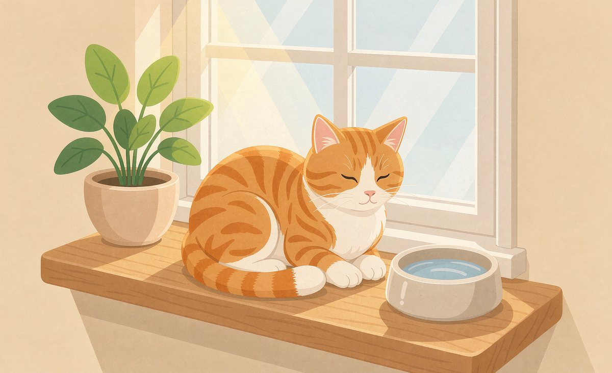
关于这本手册
这本手册把 25 章内容写成可以直接照着做的条目：每一个数字、月龄、剂量，都能在附录里找到出处；凡是权威来源之间存在分歧的地方，都单独标出来，而不是揉成一句“看情况”。
全书分五个部分——与猫共处、喂养、健康、购物清单、常见提问，覆盖从「我是不是该养猫」到「猫半夜吐了要不要冲医院」。
关于配图
全书 25 张配图，分两类：一类来自内容底本公众号原文里的实拍与手绘插图，一类是本手册为无图章节补绘的示意图。两类图在版式上不作区分，统一以「配图」标注，图注里说明这张图想表达的那个判断。
使用前先看这三条
全书速览
如果你刚接猫回家
先读第 1、3 章，把家改造成“猫安全区”，再谈感情
预约首次体检，带上免疫本
如果你在纠结吃什么
第 6 章定主食框架，第 7 章看生骨肉的风险，第 8、9 章管零食和营养品
把钱花在主食上，别花在补剂上
如果你怕它生病
第 10–14 章是硬功夫：绝育、驱虫、疫苗、牙齿、日常症状
重点背下附录D 的急诊红旗
如果你只想抄清单
直接跳第 15 章“铲屎官购物清单”
避坑项都在表里标了出来
目录
第一部分 · 与猫共处
养猫前 90% 的纠结，都在这五章里。
1新手养猫30问
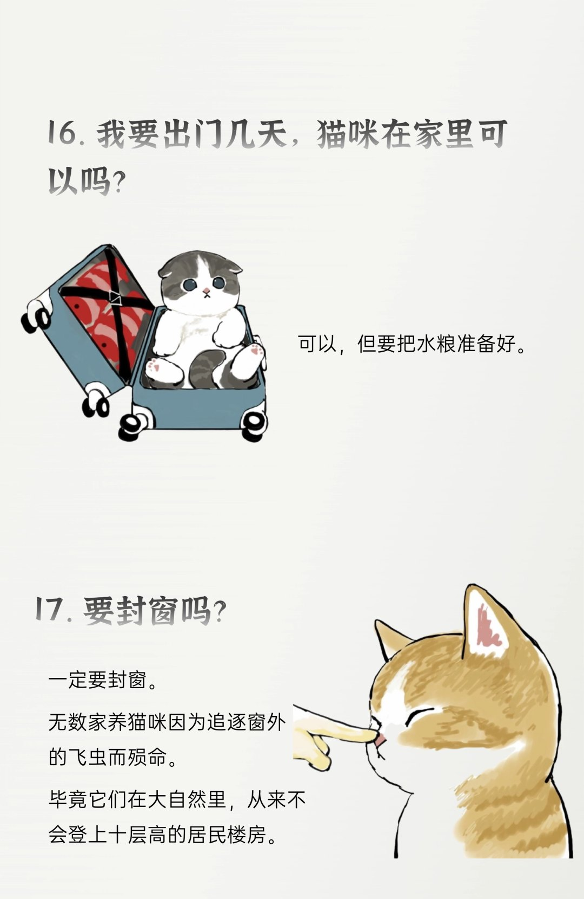
把新手最常问的问题压成一张决策表。先看结论，再看理由。
1. 我适合养猫吗？
- 时间：每天需要 20–30 分钟有效互动（逗猫棒、梳毛），以及每天铲屎。猫不是“不用管的宠物”。
- 预算：月度基础开销大致 300–800 元（主食 + 猫砂 + 驱虫 + 体检摊销）；首年含绝育、疫苗、用品，通常 3000–8000 元。
- 居住：租房要确认房东同意；必须封窗（纱窗/金刚网），坠楼是家猫最常见的致死意外之一。
- 长期：猫平均寿命 12–18 年，室内猫可达 20 岁以上。这是一份十几年的承诺。
2. 新手友好型选择
- 中华田园猫体质强健、医疗成本低；英短/美短性格稳定、短毛好打理，都是新手友好选项。
- 不要因为“好看”选折耳猫：折耳源于软骨发育异常基因，几乎所有折耳猫都会出现不同程度骨软骨发育不良，属遗传病，不是“特色”。
- 长毛品种（布偶、波斯等）需每天梳毛，肠胃偏敏感，护理成本显著更高。
- 领养优先：正规救助机构/领养日的猫已做基础检查，且避免了繁殖场风险。
3. 到家第一周做什么
- 先隔离：把猫放进一个安静的小房间（带粮、水、猫砂盆、猫窝），不要全屋放开。这一步能极大降低应激，也方便观察吃喝拉撒。
- 不要强行抱撸。让猫主动靠近你。第 1–3 天它躲着不出来是正常的。
- 固定食物：继续喂猫舍/前主人给的粮，7 天内不要换粮，之后按“7 日换粮法”逐步过渡。
- 不要去宠物店洗澡。新到家的猫免疫力波动，洗澡 + 陌生环境是应激双杀。
- 约首次体检：到家后 3–7 天内，做基础体检 + 粪检 + 传染病快检 + 驱虫。
4. 高频问题快答
| 问题 | 答案 |
|---|---|
| 猫一定要打疫苗吗？ | 核心疫苗（猫三联）强烈建议；狂犬在中国属强制免疫，办证/出行必需。见第 12 章 |
| 猫必须绝育吗？ | 强烈建议。母猫可大幅降低子宫蓄脓与乳腺肿瘤风险；公猫可显著减少喷尿、打斗。见第 10 章 |
| 猫能吃生骨肉吗？ | 可以，但有真实风险（细菌、寄生虫、营养失衡）。见第 7 章 |
| 猫喝牛奶可以吗？ | 多数成年猫乳糖不耐，喝牛奶易腹泻。用宠物羊奶粉或直接给水 |
| 猫需要洗澡吗？ | 家养猫 2–3 个月甚至更久洗一次即可，猫会自洁。频繁洗澡破坏皮肤屏障 |
| 猫可以吃人的饭吗？ | 不可以。高盐高油伤肾，且葱蒜、洋葱对猫有毒 |
| 猫鼻头干就是生病？ | 不是。睡觉/安静时鼻头干是正常的，持续发烧 + 流脓鼻涕 + 精神差才是感冒 |
| 猫吐毛球正常吗？ | 偶尔（一周 1 次左右）属正常；频繁呕吐、吐后不吃、精神沉郁是异常。见第 14 章 |
| 猫需要剪指甲吗？ | 需要，每 1–2 周一次。见第 18 章 |
| 猫能笼养吗？ | 不建议长期笼养，会造成严重心理与运动问题 |
五、30 问逐条速查
| # | 问题 | 回答 |
|---|---|---|
| 1 | 猫咪好养吗？ | 猫咪是一种生命力顽强、自理能力也很强的动物。跟狗狗相比，猫咪需要主人投入的精力很少。同时，它们也能生机勃勃、自得其乐地融入家庭中。 |
| 2 | 养猫一个月要花多少钱？ | 从日常养育来说，200 元/月的预算，已经足够给猫咪很好的生活了。 |
| 3 | 猫咪可以活多久呢？ | 12–18 岁。长寿秘诀：尽早绝育，健康饮食，良好的医疗保障。 |
| 4 | 猫咪要绝育吗？觉得有点残忍诶！ | 绝育对猫咪来说，好处很多。早绝育的猫咪，平均寿命会提升 2 岁多。主要原因是猫咪会周期性发情，每个发情周期对猫咪的消耗都很大，比如食欲下降、情绪不稳定……为了猫咪的健康着想，早日为它们进行绝育手术吧。 |
| 5 | 绝育手术危险么？在小县城能做吗？ | 绝育手术是个小手术，也是宠物医院最常见的手术，不危险。绝大多数宠物医院都能做好这个手术，家长无需担心。 |
| 6 | 猫咪会长多重呀？ | 母猫 6–12 斤，公猫 10–20 斤。小知识：① 公猫会比母猫重约一倍；② 猫咪在 1 岁左右发育完全；③ 绝育后猫咪体重会提升 30% 左右；④ 体格更大的猫咪，后代也会更重。 |
| 7 | 猫咪一天要吃几顿？ | 猫咪一天吃十顿也正常哦~因为它们是少食多餐的典范。给它碗里放一整周的猫粮就好，猫咪饿了就会去吃一口，不会暴饮暴食的。不过那些会腐败的食物，比如罐头、生骨肉，就要尽快食用，超过 12 小时就要换掉。 |
| 8 | 听说猫咪吃鱼油、维生素什么的会毛发好，是真的吗？ | 是真的，但不用刻意补充。因为这些营养元素在猫粮里已经添加完毕了，无需额外添加。 |
| 9 | 要给猫咪刷牙吗？ | 刷牙是很好，但没几个小猫咪会配合……如果做不到的话，就由它去吧。 |
| 10 | 猫咪要洗澡吗？ | 可以不洗。因为猫咪很爱干净。它们每天睡 15 个小时，而醒着的时间里 70% 都在舔毛。 |
| 11 | 猫咪每天睡这么久？ | 猫咪每天睡 15 小时左右。它们会零零散散睡很多次，但都是浅睡眠，短则几分钟，长则 3–4 小时。 |
| 12 | 猫咪睡哪里？ | 猫咪最喜欢跟人一起睡。人在看电视，它们就喜欢在旁边的沙发上睡觉。人在床上，它们就喜欢在床头柜、枕边睡觉。人在电脑桌，它们就喜欢在鼠标垫上睡觉。 |
| 13 | 听说过“遛狗”，那需要“遛猫”吗？ | 不需要。猫咪对外界“好奇又害怕”。它们天然适合宅在家里。所以在“城市化”的现代社会里，猫咪成为了很受欢迎的宠物。 |
| 14 | 那要出门怎么办？ | 装航空箱里就可以哦。也可以用猫包，美观便携。 |
| 15 | 只养一个猫，它会孤独吗？ | 不会。人是群居动物、狗是群居动物……所以会有孤独感，但猫咪是独居动物，它们独自一个生活，也能自得其乐。 |
| 16 | 我要出门几天，猫咪在家里可以吗？ | 可以，但要把水粮准备好。 |
| 17 | 要封窗吗？ | 一定要封窗。无数家养猫咪因为追逐窗外的飞虫而殒命。毕竟它们在大自然里，从来不会登上十层高的居民楼房。 |
| 18 | 有什么食品猫咪不能吃？ | 有很多，比如巧克力。注意，不要轻易把人类的食物给猫咪吃。 |
| 19 | 猫咪会冷、会热么？ | 会。猫喜欢的温度，跟人差不多。 |
| 20 | 猫咪会生病吗？病了怎么办？ | 猫咪也会生病。它们和人类一样，也是血肉之躯。要照顾好小猫咪，如果生病了要及时就医哦。 |
| 21 | 猫咪喜欢狗吗？能融洽相处吗？ | 多数猫咪对狗狗无感，甚至有点害怕。想要猫咪和狗狗融洽相处，需要较长的适应期，以及极有耐心的家长。 |
| 22 | 猫咪会开心、会难过么？会认主人么？ | 猫咪是特别有灵性的动物，它会生气、会难过，会向人类表达情绪，会撒娇。不过在猫咪心中，人类不是主人，而是好朋友，它们和人相处很平等。 |
| 23 | 猫咪从多大开始养会比较好？ | 四个月以上。太小的猫咪连基础的疫苗都没打完，并不安全。总有人纠结大猫养不熟，这其实是对猫咪的误解。猫咪不同于狗狗，猫咪可不会认主，它们眼中的人类是好朋友。朋友相交无论年龄。 |
| 24 | 为什么我的猫咪很亲人，总陪着我，却不让我抱？ | 想象一下，你很喜欢一只大象，但大象喜欢用它的鼻子把你卷起来在空中摇摆。虽然大象并没有恶意，但有的人也不喜欢这样。 |
| 25 | 养猫人每个月要做哪些事情？ | 每隔 2–3 天铲一次屎、换一次水、加一次粮。就这些啦，养猫是很简单又很快乐的事情。 |
| 26 | 猫咪掉毛吗？ | 除了无毛猫，大多数猫咪都会掉毛的。尤其是天气变热的时候，猫咪也会脱下厚厚的毛衣~ |
| 27 | 我就住一个单间，能养猫咪么？ | 可以的。小猫咪不在乎这些。 |
| 28 | 什么品种的猫咪温顺啊？ | 跟品种无关，要看具体的猫。家猫都是同一种动物，品种是人类根据外形强行划分的。就像外星人突然降临，把我们分为“卷发人”“单眼皮人”一样。 |
| 29 | 猫咪性格会变么？ | 会。猫咪跟人一样，有熊孩子时期、有成年期、有老年期。随着年龄的增加，它们也会变得成熟、平静，也会跟人类更默契，更融洽。 |
| 30 | 猫咪会死么？ | 再长寿的猫咪，也不过 20 年的寿命。而这 20 年里，你将会和它产生浓浓的感情。有人说，养猫是现代人的第一胎。还有人说，养一只猫，就是埋下了一颗十几年后的悲伤种子。它终究会离开这个世界。待我们垂垂老矣，再盘点往昔，也会再次想起这段珍贵的回忆。曾有这样一个小家伙，出现在我们生命里。奔跑跳跃、笑逐颜开。 |
2猫咪行为及心理解析
猫不是“小型犬”。理解它的沟通方式，90% 的“猫脾气怪”都会消失。
一、尾巴与耳朵：最直观的情绪仪表盘
| 信号 | 含义 | 你该做什么 |
|---|---|---|
| 尾巴竖直、尖端微弯 | 友好、打招呼 | 可以回应，靠近 |
| 尾巴缓慢左右摆 | 专注/有点不耐烦 | 观察，不要强行摸 |
| 尾巴快速抽打、拍地 | 烦躁、即将攻击 | 立刻停止抚摸，退开 |
| 尾巴夹在腿间 | 恐惧、服从 | 给它退路和藏身处 |
| 耳朵向前 | 好奇、放松 | 正常互动 |
| 耳朵向后贴（飞机耳）、胡须后压 | 紧张/害怕/准备防御 | 停止互动，降低音量 |
| 缓慢对你眨眼 | 信任与放松（“猫式亲吻”） | 可以慢慢地回眨 |
| 肚皮朝上躺 | 对环境极度安心 | 不表示“来摸肚皮”，多数猫摸肚会立刻反咬 |
二、猫的五个真实需求（环境丰富化）
- 安全：高处、躲藏点、退路。猫需要“能俯视全场”的位置，也需要能藏起来的纸箱或猫窝。
- 资源不竞争：多猫家庭中，粮碗、水碗、猫砂盆、猫窝都要“多点分布”，避免排队被堵。
- 可捕猎：每天用逗猫棒模拟“追踪—扑击—抓住”的完整流程，5–10 分钟一次，一天 2 次。
- 可抓挠：竖直猫抓板（猫更爱竖着抓）放在沙发旁、起床必经处，比放在角落有用。
- 可控制：让猫自己决定什么时候亲近你。强行抱是应激的头号来源。
三、最常见的五个“问题行为”，根因与解法
| 行为 | 常见根因 | 解法（不要打骂） |
|---|---|---|
| 乱尿（非标记） | 猫砂盆脏、数量不够、猫砂不喜欢、位置吵、泌尿系统疾病 | 盆数 = 猫数 + 1；每日铲 1–2 次；换无香结团砂；先排除疾病（尿检） |
| 喷尿标记（竖直喷） | 未绝育、多猫压力、外部猫入侵 | 绝育；减少资源竞争；封窗阻挡外猫 |
| 咬人/抓人 | 把手当玩具玩大了、抚摸过度、疼痛 | 从小不用手逗猫；被咬立刻静止并结束互动；每次互动控制在猫耐受范围内 |
| 夜里跑酷/叫 | 白天活动不足、饥饿节奏、夜行性本能 | 睡前 20 分钟高强度玩耍 + 一顿正餐；白天增加环境丰富度；不要半夜起来喂 |
| 过度舔毛/秃斑 | 应激、过敏、皮肤病、疼痛 | 先看兽医排除皮肤与内科问题，再评估环境压力 |
跟人一样，每只猫咪都有完全不同的性格。即便是同一胎的亲兄弟姐妹，都会各有不同。
记录了 2022 年 1 月 1 日出生的“小Q-悟空窝” 同胎 6 只猫的差异——这一窝由主理人全程抚育长大，最后变成了四位完全不同风格的家庭成员：
- 南枝（大姐）：从小颜值出色、身体强壮，是同胎里体重第一名；但也是 6 只里唯一不亲人的——不喜欢被抚摸，总躲得远远的，甚至会因为被拥抱而发抖。
- 墩墩（同胎母猫）：最粘人的一只，几乎一刻也不想离开脚下。原因是它从小抢不到奶，靠人工喂奶长大，对人类产生了比“妈妈”还重的依赖和情感。
- 风暴（同胎公猫）：处于两者中间。喜欢和人玩耍，但非常强势，人类非要抱它就会被咬一口；咬完也不往心里去，继续嬉闹互动。
- 吹雪（同胎小公猫）：软糯老实、性格温和。被摸肚子时举手投降但完全不反抗，是“对人类百依百顺的猫”。
注意：这四只性格各异的猫咪，出自同一窝，都在同样的照顾下长大。所以主理人给出的结论是——
我后来开了猫舍，才意识到原来它属于脾气很爆的猫。它亲近人类，但绝对不是毫无脾气、随便揉捏的面团。
猫咪性格的复杂性来自三处叠加：先天性格 + 后天跟家长的磨合 + 随年岁增长的心智成熟。一只猫刚到家时“还有一点像块璞玉”，在和家长互相熟悉、亲近、磨合的过程中，它也会发生改变。
猫咪是少数能在“野性”和“宠物性”之间切换的宠物。跟狗狗不同——狗狗跟它的祖先灰狼已经完全变成了两种不同的生物，它们失去了猎手本性，每一只狗狗都渴望进入人类的家庭中。
但宠物猫和野猫，只需要 1–2 代就可以完全切换。宠物猫的孩子从小在野外长大，也会变成猎杀机器和冷血猎手；而野猫的后代在人类环境里生存下来，1–2 代后，也会成为温柔的小奶猫。
这里最大的区别是 2–8 周期间的社会化训练。
- 如果这个阶段的小猫咪每天和人类亲密接触，就很容易融入人类家庭，把人类当做提供食物的友善大型动物。
- 反过来，只需要 1–2 代，猫咪就会完全适应野外捕猎生活，对人类也充满戒备。
- 猫咪在 2–8 周是否接受过人类的抚摸和照顾，将决定它们终生对人类的观感。
这也解释了一个常见现象：
好多家长说，抓到一只野猫回家后，头几天还好，后面闹得鸡飞狗跳的。其实是因为野猫进入室内，往往是因为过于饥饿，等到吃饱了，又会恢复野性。尤其是没有经历过 2–8 周社会化训练的猫咪，对人类始终是怀有戒备的。
猫舍 vs 野外，是两条完全不同的筛选路径：猫舍 = 人工选育 = 好看、亲人；野猫 = 自然筛选 = 聪明、强壮。
狗狗的安全感来自主人。猫咪的安全感来自环境。
- 猫咪对于变换环境非常敏感。带狗狗出门，狗狗最注意的是主人，喜欢在主人旁边待着；而猫咪则会先试图寻找一个安全的角落躲起来。
- 很多人尝试遛猫，会发现猫咪害怕得不行，经常会躲进路边的车底，造成事故的概率比较高。
- 肚子是猫咪的脆弱之处，只有在有安全感的情况下，猫咪才会四脚朝天、敞开肚皮睡觉。注意，多数猫咪不喜欢被摸肚子。
建议在家中保留一个猫咪专属区，它跑到那里，人类就不会抓它。这会让它有“安全感”。这个专属区通常是猫树的顶部、或者沙发底下、或者客厅的角落。
建议在客厅放一个猫树——这样可以为一只害羞的猫咪提供足够的安全庇护，从而它会更愿意跟家里人共处一室，而不是走开寻找更隐秘的地方。
猫咪懂得按需吃饭。它们每天会吃 10–20 顿，每顿 3–5 g。家长可以一次性放一周量的猫粮——饿了它就会去吃两口，不会暴饮暴食。
- 猫咪每天要睡 15 小时左右；醒着的时间里 70% 都在梳理舔毛。
- 它们会零零散散睡很多次，但都是浅睡眠，短则几分钟，长则 3–4 小时。
- 猫咪保留了猎手的习惯，会把粪便埋入沙土中，以便隐藏气息，更好地捕猎、规避天敌。猫咪上完厕所，也会自己把排泄处舔干净。
猫咪会每日在家中反复巡逻多次。这是它的领地，它的家。
猫咪对同类的敏感程度非常高。家里来了一个陌生人，有些猫咪都懒得看一眼；但如果来了陌生猫，任何猫咪都会坐立不安。陌生同类侵入领地，容易引发猫咪的紧张、焦虑，甚至带来应激反应。
你换一个思路就知道了：人类对猫咪来说，是资源。就像是黄金、珠宝、矿山，多多益善。而同类是这些资源的“潜在竞争者”。
有的猫咪会因为过于焦虑而引发应激反应，严重情况下会致死。最容易引发应激反应的是：接触陌生猫咪——比如家长引入第二只猫的时候，原住民猫可能会产生应激。
需要明确一点：应激反应是很难完全规避的。有的猫咪甚至因为洗澡产生了应激反应后死亡——这属于很少见，但真实存在的案例。我们尽可能不给猫咪强烈的刺激，当它表现出了强烈反应的时候，不要逼迫它。
- 猫咪是真正的食肉动物。它们的大部分能量不是来自碳水，而是来自肉。
- 它的味蕾也与我们大为不同——完全进化成了专注在全肉食的饮食上。
- 它们无法品尝糖类，却比我们对于肉类的香味更敏感。
给猫吃一样新的食物，也许它不会马上感兴趣去吃，甚至会做埋屎动作。这不代表它不喜欢、不会吃掉这份食物，也许趁你不注意的时候就去吃了。
不要在猫做以上动作时，看它不吃就马上换它喜欢的食物——以后它会默认为：只要我拒绝，我就有好吃的。正常的健康的小猫，不会饿到自己的，所以不用担心它不吃东西。
流动水源对猫咪来说是更新鲜的水源。有专门给猫咪做的流动饮水机，有些猫咪确实会喜欢，但多数猫咪对此并无感觉。
受一组基因控制，猫咪对猫薄荷有强烈的兴奋反应。从狮子到家猫，大多数猫科动物对这类植物有相同的反应。
猫咪不会像狗狗一样，认为你是主人。在猫咪眼里，你就是朋友，更平等。想训练猫咪通常不会成功，它能理解但懒得配合。
猫咪不像狗狗 24 小时准备迎接主人热情的互动。它们更喜欢自己来挑选一个时间和人互动。
主要围绕头部和尾巴根位置。不要碰肚子和爪子，猫咪不喜欢。猫咪通常会自己伸展开身子，教你按摩哪里会舒服。
- 呼噜呼噜声，表示很惬意和有安全感，通常希望被抚摸；
- 舔舐主人；
- 用身子蹭、用头来顶主人的头；
- 在主人面前翻肚皮。
你喜欢睡觉的时候让猫咪蜷缩在你脚边吗？你想跟猫咪一起睡吗？这其实是最容易的事情了——很多猫咪都喜欢依偎在人类身边，对于猫咪和主人来说，一起睡觉是建立情感纽带的最温柔方式。
如果你不希望猫咪进卧室睡觉的话，要从一开始就制定好规则，因为后面再更改就难了。
另外，如果你要给猫咪买一张床，记住猫咪一般都喜欢在高高的地方睡觉和休息。放在地板角落的猫床可能注定永远无猫光顾——或者只有狗狗会来用。
猫咪和狗狗不一样，不要尝试安排它的睡眠地。当你为狗狗准备了一张小床放在角落，它可能会很高兴地躺在上面，而在猫咪身上，这一招估计就不管用了。
3猫咪到家注意事项
一、到家前：把家改造成“猫安全屋”
| 区域 | 必做 | 为什么 |
|---|---|---|
| 窗户/阳台 | 封窗（金刚网纱窗、隐形防护网） | 坠楼（“高楼综合征”）在家猫意外伤害中占比极高，且不是“猫有九条命”能兜住的 |
| 电线 | 全部收进线槽或走明线固定 | 猫啃咬电线可致电击伤、肺水肿 |
| 小物件 | 皮筋、耳塞、针线、药片、电池全部上锁 | 猫吞线状物易造成肠套叠/穿孔，手术风险高 |
| 清洁剂/药品 | 柜子上锁；不用含酚类（如滴露）消毒 | 酚类对猫肝毒性强，猫舔毛会摄入 |
| 植物 | 查附录C 黑名单，把百合类彻底清出家门 | 百合对猫剧毒，全株与花粉均可致肾衰 |
| 猫砂盆 | 安静、通风、远离食碗；数量 = 猫数 + 1 | 盆少/位置差是乱尿的第一原因 |
| 猫窝/躲藏点 | 至少 2 个，其中一个可俯视房间 | 给猫退路，显著降低应激 |
二、到家第 1–14 天日程表
| 时间 | 做什么 | 不要做什么 |
|---|---|---|
| 第 1 天 | 限缩在一个空房间；粮水砂盆猫窝到位；不打扰 | 不要全屋放开、不要抱、不要洗澡 |
| 第 2–3 天 | 在房间里陪坐、轻声说话；用逗猫棒远距离互动 | 不要强拉出躲藏点 |
| 第 4–7 天 | 观察吃喝拉撒；约首次体检（体检 + 粪检 + 传染病快检） | 不要在体检前换粮、驱虫叠加 |
| 第 8–14 天 | 逐步开放其他房间；开始建立“玩耍—进食—睡觉”节奏 | 不要在这两周安排客人来访 |
三、第一周必须盯的四件事
有进食（哪怕少）有饮水有排尿（至少 1–2 团）有排便（成形、无血）精神状态（有清醒期）眼鼻分泌物（无脓性）四、家里已有其他宠物怎么办
- 先完全隔离 7–14 天（不同房间、独立用具），期间各自完成体检与驱虫。
- 交换气味：用毛巾分别擦拭两只动物，再交换给对方闻。
- 隔门喂食：门两侧同时喂饭，建立“对方的味道 = 好事”的联想。
- 视觉接触：用栅栏/玻璃隔开，短时间接触，表现紧张就退回上一步。
- 正式合笼：全程有人看护，准备多个躲藏点与多条退路。注意：猫与犬同住，永远不要让犬单独与猫相处，除非已完全确认安全。
五、头 48 小时的正确顺序
猫咪对全新环境非常敏感，它们喜欢呆在自己熟悉、有安全感的地方。刚刚到新家的时候，一切都非常陌生，猫咪需要几天时间熟悉。
它首先会寻找自己觉得安全的角落，慢慢观察。一般 1–2 天之内，猫咪就会有几个自己觉得安全的角落，并且开始探索家里其他的角落，而且也会建立对家长的信任。
- 在猫咪到家之前，家长应准备好猫粮、猫厕所、猫砂等。
- 并且一定要注意做好封窗，避免猫咪掉下去。
- 家中曾养过病宠的家长，还应使用宠物专用消毒液把家里先消消毒。
- 幼猫到家的时候，先让猫咪呆在一个小一点的独立空间里，比如书房、客房或者封了纱窗足够保暖的阳台。
- 除了必要的添食加水铲屎，忍住好奇心和关心，减少一切干扰。
- 等猫咪熟悉环境后，可以把门打开，但不要主动逗它，让它自个儿探索走出来。
- 当猫咪能比较自在地在有人的房间走动的时候，可以逐步增加互动，例如用逗猫棒逗它，很快就能建立起信任来。
- 如果家里空间较小，猫咪躲在床底下，可以尝试用逗猫棒将它吸引出来，而不要强制抓出来——这样可能会让小猫觉得家里没有安全的地方。
需要特别说明：有些猫咪到家就会立即融入，非常社牛，这种情况下家长可以跳过“破冰期”。例如猫舍的猫咪，经过很多代的筛选，大多数都属于这一类。
如果家里有猫咪的话，通常是“原住民”猫咪的情绪更激动，会感觉被侵犯了领地。主人要更加照顾原住猫咪的感受，对它更好一些。而新猫咪还没有对这块领地建立领主意识，所以情绪相对要稳定。
- 首先将两只猫隔开，关在两个房间，或者有一只放笼子里。
- 让它们能感受到对方的存在、对方的气味，但是不能接触到对方。
- 然后逐步打开笼子或者房间门，让它们能够互相接触到。此时它们都有自己觉得安全的区域，也会想去探索对方的区域，会有一些互动和打打闹闹。只要不是打架，家长可以不用制止。
- 如果出现打架情况，还是要把两只猫咪继续分开。
- 经过一段时间之后，两只猫咪会逐步降低排斥心理，家长就可以期待看到它们互相舔毛啦。
情况要更复杂一些。毕竟是两个物种，肢体语言、攻击能力都完全不同。例如狗摇尾巴是示好，但是猫的话则是攻击和戒备。狗狗可能只是无心的一个动作，但对猫咪可能是一记重击。
- 猫咪的战斗能力远远弱于狗，猫咪天然就会怕狗。
- 狗狗通常很热情、愿意主动靠近猫咪，这对猫咪来说像是强敌进攻，就会更害怕。
- 所以猫狗相处，需要更长时间去适应，前期的每次接触，都需要在家长看护下进行，直到双方互相适应为止。
- 到家之后，打开航空箱让它自己出来，请勿直接强行抱、拉出来。
- 等它出来之后，抱它去踩一下猫砂，让它知道在哪里上厕所，别的就不用管它了。
- 猫咪到了新环境，第一诉求是掌控环境。踩完猫砂后，它估计会各处巡视、找安全空间，期间会抽空上个厕所，最后才会吃饭喝水。有的猫到家甚至要 10 小时才会完成如厕、吃饭、喝水这三件事情。
- 它旅途有十几个小时都没有上厕所，所以让它踩一下猫砂比较重要，避免它找不到厕所、一时着急，在床和沙发上拉了。
- 到家第一天不太建议跟猫咪激烈互动，尤其是玩逗猫棒，最好是让它吃饱喝足、睡上一觉，第二天再开始玩。
- 航空箱里放的小尿垫需要取出来，看一下有没有被它尿湿。如果尿湿，它身上可能也会沾有尿液，可以用湿毛巾或者免洗手套帮它擦拭，也可以等一天左右猫咪自己会舔干和梳理好毛发。
- 航空箱内顶附上的疫苗本需要取出保管。
- 有任何问题，随时跟繁育人同步——正规猫舍会长期提供养猫方面的答疑和帮助。
4和小猫咪互动、建立感情
感情不是“抱出来的”，是“每天 10 分钟逗猫棒，坚持三个月”出来的。
一、正确抱猫与错误抱猫
| 做法 | 结果 |
|---|---|
| 一手托胸、一手托臀，让猫四肢有支撑，贴近身体 | ✅ 猫有安全感，多数能接受 |
| 掐着腋下举高、让后腿悬空 | ❌ 失去支撑，多数猫立刻挣扎 |
| 仰面翻抱肚皮（“婴儿抱”） | ❌ 暴露软肋，触发防御，极易被抓咬 |
| 强行按住不让走 | ❌ 建立“人手 = 危险”的联想 |
二、玩耍：一天两次，每次 5–10 分钟
- 完整狩猎序列：追踪 → 潜行 → 扑击 → 抓住 → 咬死。逗猫棒要模拟这一整套，最后让它“抓到”，再收场，猫才满足。
- 收尾喂饭：玩完立刻给一顿正餐，形成“捕猎成功 → 进食 → 梳毛 → 睡觉”的自然节律，也是解决夜间跑酷最有效的办法。
- 每次以成功收场，不要在猫还有兴趣时被没收玩具，否则挫败感会变成攻击行为。
- 永远不用手当玩具。用手逗猫 = 教会它“手可以咬”，将来换人的手也一样咬。
三、抚摸地图：哪里可以摸，哪里不可以
普遍安全
下巴
脸颊两侧（腮腺区）
耳根后
头顶
（多数猫）
看个体
背部
尾巴根部（部分猫很喜欢，部分会立刻翻脸）
雷区
肚皮
尾巴
四肢爪子
胡须
四、建立信任的七个动作
- 每天固定时间喂食，让它把你的出现和好事绑定。
- 蹲下、侧身、避免直视盯视（凝视在猫语里是挑衅）。
- 缓慢眨眼，它回眨就是接受了你。
- 用手背或伸出的手指让它主动来闻，而不是直接伸手掌拍头。
- 它主动靠近时给一点点食物，而不是立刻抱起来。
- 提供高处（猫爬架/柜顶）——能在高处看着你，是它最大的安全感。
- 允许它拒绝。被拒绝十次里答应三次的猫，才是真的信任你。
在猫咪的眼里，人类捧在手心的食物，是刚刚打猎来的新鲜食物。不管是好是坏，它总是更愿意多吃一口的。平时用手捧一点猫粮喂小猫咪，可以拉近和小猫咪的感情。
猫咪喜欢被抚摸，尤其是头部和尾巴根部这种它自己挠痒痒碰不到的地方。你，是它的人形痒痒挠。
在猫妈妈怀里吃奶的时候，小猫咪就学会了踩奶。大体格的人类、甚至狗狗也会让它想起在妈妈怀里温暖的童年时光，让它踩一踩好啦。
主理人说：我家那位猫咪喜欢对着我脖子踩奶，我不得已只能缠一层围巾，不然踩得还挺疼的。记住，要给小猫咪剪指甲，不然就很难享受踩奶啦。
- 前爪长得快，每周都要剪一次；后爪长得慢，可以 2–3 周剪一次。
- 不要剪到“血线”。手速要快——“只要手速够快，它脑子就跟不上”。
- 如果猫咪不听话、需要压制才肯剪，那就分几次慢慢剪，别一次硬来。
- 如果不小心弄疼它了，或者时间太久它不耐烦了，就停下来，剪完之后记得吃点好的补偿一下。
当它遇到别的小猫咪，尤其是自己领地被别的猫咪侵入的时候，优先照顾原住民小猫咪的感受。你眼中可爱的另一只猫咪，在它眼里可无异于洪水猛兽，比别的人类都要可怕好多好多。
用逗猫棒、激光笔之类的玩具，每天跟它玩一会儿。小猫咪可没有手机玩，每天也很无聊的。
喂它好吃的食物，比如鸡肉粒冻干、罐头这种。零食就是用来跟猫咪拉近感情的。如果没有的话，也可以考虑定时定量喂饭，让小猫咪感受到：你是它的衣食父母。
它喵喵叫的时候，你也可以喵喵地回应它。猫咪别的听不懂，但是你喵喵叫，它就知道你是在跟它说话。
平时叫猫咪名字的时候，最好给它吃好吃的，或者抚摸它，让它把自己名字和快乐的行为绑定。
平常可以把猫咪放在沙发或者小茶几上，我们坐在地上跟猫咪玩，让你的脸跟猫咪的眼睛平齐，或者更低一些。因为猫咪是天生的捕猎者，它们喜欢高处、视野开阔，对环境的掌控感更强——这对猎手而言非常重要。被人类俯视，并不是它们喜欢的。
此外，我们也可以用头去顶猫咪的头，而不是用手去操纵它的身体，它也会感到更安全舒适。
对着猫咪缓慢地闭上眼睛，就是在“亲吻”猫咪。因为这代表了不设防、信任。在信任的同伴旁边，动物才会卸下防备、沉沉睡着。
反过来，如果一直盯着猫的眼睛，它也会觉得不自在，仿佛你下一秒要攻击它。
所以，躺在猫咪旁边的时候，看着它，然后在它面前缓慢地闭上双眼。这会让小猫咪意识到：原来这个“大家伙”毫无恶意、傻乎乎地就在我面前睡着了，我得守护一下 ta。
还指出一个细节：猫咪不仅会在你睡觉的时候守护你，在你去上厕所的时候，它也会跟过来守着。在野外，同伴排泄的时候容易遭遇天敌袭击，这个时候，小猫咪就会过来为你望风。
- 喊它的名字来引起它的注意，然后拍拍大腿暗示它过来，也可以给点小零食互动，小猫会跳上来，咕噜咕噜——这时候可以 rua 它。
- 猫咪喜欢依偎在人类旁边，发出呼噜噜的声音。这种呼噜噜的声音频率对人类安眠宁神也很有好处。
- 打猫咪。 它毕竟那么小只，真的犯了错误，轻轻拍一下脑门警告一下，它稍微吃痛就知道规矩了，不要太用力。猫咪的联想能力很弱——必须在它犯错的当时立即指出来；如果过了一天发现它尿床单了再去批评它就没用了，它只会觉得这个人今天是不是疯了。
- 强制跟猫咪进行互动。 把它从安全区里揪出来、它想挣脱的时候不让它走……这都是会让猫咪害怕的。
结论是：猫咪跟狗狗相比心眼会小一些，但只要不是故意伤害它，它通常都不会生气的。真正重要的是，每次我们伸出双手，都没有让它受到伤害——时间一久，它就会知道这是值得信任的人。日久见人心，谁对它好，小猫咪心里清楚着呢。
有些猫咪很喜欢主人抚摸，有些猫咪则很抗拒。除了是猫咪自身性格以外，还是主人按摩手法的原因。撸猫要讲究这几点，它会更爱你的。
- 猫咪耳朵处：轻轻揉捏猫咪的耳朵，或者猫咪耳朵后面凹陷处。这会让猫咪觉得很舒服，可以起到让猫咪安定、安静的作用。
- 额头眉心处：轻轻按摩猫咪的眉心处，一直向后推到百会穴。经常抚摸猫咪的眉心额头处，可以舒缓猫咪的情绪、畅通呼吸。
- 脊椎背部处：抚摸猫咪的背部，尤其是脊椎旁的位置，夹着骨脊，由上至下按摩。
- 屁股接近尾巴根部处：这是猫咪感觉最爽的部位。多拍拍这个部位或者帮它按摩一下，可以帮助猫咪放松情绪。当然要注意力度，如果猫咪不喜欢了，一定要及时停下。
- 爪垫肉球处：爪子是猫咪不太愿意被人摸的地方。如果它不愿意，不要勉强。
- 猫咪肚子：只有很少数猫咪才会愿意让人摸肚子，很多猫咪被摸肚子的第一反应就是咬你一口。
5猫咪和人类的共生历史
了解这段历史，能解释一个反复出现的问题：为什么猫和狗完全不一样。
一、时间线
| 时期 | 关键事件 | 对今天的意义 |
|---|---|---|
| 约 1 万年前 | 近东的新月沃地，人类囤积谷物引来鼠类，野猫（Felis silvestris lybica）自行迁入聚落觅食 | 猫是“自我驯化”的——它选择了人类，而不是被人类驯化 |
| 约 4000 年前 | 塞浦路斯、埃及出现与人类合葬的猫；埃及进入“猫崇拜”阶段 | 猫在文化中的神圣地位由此奠定 |
| 公元前 1 世纪—中世纪 | 随商路与船只扩散全球，成为“船猫” | 猫的扩散靠的是“有用”，不是“可爱” |
| 中世纪欧洲 | 与巫术迷信绑定，遭受大规模迫害 | 猫的历史并非一直顺遂 |
| 19 世纪至今 | 品种选育兴起，猫从“工作动物”变为“伴侣动物” | 品种猫的遗传病，很多是近百年选育的代价 |
二、这段历史如何解释今天的猫
- 为什么猫不像狗那样“听话”？ 狗的驯化依赖群体协作（人 = 首领），历时约 1.5 万年以上；猫是独居猎手自愿靠近人类谷仓，从未被真正“驯化”到依赖人类指令的程度。猫没有“服从”的进化基础。
- 为什么猫对陌生人警惕？ 独居动物的生存策略是“不打没把握的仗”，陌生 = 风险。
- 为什么猫要在高处？ 既是猎手也是猎物，高处同时满足观察与避险。
- 为什么猫有“半驯化”气质？ 家猫基因与野猫差异极小，流浪猫能在几代内恢复完全野生状态——这是狗做不到的。
第二部分 · 喂养
喂养是唯一一件你每天都要做、且做错了会慢性致病的事。
6猫粮
一、猫是“绝对肉食动物”
猫在进化中丢失了合成牛磺酸、精氨酸、花生四烯酸的能力，也几乎不能利用碳水化合物。这不是“偏好”，是代谢层面的强制要求：缺牛磺酸会导致扩张型心肌病和视网膜退化性失明。
二、怎么读配方表（按顺序看）
- 看前 3–5 位原料：应当是明确的动物蛋白（如“鲜鸡肉”“鸡肉粉”“脱水鸡肉”），而不是“谷物”“玉米”“小麦”“豆粕”打头。
- 看动物蛋白占比：标注“脱水鸡肉 25%”比只写“肉类及其制品”透明得多。“肉粉/肉骨粉”没有想象中差，脱水后蛋白浓度反而更高，关键是有没有标明来源。
- 看营养保证值：成猫粮粗蛋白建议 ≥36%–40%（干基），幼猫更高；粗脂肪 15%–20%；粗灰分 ≤10%（过高提示骨粉/内脏过多）。
- 看牛磺酸：必须额外添加（标注 ≥0.1% 干基），加热会破坏天然牛磺酸。
- 看钙磷比：约 1.1–1.3 : 1。过高或失衡会伤肾、影响骨骼。
- 不要迷信“无谷”：无谷 ≠ 低碳水。很多无谷粮用豌豆、鹰嘴豆替代谷物，碳水并不低。对谷物过敏的猫其实很少，真正的过敏原更常是动物蛋白。
| 类型 | 优点 | 缺点 | 适合 |
|---|---|---|---|
| 膨化干粮 | 方便、耐存、便宜、清洁牙齿（有限） | 碳水偏高、含水量仅 8%–10% | 多数健康成年猫的日常主食 |
| 主食罐头（湿粮） | 含水量 75%+，有利泌尿与肾脏；蛋白高碳水低 | 贵，开封后需冷藏且尽快吃完 | 泌尿问题、肾病、老年猫、不爱喝水的猫 |
| 冻干（复水） | 接近生食营养、适口性好 | 贵，需正确复水，不当喂食易呛 | 挑食猫、作为拌粮增强适口 |
| 处方粮 | 针对特定疾病配方（肾脏、泌尿、糖尿病、过敏） | 价格高，必须在兽医诊断后使用 | 确诊特定疾病后，遵医嘱 |
三、喂法与分量
- 按体重与体况（BCS）定，不按包装建议走。包装常偏高。先按包装的 80% 起，每 2 周评估一次 BCS 与体重，再微调。
- 幼猫：2–4 月龄每天 4 餐；4–6 月龄 3–4 餐；6 月龄以上可 2–3 餐。
- 成猫：每天 2 餐定时定量，15–20 分钟收碗，避免自助取食（肥胖主因）。
- 老年猫（7 岁+）：少食多餐、提高蛋白质量、关注肾脏与口腔，定期查肾指标。
- 饮水：猫天生渴觉迟钝。全屋分散 3–4 个水碗 + 流动饮水机；不要紧贴猫粮碗。湿粮是提升饮水摄入最有效的手段。
四、猫粮 19 问逐条详解
这一篇是长图形式，共 19 问。以下按逐条，未做改写；“推荐品牌”这类内容带有自身商业立场，仅作参考。
| # | 问题 | 回答 |
|---|---|---|
| 1 | 猫咪要吃猫粮吗？老一辈说，吃剩饭也行。 | 只吃剩饭不行哦。猫咪是纯肉食动物，对米饭的吸收能力很差。老一辈是在农村里喂猫，除了剩饭剩菜，猫咪还可以抓老鼠、飞鸟来补充肉源。现如今，大多数宠物猫生活在室内，无法从大自然中获取食物。 |
| 2 | 那给猫咪吃肉行么？ | 只吃肉也不行。有人只给猫咪吃鸡胸肉，结果猫咪得了软骨病。这是因为鸡胸肉里钙元素不足。在野外，猫咪抓到一只老鼠、一只鸟后，都是骨骼、内脏、肉一起吃，这才是它们的正常食谱。如果要喂肉的话，记得要加内脏、骨骼一起喂哦。 |
| 3 | 那只能吃猫粮吗？ | 除了猫粮喂养之外，还可以采用主食罐喂养、生骨肉喂养。 |
| 4 | 这三种喂养方式哪种最好？有什么区别？ | 生骨肉最好。它模拟了猫咪的野外猎食，是猫咪的自然食谱。但缺点也很明显：太耗时间。需要家长每天买新鲜肉、骨骼、内脏，还需要更频繁地给猫咪做驱虫。猫粮，就是把生骨肉脱水、烘干、灭菌……塑形成颗粒。缺点是鲜味差一些，没有那么好吃。但制作、保存、运输成本低，喂养也方便。因此成为了最主流的喂养方式。主食罐头，就是没脱水、没塑形的猫粮。口感介于生骨肉和猫粮之间，价格是同级猫粮的 5 倍，保存时间也较短。注意，罐头分为主食罐和零食罐。主食罐就是做好了营养配比的，有肝脏、有骨骼、有营养添加剂；零食罐则通常只选取好吃的肉块。 |
| 5 | 只吃猫粮，猫会腻么？ | 不会。人类是杂食动物，味觉丰富。但猫咪的味觉比人类简单很多。它们甚至无法判断甜味，它们对口感的主要判断，就是肉是否鲜美。 |
| 6 | 猫咪爱吃的猫粮，就是好猫粮么？ | 孩子爱吃肯德基，也不能天天吃。要兼顾营养，适口性只是一部分。 |
| 7 | 怎么判断一款猫粮是好是坏？ | 主要看三个东西。① 粗蛋白含量，35% 以上为佳；② 肉类类型：鸡鸭牛 > 海鱼；③ 原料前三位，鲜肉 > 冻肉 > 肉粉 > 非肉类。 |
| 8 | 有一些“美短专用粮”“肠胃专用粮”是怎么回事？ | 都是噱头，沾上这些概念的猫粮，几乎都是劣质猫粮。事实上，猫粮属于动物饲料，标准远远低于人类食品。最高端的猫粮，也不过是用上人食用级的鸡胸肉，技术含量并不高。为了另辟蹊径，有些廉价猫粮会使用“适合某种猫”的说法，作为营销策略。你看到的所有强调功能的猫粮，几乎都是在劣质猫粮的基础上，增加了一点点特殊添加剂。比如补钙猫粮，就每袋多加 5 毛钱的蛋壳粉；比如美毛猫粮，就每袋多加 2 块钱的鱼油。好的猫粮根本不会强调这些，它们只会强调自己用的是整块的鲜肉。把宣传重点放到某种功能上，说明这添加的 5 毛–2 块钱添加剂，已经是它最拿得出手的东西了。 |
| 9 | 鸡肉配方好，还是鱼肉配方好？ | 鸡肉好。因为有的猫咪对海鱼过敏，且海鱼重金属富集问题较多。鸡肉则适口性更好、也更低敏。要知道，海鱼压根就不在猫咪的捕猎食谱里。只是“猫吃鱼”这个概念太过深入人心，所以商家利用了这个点，创造了一款更贵的猫粮。跟鸡肉配方相比，海鱼配方又贵、又不适口、还有过敏、重金属超标的风险。全方位都不如鸡肉。 |
| 10 | 稀有肉源好不好？比如老鹰肉、鲨鱼肉、鳄鱼肉、昆虫肉的猫粮。 | 不好。所有做稀有肉的猫粮品牌，都是从营销层面来做的，根本没有考虑猫咪的需求，而且成本上也说不过去。要知道，最贵的猫粮，也不过是采用了白羽鸡的鸡胸肉。那些价格减半的猫粮，却号称用了各种昂贵的肉。要么是造假，要么就只放了一点稀有肉做噱头。 |
| 11 | 进口粮好，还是国产粮好？ | 各有千秋。国产粮上限高，价格划算，因为国产粮生产日期新鲜很多，也没有海运费、关税。进口粮的下限高，安全保障强，因为欧美国家的猫粮标准更严格，且跨国经营的企业往往实力不会太差。 |
| 12 | 粗蛋白含量高好，还是低一点好？ | 适中最好。粗蛋白含量能反映肉含量，理论极限是 50%，国家最低标准是不低于 25%。通常来说，一款好猫粮，肯定会做到 35% 以上。如果肉含量低，就不适合长期使用，会营养不足。当然，太高也不行。真的做到 50% 的极限值，猫咪容易软便拉肚子。主流观点认为，做到 35% 以上，就是有料的好猫粮！ |
| 13 | 为什么商家宣传“无谷、无豆”猫粮？ | 无谷是应该的。猫咪的肠胃对谷物容易过敏，现在基本都用薯类代替谷物了。当然，薯类也好、谷物也好，都不是猫咪必须的营养成分。只是猫粮的塑形需要淀粉，既然谷物不行就只好用薯类了。至于豆类，主要是因为豆子的蛋白含量高。在当今以“蛋白含量”论英雄的时代，如果放了豆子，粗蛋白数据会虚高，有作弊之嫌。 |
| 14 | 高鲜肉占比高好还是不好？ | 好，但成本会提高一些。 |
| 15 | 烘焙粮好，还是膨化粮好？ | 营养上，区别不大。 |
| 16 | 推荐猫粮品牌 | 食品加工业并不是高精尖行业，有大量的优秀品牌可供选择。进口粮里，渴望、爱肯拿、百利都是久经考验的品牌；国产粮里，海洋之星、奶思、诚实一口也在这些年里积累了很好的口碑。这样不错的品牌有数百个，不一一罗列了。我们猫舍自己早年喂的是爱肯拿的农场盛宴，是进口粮里品控稳定品质优秀的粮。后来随着对供应链的了解加深，我们联系了顶尖供应商，用业内最高标准订购了一款猫粮。论影响力，跟知名品牌没法比，但作为资深繁育人，我们算是最苛刻的甲方。 |
| 17 | 推荐猫粮工厂 | 行业有个说法叫做“厂大于牌”，意思是猫粮的生产工厂比品牌更重要。有人说，品牌就是工厂的分销商，因为真正的技术都掌握在各个工厂手里。我实地走访了一些工厂，比较好的有：汉欧、海辰、中宠、乖宝、福贝。国产猫粮里，如果工厂选择的是上述这些大厂，品控相对更可靠、安全。 |
| 18 | 家中有狗狗，猫粮和狗粮能混吃么？ | 猫咪是肉食动物，狗狗是杂食动物。猫粮肉含量高、价格贵，狗狗吃了不仅花钱多而且容易肥胖。反过来，猫咪吃狗粮则会营养不良。 |
| 19 | 更换猫粮要注意什么？ | 要采用科学换粮法，逐步更换猫粮。混粮比例参考（以 5 天为例）：第 1 天 20%、第 2 天 40%、第 3 天 60%、第 4 天 80%、第 5 天 100%。猫咪的个体差异很大，有的猫咪 2、3 天就能完全适应新粮，有的猫咪要花上 7 天，而一些肠胃敏感的小猫，甚至要花上十天半个月。此外，从低蛋白含量猫粮，换成高蛋白含量猫粮时，猫咪可能会有腹泻拉稀现象，需要更慢地进行换粮。 |
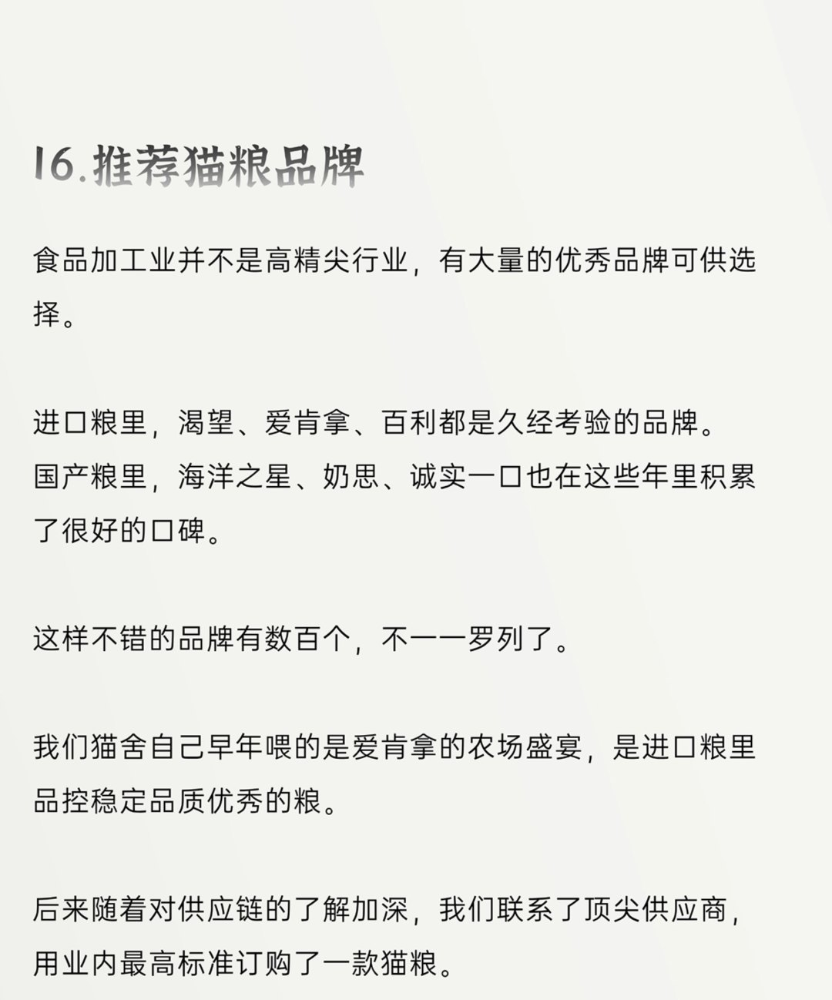
7生骨肉
生骨肉（Raw / BARF）在猫圈争议很大。这一章不站队，只把风险事实摊开，让你自己做决定。
一、支持方的核心论点
- 猫在野外吃的是小型啮齿动物与鸟类，高水分、高蛋白、低碳水，接近天然食谱。
- 湿粮/生食含水 70%+，理论上更利于泌尿系统健康。
- 适口性好，对挑食猫有效；毛发与口腔状态在部分猫身上确有改善。
二、必须知道的四个风险（这才是关键）
| 风险 | 具体表现 | 后果 |
|---|---|---|
| 细菌污染 | 生鸡肉常见沙门氏菌、弯曲杆菌、李斯特菌；市场生肉更甚 | 猫可致胃肠炎甚至败血症；家人（尤其孕妇、幼儿、老人）经手污染也有感染风险 |
| 寄生虫 | 生猪肉的弓形虫包囊、生鱼肉的异尖线虫、淡水鱼的华支睾吸虫 | 猫感染，也可能传染给人（弓形虫对孕妇致命） |
| 营养不均衡 | 只喂鸡胸肉/纯肉块，缺钙、缺牛磺酸、钙磷比严重失衡（肉多骨少） | 营养性继发甲状旁腺亢进（骨骼变形）、牛磺酸缺乏性心肌病与失明 |
| 物理损伤 | 过大/过尖的生骨、冻干骨 | 牙齿断裂、食道/肠道穿孔 |
三、如果你决定喂生食：把风险压到最低
- 必须加营养预混粉。单纯喂肉块 = 营养失衡，这一点没有例外。配方请用兽医营养师给出的（如 NRC / AAFCO 标准配平），不要照搬网络配方。
- 肉源用人类食品级冷冻肉，采购后立即分装冷冻，喂前 24 小时冷藏解冻。不要用市场散装肉、不要用猪肉。
- 冷冻不能杀灭所有寄生虫：弓形虫包囊需 −20℃ 长期冷冻才失活，家用冰箱做不到稳定杀灭。鱼必须先熟制或用商业生食级冷冻鱼。
- 骨：只用生的、大小合适的禽类软骨/颈骨，且要带足够的肉。绝对不要喂任何熟骨头——熟骨易碎成尖片。
- 卫生：专用砧板与刀具，处理完用热水 + 洗涤剂清洗，洗手；猫碗每餐后洗，剩余生肉 30 分钟内收走。
- 家人防护：孕妇、5 岁以下儿童、免疫功能低下者不要参与处理生食。
- 每 6 个月做一次粪检与血检；出现呕吐腹泻立即停喂并就医。
四、生骨肉 12 问逐条详解
| # | 问题 | 回答 |
|---|---|---|
| 1 | 什么是生骨肉？ | 肉、骨头、内脏……野外猫咪就是吃这个，健康、无添加，是最适合猫咪的完美食物。 |
| 2 | 生骨肉就是把肉切好了给猫咪吗？ | 千万记住，NO！只喂纯肉会出大问题。有人只给猫咪喂鸡胸肉，结果猫咪得了软骨病，因为鸡胸肉缺少几种关键营养元素。在野外，猫咪捕捉猎物后，是肉、内脏、骨头都吃，才能做到营养均衡。 |
| 3 | 生骨肉是必须要喂的吗？ | 不是，选一款好猫粮，也足够猫咪的营养和健康了。 |
| 4 | 那“生骨肉”怎么流行起来了？ | 生骨肉原本就是很好的喂养方式，十年前就有很多猫舍、专业人士在使用了。这两年流行起来，核心原因是“冷链配送技术”的普及，因此诞生了一大批生骨肉商家。 |
| 5 | 生骨肉有优点吗？ | 有。生骨肉是猫咪的完美食物，猫咪爱吃、也健康。如果是自制的话，由主人亲手把关，食材新鲜、健康，不用担心无良猫粮以次充好。 |
| 6 | 生骨肉有缺点吗？ | 有。① 制作麻烦，保存也麻烦。猫粮一次能放一周的量，而生骨肉要每天喂两次，要清洗餐具。② 对营养配比的要求高，没做好功课只喂生肉，会造成猫咪营养不良。③ 生肉可能会有细菌、寄生虫，需要提高体内驱虫的频次。 |
| 7 | 驱虫频次？ | 吃生骨肉的猫咪，建议三个月就内驱虫一次。只吃猫粮的猫咪，可以 1–2 年做一次内驱虫。 |
| 8 | 多大可以喂生骨肉？ | 断奶后就可以，大概 50 天的样子。 |
| 9 | 我家猫为啥不吃生骨肉，怎么办？ | 两种可能。① 生骨肉是纯天然的，而原先猫粮里有诱食剂，导致猫咪出现了挑食现象。解决办法：把原先的食物撤走。② 肉切得太大，猫咪不知道怎么下嘴。解决办法：肉切到猫粮大小，甚至是用破壁机打成肉浆，像罐头一样喂食。 |
| 10 | 生骨肉贵吗？ | 肉不贵，但做生骨肉很花时间。尤其只有 1、2 只猫咪的时候，就显得很不划算。 |
| 11 | 生骨肉和顶级猫粮，哪个对猫咪更好？ | 理论上，肯定是生骨肉更好。但实际上，大部分家长做的生骨肉还不如顶级猫粮营养全面。而且对家长的要求也比较高，只适合时间充裕的家庭。好猫粮＝健康餐；好生骨肉＝好吃点的健康餐；其他各类零食＝肯德基。不必为了生骨肉的潮流而感到焦虑，也不是每个人都要做宠物营养专家。 |
| 12 | 猫咪吃生骨肉拉稀怎么办？ | 忽然从猫粮变成纯肉，猫咪肠胃一下子没调整过来。要么坚持长期喂生骨肉，让猫咪肠胃逐渐适应；要么就算了，有些猫咪天生肠胃比较敏感，建议以猫粮为主，偶尔切点鸡肉、牛肉块做零食加餐也不错。 |
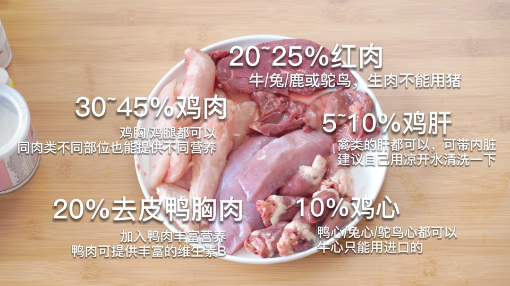
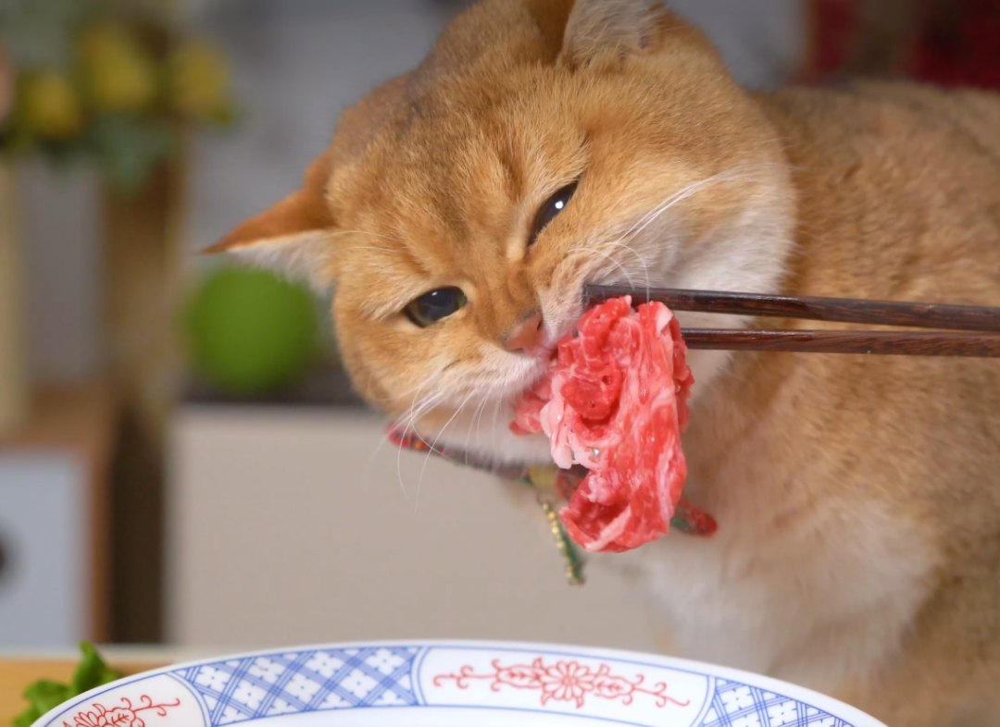
五、完整配方与用量
以下是给出的完整配方与用量，原样保留。注意：本表是“起点”而非“终点”，家用自制必须经兽医营养师复核。
| 类别 | 成分 | 占比 / 用量 | 说明 |
|---|---|---|---|
| 肉类 | 鸡肉（鸡腿/鸡胸均可） | 40% | 价格便宜、营养充足、低敏 |
| 肉类 | 鸡肝 | 10% | 提供各类微量元素 |
| 肉类 | 鸡心 | 10% | 提供各类微量元素，尤其是牛磺酸 |
| 肉类 | 牛肉 | 20% | 也可以换成兔肉、鹿肉、鸵鸟肉 |
| 肉类 | 鸭肉（去皮） | 20% | 主要用于补充维生素 B |
| 营养品 | 鸡蛋壳粉 | 每 100 g 肉加 0.8 g | 用来替代骨骼 |
| 营养品 | 诺奥碘化钾 | 每 500 g 肉加 1 片 | — |
| 营养品 | Source 锰片 | 幼猫每 6 kg 肉 1 粒；成猫每 9 kg 肉 1 粒 | — |
| 营养品 | 麦德氏维生素片 | 每 1 kg 肉 5 片 | 多吃无害 |
| 营养品 | 麦德氏牛磺酸片 | 生肉每 1 kg 加 4 片；熟肉每 1 kg 加 8 片 | 多吃无害（熟制损失更多） |
| 营养品 | 诺奥鱼油 | 每 1 kg 肉 4 颗 | 多吃无害，但严重影响适口性，多加可能造成拒食 |
- 肉类全部切碎，或者用绞肉机搅碎。
- 营养品用搅拌机研磨成粉末。
- 肉类和营养品搅拌均匀，即完成了生骨肉的制作。
- 建议每次制作较大量，然后用真空袋密封、冷冻保存。
- 建议在零下 20° 的冷冻柜中冷冻 15 天，灭活寄生虫。
- 食用前用流水解冻至常温即可。
- 观察猫咪 12 小时能吃多少，以此为标准。
- 每天早晚各喂食一次，每次提供标准的一份。
- 超过 12 小时没吃完的要清理掉。
生骨肉原本就是很好的喂养方式，十年前就有很多猫舍、专业人士在使用了。这两年流行起来，核心原因是“冷链配送技术”的普及。
8零食
一、三条铁律
- 零食热量不超过每日总热量的 10%。超过就会挤占主食营养，长期导致营养不均衡。
- 零食不是正餐。零食吃饱了不吃主食，是挑食的最主要成因。
- 零食是最好的训练工具。只在你希望的行为出现时给（比如主动进猫包、被剪指甲后），才能把零食变成沟通语言。
二、零食分类与建议
| 类型 | 评价 | 说明 |
|---|---|---|
| 冻干鸡胸/鸭肉/鱼干（单一原料） | ✅ 推荐 | 成分干净、蛋白高；注意别选含盐、含诱食剂的 |
| 猫条 / 湿粮条 | ⚠️ 限量 | 含水量高、适口性极好，但常含糖、胶体、诱食剂；每周 2–3 次 |
| 猫饼干 / 膨化零食 | ⚠️ 限量 | 碳水高、热量密度大，容易过量 |
| 化毛膏 | ⚠️ 按需 | 每周 2–3 次即可，不可天天喂。排毛优先靠猫草、充足饮水、每日梳毛 |
| 人吃的肉类（水煮无盐） | ✅ 少量 | 水煮鸡胸、三文鱼（去刺）可少量；不加任何调料 |
| 牛奶、酸奶、奶酪 | ❌ 不建议 | 多数成年猫乳糖不耐，易腹泻 |
| 火腿肠、肉干、人用零食 | ❌ 禁止 | 高盐、含亚硝酸盐、含葱蒜调味 |
| 狗用零食 | ❌ 禁止 | 配方与需求不同，部分含对猫有害成分 |
三、零食的取舍原则
零食，是区别于主食的。猫咪的主食，是猫粮、生骨肉、主食罐头……为啥？因为主食是经过了营养配比的，就相当于人类的健康餐。而零食……相当于肯德基，味道更好，但是不适合长期食用。更适合用来拉近人和猫咪的关系。
- 巅峰罐头：罐头用料扎实、品质极高，价格昂贵。它最大的缺点是不好吃，很多猫咪不爱碰。一般是给术后、孕后、配种后的猫咪准备的营养餐。
- 皇家猫奶糕罐头：罐头品质、价格都适中，优点是适口性特别好，极其适合小猫咪断奶的时候过渡。
- 麦富迪零食罐头：最大的优点是便宜，只有巅峰罐头价格的 1/16，堪称亲民的性价比之王。引导猫咪吃药片、吃猫草、吃益生菌的时候很好用。
冻干是很方便的零食。偶尔拿出来一颗，就可以吸引小猫咪过来，也可以作为日常奖励。
跟冻干相比，猫条是更好吃的小零食，但相对没有那么方便、易储存。推荐品牌：阿飞与巴弟，称其是国内目前销量第一的猫条品牌，价格也比较亲民。
零食是用来拉近和猫咪的感情的，不宜喂太多。
9营养品
一句话总结：如果吃的是合格全价猫粮，绝大多数营养品都不需要。钱应该花在主食上，而不是补剂上。
一、哪些情况确实需要补
| 成分 | 什么时候需要 | 注意事项 |
|---|---|---|
| 牛磺酸 | 自制熟食/生骨肉（未用预混粉）、部分心脏病处方辅助 | 合格商业粮已足量添加，无需额外补 |
| Omega-3（鱼油 EPA/DHA） | 关节炎、慢性肾病、皮肤病、炎症性肠病 | 需兽医定剂量；过量可影响凝血 |
| 益生菌 | 急性腹泻恢复期、换粮期、抗生素治疗后 | 选宠物专用菌株；不用于严重腹泻且有全身症状时 |
| 关节营养（葡萄糖胺/软骨素/绿唇贻贝） | 老年猫、骨关节炎、折耳猫等遗传性骨病 | 证据等级中等，属辅助，不替代镇痛治疗 |
| B 族维生素 | 食欲差、慢性病、长期厌食 | 兽医指导 |
| 钙/磷补充剂 | 仅限自制饮食配平时 | ⚠️ 绝不要给吃商业粮的猫额外补钙，会造成钙磷失衡、骨骼与肾脏损伤 |
二、明确不建议的
- “营养膏/美毛粉/多维素”当日常补：合格全价粮已配平，额外补可能过量。脂溶性维生素（A、D、E、K）过量会中毒。
- 人用保健品：剂量与辅料都不适配猫，尤其含木糖醇、精油、草药提取物的品类。
- 用来“治病”的保健品：宣称能治肾病、治肿瘤、治口炎的，一律存疑。
- 精油类“天然护理”：猫肝代谢精油能力极差，茶树、尤加利、柑橘类精油可致中毒。
三、只推荐这三种营养品
营养品相当于保健品。但是，对健康猫咪来说意义不大。跟人类不同，人类管不住自己的嘴，顿顿吃健康餐的人少，所以需要额外补充营养品、保健品。但猫咪不同，大部分猫咪主要吃猫粮等主食。而猫粮就等于是健康餐，已经把所有必须元素加入了，因此营养品的用处不大。本篇只推荐三种功能明确的营养品——益生菌、猫草、羊奶。
用来给猫咪调理肠胃。当猫咪出现换粮不适、呕吐拉稀、食欲不振等情况，可以喂一点益生菌。拌在猫粮里、泡在水里都可以喂。不过通常来说，还是拌在罐头里吃，或者温水泡开后用去头注射器注到嘴里比较方便。
用来调理肠胃，尤其是猫咪舔毛太多、肚子里积累了毛球的时候，用一点植物纤维能够促进肠胃蠕动，排出毛球。种出来之后，把叶子剪碎了混入猫粮里；如果猫咪不吃，可以用搅拌机打成泥混入罐头里。会直接吃草的猫咪是少数，如果它自己会吃，就由它自取。如果是主人喂食，建议间隔一个月以上喂一次，量不用太多，剪碎四五根猫草就够了。如果猫咪没有吐毛球的症状，猫草可以不喂。
猫咪对乳糖不耐受，所以羊奶会比牛奶更友好。当猫咪虚弱、食欲不振、营养不良的时候，可以用羊奶来救急，通常是给幼猫、术后猫咪、产后猫咪补充营养。价格也比较贵。如果给成年猫咪喂食羊奶，浓度可以根据厂商包装上的建议来配比；如果给幼猫喂食，浓度要低一点，因为幼猫不具备自主饮水的能力，浓度太高会过齁缺水。
第三部分 · 健康
这五章是整本手册的硬核部分，建议反复看。
10绝育
一、为什么要绝育
| 对象 | 主要获益 |
|---|---|
| 母猫 | 大幅降低乳腺肿瘤风险（首次发情前绝育可降低约 90% 以上，发情次数越多保护越弱）；彻底消除子宫蓄脓风险（这是致命急症）；消除发情期的嚎叫与焦躁 |
| 公猫 | 显著减少喷尿标记、离家出走、与其它猫打斗（打斗是 FIV/FeLV 传播的主要途径）；降低肛门腺与前列腺相关疾病风险 |
二、时机与术前准备
- 常见建议：公猫 6–8 月龄；母猫 6 月龄前后或首次发情结束后。体重通常要求 ≥2 kg（各家医院标准略有差异）。
- 术前检查不能省：血常规 + 生化（评估肝肾）+ 心脏听诊（必要时心脏彩超）。麻醉风险主要来自未发现的心脏病与肾功能问题，尤其英短、缅因等心肌病高发品种。
- 术前禁食 8 小时、禁水 2–4 小时（按医院要求）。
- 必问的三个问题：用的是什么麻醉（气体麻醉 + 监护更安全）？有没有专人做麻醉监护（心率、血氧、血压）？疼痛管理方案是什么？
三、术后护理（前 48 小时最关键）
| 时间 | 做什么 |
|---|---|
| 回家后 2–4 小时 | 麻醉未完全清醒时不要喂食喂水，防止呛入气管；单独放在安静、温暖、低矮的空间（不要跳上跳下） |
| 当晚 | 观察呼吸、精神状态；伊丽莎白圈/手术服必须戴好，绝不能让它舔伤口 |
| 术后 1–3 天 | 少量多次给水给食；观察排尿（公猫尤其重要，如超过 12–24 小时不排尿立即返院） |
| 术后 7–10 天 | 每天检查伤口：红肿、渗液、裂开、异味 → 立即返院；按医嘱拆线/复查 |
四、绝育的时机与术前术后
绝育对于猫咪的身心健康、延年益寿都有好处。很多人顾虑：绝育对猫咪来说，是否过于残忍？这是在用人类的视角去看猫咪，是错误的。猫跟人不一样，猫咪是独行侠动物，它们在大自然里，会抵触跟同类接触。如果没有发情期这个“紧箍咒”，那猫咪这个物种，可能就灭绝了。一到发情期，猫咪体内激素会大幅波动，食欲不振，茶饭不思，躁动难耐。这对猫咪来说无疑是一种损耗。而绝育可以取下这个“紧箍咒”，猫咪的性格也会变得稳定，激素水平也不会有剧烈波动，从而会有更好的生活品质。
如果不绝育，猫咪在 8 个月之后，可能会出现发情现象。公猫会表现为到处乱尿，母猫会整夜嚎叫，这都是为了吸引异性，也会很影响家长的养宠体验。绝育是个难度很低的小手术，一般的宠物医院都可以做好。
公猫在 200–1000 元区间，母猫在 400–1500 元区间。取决于当地的物价水平、是否做术前检查、麻醉方式、术后是否住院护理等。
满 7 月龄的小猫，就可以进行绝育了。很多猫舍都可以做完绝育，等猫咪恢复好了，再安排猫咪去新家。对家长来说会方便安全很多。
勤加检查伤口的愈合情况，如果渗出大量液体或血液，或有其他异常，需要及时联系医生。家长需要准备的是：① 伊丽莎白圈，防止猫咪舔舐伤口；② 敞口猫砂盆，方便猫咪进出，因为猫戴了伊丽莎白圈；③ 爱吃的食物，术后一两天猫食欲不佳正常，超过 3 天无食欲需要找医生咨询。术后猫咪较为脆弱，一周内避免外出、过量运动。
绝育之前，猫咪会因为周期性的发情而紧张焦躁、食欲不振、体重波动大、有攻击性。绝育之后，不会再有这种情况，整体而言，性格会变得更温和、食欲变得更好，体重更稳定。另外，由于不再分泌雄性激素，公猫发腮状况会减弱。
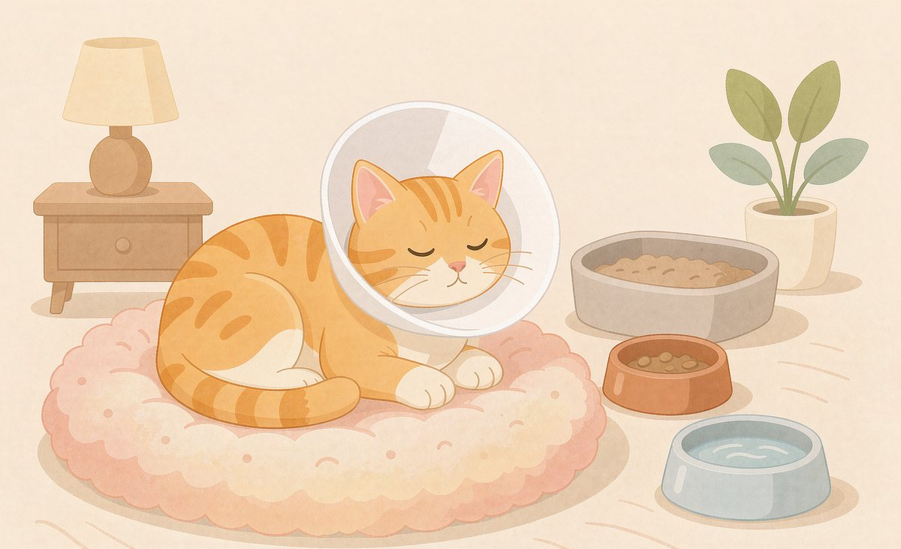
11驱虫
一、猫常见的寄生虫
| 类别 | 常见种类 | 感染途径 | 危害 |
|---|---|---|---|
| 体内 | 蛔虫、钩虫、绦虫 | 吃入虫卵/中间宿主（跳蚤、鼠）、母婴传播 | 消瘦、腹泻、呕吐，部分可传染人（尤其儿童） |
| 体内 | 球虫、贾第鞭毛虫、三毛滴虫 | 污染的水/环境 | 慢性腹泻，常被误认为“肠胃弱” |
| 体内 | 心丝虫 | 蚊子叮咬 | 猫心丝虫感染常无特效治疗，以预防为主 |
| 体外 | 跳蚤 | 环境、其它动物 | 瘙痒、贫血、是绦虫的中间宿主、过敏性皮炎 |
| 体外 | 蜱虫 | 草地、灌木 | 吸血、传播血液病原 |
| 体外 | 耳螨 | 直接接触 | 耳道黑褐色污垢、频繁甩头挠耳 |
二、频率与选药
- 体内：幼猫每月 1 次至 6 月龄；成年完全室内猫每 3 个月 1 次；有外出、吃生食、捕猎、多猫家庭——每月 1 次。
- 体外：春夏每月 1 次；完全室内可适当放宽，但家有犬外出、住低层带院、或所在地区跳蚤高发，建议全年每月。
- 粪检优先于盲目驱虫：球虫、贾第虫、滴虫需要专用药，普通广谱驱虫药无效。反复软便的猫，一定要做粪检而不是反复喂驱虫药。
- 常用成分：体内用吡喹酮/米尔贝肟/芬苯达唑等复方；体外常用塞拉菌素、氟雷拉纳、非泼罗尼等。具体请由兽医按体重开药。
三、驱虫频率与选药
猫咪驱虫，分为内驱和外驱。内驱针对的是体内寄生虫，例如蛔虫、线虫、球虫、钩虫、滴虫、心丝虫等；外驱针对的是体外寄生虫，例如跳蚤、虱子、耳痒螨、蠕形螨、疥螨等。体内出现寄生虫的主要原因，是吃生肉；体外出现寄生虫的主要原因，是接触其他野生动物。
内驱虫一般需要吃药片，外驱虫则是把药液滴在猫咪身上。家长可以自己买药完成驱虫，适合驱虫频率高的家长，又便宜又方便；也可以去宠物医院请医护人员驱虫，适合低频驱虫的家长。
- 内驱：主要看猫咪吃生肉、罐头的频次。如果猫咪只吃猫粮，从来不吃生肉、罐头，则体内寄生虫出现的概率较低，可以 1–2 年驱虫一次；如果每天都吃生骨肉，建议每三个月驱虫一次。
- 外驱：主要看猫咪生活环境是否干净、是否外出、是否接触其他宠物。如果家中猫咪仅有一只、养在家里从不出门，那每隔 1–2 年外驱虫一次；如果经常外出、频繁接触其他动物，建议每三个月外驱虫一次。
内驱推荐品牌：海乐妙；外驱推荐品牌：大宠爱。在各个电商平台均有销售。
由于猫咪的体质不同，有的猫咪在吃了驱虫药之后，可能会出现轻微的呕吐、腹泻、精神不足、食欲不振的症状。这是正常的现象，一般持续 1–2 天就会有改善。主人要多多观察猫咪的状态，如果持续时间过长或症状比较严重，应及时治疗。
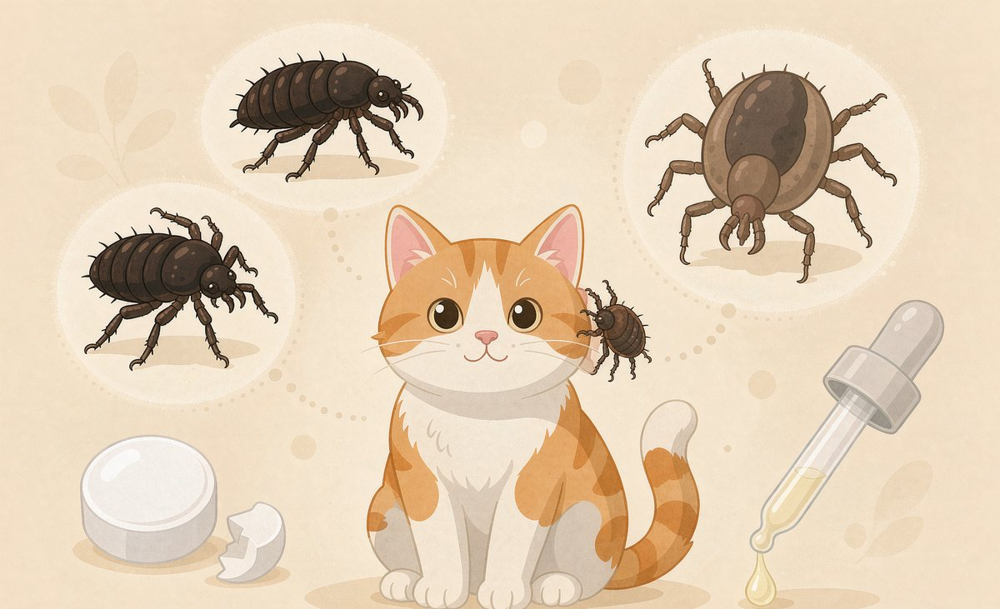
12疫苗
一、核心疫苗 vs 非核心疫苗
| 类别 | 疫苗 | 说明 |
|---|---|---|
| 核心（建议所有猫） | 猫三联：猫瘟（FPV）、猫疱疹病毒 I 型（FHV-1）、猫杯状病毒（FCV） | 这是猫最重要的三针，防的是致死率高、传染性强的病 |
| 核心（法定） | 狂犬疫苗 | 中国境内属强制免疫，办证、出行、出境必需 |
| 非核心（按生活方式） | 猫白血病（FeLV） | 多猫、散养、常外出的猫建议接种；接种前需检测 FeLV/FIV |
| 非核心 | 猫传染性腹膜炎（FIP） | 滴鼻疫苗效果争议大，多数指南不常规推荐 |
| 非核心 | 犬猫通用：支气管败血波氏杆菌（猫舍咳） | 高密度环境（猫舍、寄养）可考虑 |
二、WSAVA 免疫程序（中文版）
| 阶段 | 时间 | 做什么 |
|---|---|---|
| 首针 | 6–8 周龄 | 猫三联第 1 针 |
| 基础免疫 | 每隔 2–4 周 1 针，直到 ≥16 周龄 | 通常共 3 针（个别方案 2 针） |
| 狂犬 | 12 周龄后 | 第 1 针 |
| 幼年补强 | 26–52 周龄（约 6–12 月龄） | 猫三联 + 狂犬各补 1 针 |
| 成年加强 | 之后每 1–3 年 | 可先做抗体检测（titer）决定是否需要打 |
三、接种前后的 6 条规矩
- 只接种健康猫：发热、腹泻、刚到家不足 7 天、刚驱虫不足 3 天 → 推迟。
- 接种前先驱虫，寄生虫感染会影响免疫应答。
- 接种后留院观察 30 分钟再走。面部肿胀、呕吐、呼吸困难、瘫软 = 过敏，立即处理。
- 接种后 7 天内不洗澡、不外出、不换粮、不做手术。
- 免疫期间不做绝育，两者至少间隔 7 天以上。
- 记录好批号与日期，写进免疫本。下次补强时医生需要。
四、疫苗程序与接种前后
猫咪是生命力顽强的动物，但仍然有可能生病。为了猫咪的健康，需要接种如下疫苗：① 猫三联疫苗（必须打）；② 狂犬疫苗（少数情况下打）。
国内大部分宠物医院推荐使用的是美国硕腾公司旗下的疫苗品牌——妙三多，主要应对猫咪的三种常见传染病。按照硕腾官方建议：一共要注射三针，第一针最好在 8 周龄后，剩下的每针间隔 3–4 周接种。此后，每隔一年接种一针。橘南猫舍在猫咪送往新家之前，已经接种了全部的三针疫苗。
接种疫苗可能会造成猫咪的应激和不适反应。相比官方建议的每年接种一针疫苗，我们更建议定期做一次抗体检测。如果抗体浓度达标，则不用打疫苗。实际上，大部分猫咪在幼年期三针疫苗结束后，抗体会终生达标。每年一针的官方建议，很大程度是出于商业考量。
猫咪打狂犬疫苗的争议很大。多数猫舍都不建议给猫咪打狂犬疫苗，橘南猫舍也同样如此。因为对猫咪来说，狂犬疫苗弊大于利。狂犬病毒要通过血液传播，也就是猫咪被别的野生动物弄伤流血，才有可能感染。而家养猫咪几乎不出门，也就没有被传染上的概率。
若是自己家养不出门的猫咪，就不需要。因为猫咪若携带狂犬病毒，15 天内会死亡。家长只需要确认，猫咪在最近 15 天内未与其它动物打架，就可以排除狂犬病毒的风险。若是被野外的猫咪挠伤，则需要打疫苗。
去医院打疫苗，通常一针在 100 元左右。如果人类被野猫挠伤，打疫苗就不够，因为疫苗起效慢，需要立即打免疫球蛋白，这个价格就很贵，通常会在 1000 元以上（跟体重相关）。
并非如此。猫三联疫苗有一定的防护效果，但不是 100%。但疫苗还有一个效果，就是能大幅降低重症率。也就是说，如果没有打疫苗，有的病对猫咪来说是致死率很高的；但打了疫苗之后，就算得了病，致死率也会降低很多。
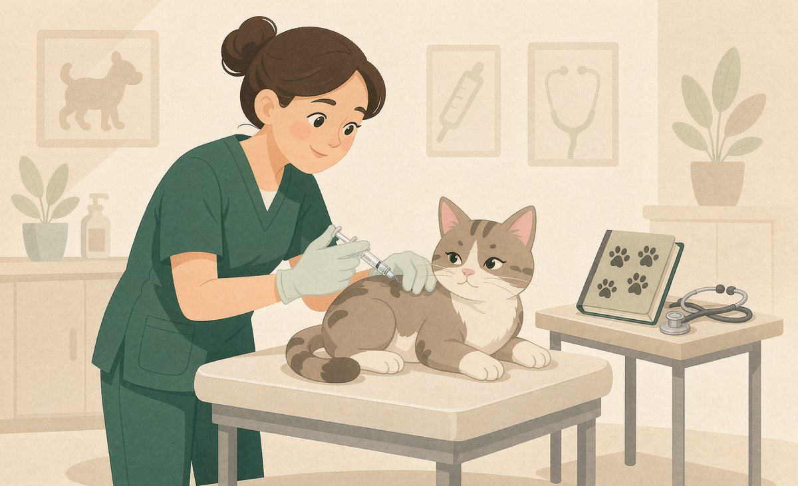
13牙结石
牙结石是猫最被忽视、也最容易造成长期伤害的问题。猫的牙病不会自己好，只会越来越坏。3 岁前约 70% 的猫已出现不同程度的牙周问题（AVMA / 美国兽医牙科学会数据）。
一、发展过程
食物残渣 → 牙菌斑（软，可刷掉，24–48 小时内矿化）→ 牙结石（硬，必须专业器械去除）→ 牙龈炎（牙龈红肿出血）→ 牙周袋（牙龈与牙根分离，细菌深入）→ 牙槽骨吸收、牙齿脱落。细菌还会持续入血，加重心脏、肾脏、肝脏负担。
二、怎么发现问题
| 信号 | 含义 |
|---|---|
| 口臭（明显异味） | 几乎一定存在牙周问题，不是“正常猫味” |
| 牙面黄褐色附着物 | 牙结石，尤其后臼齿外侧 |
| 牙龈发红、一碰出血 | 牙龈炎 |
| 吃干粮时甩头、掉落、只用一侧咀嚼 | 疼痛信号，可能有牙吸收病变或严重牙周炎 |
| 流口水、食欲下降、消瘦 | 晚期表现，往往已有多颗牙受累 |
| 家庭手段 | 实际效果 |
|---|---|
| 刷牙（宠物牙膏 + 指套/软毛刷） | ✅✅✅ 唯一真正有效。每天 1 次最佳，每周 2–3 次为最低标准 |
| 洁牙零食/咬胶 | ✅ 辅助，对已有结石基本无效 |
| 漱口水/饮水添加剂 | ⚠️ 极有限，部分含抑菌成分，不能替代刷牙 |
| 洁牙粮（特殊纤维结构） | ✅ 轻微，仅作用于咀嚼接触面 |
| 不用麻醉的“洁牙”（手工刮） | ❌ 有害。只磨掉可见牙石，伤牙釉质，且牙龈下的病灶完全没处理 |
三、专业洁牙（洗牙）该怎么做
- 必须全身麻醉。猫不会配合，麻醉是安全与效果的前提。术前需血检 + 心脏评估。
- 必须拍全口牙片。约一半的牙科病变（如牙吸收病变、根尖脓肿）藏在牙龈下，肉眼和探针都会漏。
- 超声洁治 + 抛光：抛光这一步不能省，否则粗糙牙面很快重新结石。
- 拔除无法保留的牙。很多人怕“拔牙”，但一颗坏牙带来的持续疼痛与感染，远比拔掉更伤害猫。猫拔牙后多数吃得更香。
- 术后回访与家庭维护：洗完不刷，1–2 年内结石就会回来。
四、关于“到底要不要刷牙”
这一篇是争议最大、也最值得逐字读的一篇。核心论点是“刷牙违反猫性、做不到就尊重天性”，本手册保留原话，但在对照表里给出反面意见。请自己读完两方再决定。
这是家养猫咪长期不使用牙齿的代价。家养猫咪，几乎就是吃猫粮、罐头、猫条这些东西。猫粮看起来是硬的，其实猫咪不咀嚼，直接吞咽。所以说，家养猫咪，几乎每一个，在 2–3 岁去做体检，都会发现有牙结石。很多医院都会给你推荐“洗牙”“刷牙”的套餐服务，也会叮嘱你以后要经常给小猫刷牙。但实际上，这个叮嘱意义有限。等你回家，你会发现，给猫咪刷牙非常违反猫性，几乎没有猫咪会配合。如果说剪指甲的难度是 1，那刷牙难度就是 100。
其实可以不办。我这句话说出来一定会有很多爱猫的家长觉得不对——生病了，怎么可以不处理呢？但现实情况就是：绝大多数猫咪，不刷牙，也能带着牙结石终老。2–3 岁体检发现牙结石，到了十三四岁，可能还是那个程度。只要没有：牙龈红肿出血、流口水、明显口臭加重、进食困难、牙龈松动——大多数牙结石，都不会发展成严重的牙周炎。不用听到“牙结石”就大惊失色。
牙结石本身不是病，但如果发展出了炎症，变成了口炎、牙龈炎、牙周炎，那就需要治疗了。其中最严重的，需要全口拔牙。不过，失去牙齿的猫咪也不影响生活，因为家养猫咪的牙齿是用不上的，除了咬咬主人。猫粮、罐头、猫条这些都能正常吃，完全不影响它进食。关键在于是否长期处在炎症和疼痛中——如果发现猫咪牙龈严重萎缩、牙齿松动、口腔炎症，就要及时就医。
唯一能够逃脱魔咒、让猫咪避开牙结石的方法，就是坚持每天刷牙。我知道，几乎所有的科普号、医院都只会告诉你这个方案。它确实是更有效、更科学、更健康的一种方案。但我必须要说，这个会占用家长比较多的时间，而且很多小猫咪都不会配合，对猫咪和主人不太友好。
我一直觉得现在有些科普号和医生，简直是用圣人标准来要求家长。说什么不刷牙就是你不够负责、你偷懒、不配养猫。但真的养了猫咪的人就知道这不对——有一些温顺的小猫你可以随便刷牙，还有一些猫咪连剪指甲家长都做不到，更别提难度 max、百倍挑战的刷牙了。如果是猫咪非常不配合，那就尊重天性，只有意识地提供一些大块的食物让它啃咬。做不到刷牙，就不用苛求自己，刷牙本就是在违反猫咪的天性。尤其是猫咪反抗剧烈的时候，更不要强行刷牙——有一些猫咪甚至会因为刷牙而出现应激，吓出尿闭、心脏病、传腹……这些每一个都是致死病，远远比牙结石危险得多。
所有洁牙粉效果都很有限。说个冷知识：洁牙粉的核心功效是降低口臭，从而让主人以为猫咪牙结石问题在改善。实际上，它对已经产生的牙结石没有用。即使是最好的洁牙粉，它能起的作用也只是降低“新牙结石”产生的速度。真想有用，首先是洗牙，其次是刷牙，最后是磨牙。
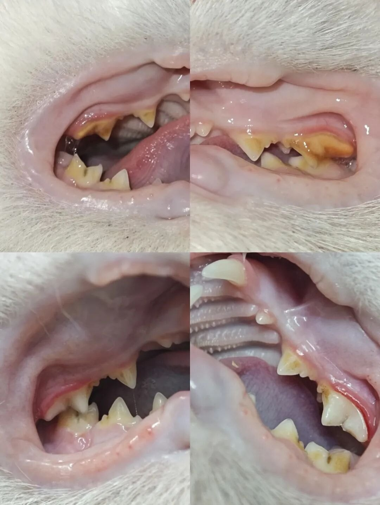
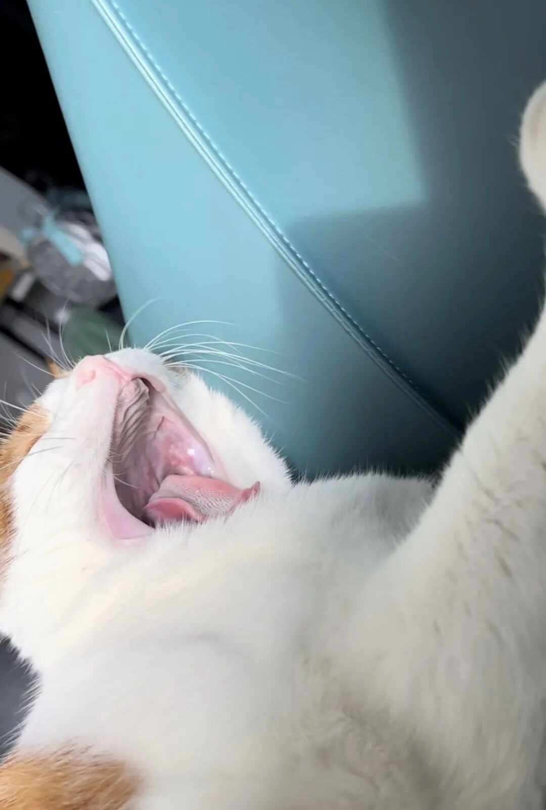
14呕吐、拉稀、挠伤
一、呕吐：先分清“要不要去医院”
| 情况 | 常见原因 | 怎么办 |
|---|---|---|
| 一周偶发 1 次，吐完精神食欲正常 | 毛球、吃太快、轻微胃刺激 | 观察；增加梳毛与饮水，可少量猫草；不天天喂化毛膏 |
| 吐未消化的食物，随即又要吃 | 吃太快/吃太多 | 少量多餐、用慢食碗、抬高食盆 |
| 吐黄色泡沫（空腹吐） | 空腹时间过长、胃酸刺激 | 睡前加一餐，缩短空腹时间 |
| 一天内多次呕吐 | 胃肠炎、胰腺炎、异物、中毒、寄生虫 | 去医院 |
| 呕吐物带血/咖啡渣样 | 消化道溃疡、异物划伤、凝血异常 | 立即急诊 |
| 呕吐 + 精神沉郁 + 拒食 + 腹部疼痛/膨大 | 异物梗阻、胰腺炎、子宫蓄脓 | 立即急诊 |
二、拉稀：从大便形态和频率判断
| 表现 | 常见原因 | 处置 |
|---|---|---|
| 软便但成形，精神食欲好 | 换粮、零食过量、应激 | 换回旧粮、停零食、加益生菌、观察 24–48h |
| 水样便，1–2 次，精神尚可 | 急性胃肠炎、吃错东西 | 禁食 6–12 小时（不禁水），之后少量易消化食物；无改善即就医 |
| 水样便，多次，精神差/呕吐 | 寄生虫、感染性肠炎、胰腺炎 | 就医：查粪检、血常规、必要时拍片/超声 |
| 便中带血（鲜红） | 结肠炎、寄生虫、异物 | 就医 |
| 黑便（柏油样） | 上消化道出血 | 立即急诊 |
| 果冻状黏液便 | 结肠炎、寄生虫 | 就医 + 粪检 |
三、挠伤（猫抓伤）：人也要处理
- 立即冲洗：用流动清水 + 皂液冲洗伤口 至少 15 分钟，这是最关键的一步。再用碘伏消毒。
- 不要包扎（除非出血不止），保持伤口开放。
- 就医指征：伤口深、出血多、位于手部/面部/关节、免疫功能低下、或出现红肿热痛加重、发热、淋巴结肿大。
- 关于“猫抓病”（巴尔通体）：被猫抓咬后 1–3 周出现伤口附近淋巴结肿大、低热、乏力，需就医并说明有猫抓史（抗生素治疗有效）。
- 关于狂犬：如猫未接种狂犬疫苗、或为流浪猫/来源不明，必须去疾控中心/犬伤门诊评估，不要自己判断。狂犬病一旦发病致死率接近 100%。
四、眼睛流泪 / 分泌物：先分清是“结膜炎”还是“鼻支”
猫的眼睛问题，判断关键只有一句话：是“只有眼睛”，还是“眼睛 + 鼻子”。前者多为局部问题；后者高度提示猫疱疹病毒（FHV-1）引起的“鼻支”，两者处理方式完全不同。
| 表现 | 更可能是 | 怎么办 |
|---|---|---|
| 单/双眼流泪、清水样、无脓，精神食欲正常 | 粉尘、过敏、轻度结膜炎 | 先观察 24 小时；换低粉尘猫砂、停用香薰/精油/空气清新剂；可用生理盐水或宠物洗眼液冲掉泪水 |
| 分泌物黄绿色脓性、眼睑红肿、眯眼怕光 | 细菌性结膜炎、角膜损伤 | 就医。先做荧光素染色排除角膜溃疡，再决定用药 |
| 眼睛 + 鼻子同时大量脓性分泌物、打喷嚏、鼻塞、食欲下降 | 猫疱疹病毒（鼻支）/杯状病毒/衣原体 | 尽快就医。幼猫、老年猫可迅速恶化，需抗病毒 + 支持治疗 |
| 角膜发白混浊、疼痛、流泪不止 | 角膜溃疡、葡萄膜炎 | 立即就医，不要自行滴任何眼药水 |
若确诊是单纯结膜炎：兽医常开抗生素类滴眼液（如硫酸新霉素），一般每 3–4 小时滴一次，3–4 天明显好转、一周左右治愈；若一周未愈或反复发作，必须复查，不要一直滴下去。
居家能做的三件事：① 用生理盐水从内眼角向外擦掉分泌物，每只眼用不同棉片；② 降低环境刺激（低粉尘猫砂、停香薰）；③ 幼猫或未完成疫苗的猫出现眼鼻症状，优先怀疑鼻支并就医。
五、猫的“忍痛”信号（容易被忽略）
躲藏、躲猫砂盆弓背、腹部贴地面部紧绷、胡须前伸耳朵向外下方压（“疼痛脸”）不愿跳上跳下长期蜷缩、不梳毛、毛打结进食姿势改变、掉落食物六、呕吐、拉稀、挠伤与眼部问题要点
猫咪偶尔吐一次很正常。跟人类不同，猫咪是会“主动呕吐”来排出体内异物的，就像是挖鼻孔一样。主动呕吐完，猫咪会神清气爽，接下来依然活蹦乱跳。检测精神好不好，可以用逗猫棒——如果依然活蹦乱跳，就没有问题。最常见的呕吐原因，是肚子里毛球积累过多，通常每隔几个月，猫咪就会来上这么一次呕吐。另外，也可能是吃得太快、吃完就立即玩游戏，也会导致呕吐回流。所以，在猫咪发生呕吐后，最重要的是观察猫咪的精神状态。如果伴随着状态萎靡不振，那就需要及时就医——说明不是猫咪主动呕吐，而是被动的，那可能是某种疾病/食物中毒的征兆。
大概率是吃了新的食物，比如换了猫粮、吃了生骨肉什么的。如果是换猫粮，注意要按照科学换粮法逐步增加新猫粮的占比，而不是一次性换成新猫粮。如果是吃了生骨肉、零食等特殊食物导致的，可以考虑减少喂食这类食物。同理，出现拉稀，大多数时候也是正常拉稀，只有 1–2 次的话，家长发现的时候不用太吃惊。但如果连续拉稀，并伴随着状态萎靡不振，那就需要及时就医——有几种疾病例如猫瘟，是伴随着拉稀出现的。
若是自己家养不出门的猫咪，就不需要。因为猫咪若携带狂犬病毒，15 天内会死亡。家长只需要确认，猫咪在最近 15 天内未与其它动物打架，就可以排除狂犬病毒的风险。若是被野外的猫咪挠伤，则需要打疫苗。
通常滴眼药水就能治疗好。一般需要 3–4 小时滴眼一次，通常 3–4 天就会有明显好转，一周左右能治愈。如果未能治愈，请及时就医。尤其是眼睛、鼻子同时出现大量脓状分泌物时，很有可能是更严重的鼻支。
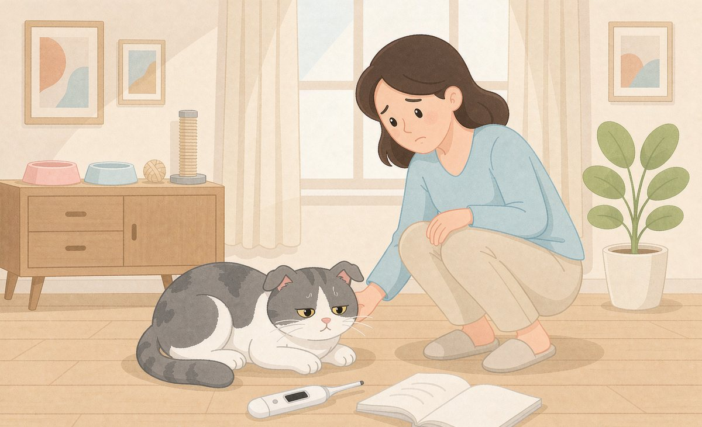
第四部分 · 购物清单
把预算花在“必需的”和“每天用的”上面，其余都可以等。
15铲屎官购物清单
一、接猫前必买（缺一不可）
| 类别 | 物品 | 选购要点 | 预算参考 |
|---|---|---|---|
| 如厕 | 猫砂盆 | 敞口或大号；长 60cm+ 更舒服；数量 = 猫数 + 1 | 60–300 元/个 |
| 如厕 | 猫砂 | 结团性好、低粉尘；优先无香（猫多不喜欢香精） | 20–60 元/月 |
| 如厕 | 猫砂铲、除味垃圾袋 | 不锈钢铲更耐用 | 30–60 元 |
| 进食 | 猫粮碗、水碗 | 宽口浅碟防“胡须疲劳”；陶瓷或不锈钢 | 50–200 元 |
| 进食 | 饮水机（可选但推荐） | 流动水显著提升饮水量；注意每周清洗 | 100–300 元 |
| 居住 | 航空箱 | 硬质、顶开或前开；一次买够成年体型大小，别买“幼猫款” | 150–500 元 |
| 居住 | 猫窝/躲藏盒 | 至少 2 个；纸箱也很好用；准备 1 个高处位置 | 50–300 元 |
| 安全 | 金刚网纱窗/防护网 | 必买。封窗是防坠楼的唯一有效手段 | 按窗户面积算 |
| 出行 | 伊丽莎白圈 / 手术服 | 绝育前就准备好 | 30–100 元 |
| 健康 | 宠物专用牙膏 + 指套/牙刷 | 从到家就开始适应，越早越容易 | 50–120 元 |
| 健康 | 电子体温计 | 宠物专用（探头更细） | 30–80 元 |
| 健康 | 指甲剪、宠物梳 | 短毛猫用橡胶梳，长毛猫用针梳 + 排梳 | 50–150 元 |
二、可以缓一缓的
- 自动猫砂盆、自动喂食器：好用但故障代价高（卡住不喂 = 猫脂肪肝风险）。出差多再考虑。
- 猫爬架：可以先买小的，看猫的偏好（喜欢磨爪？喜欢高台？）再升级。
- 玩具：逗猫棒（带替换头）+ 几个球 + 纸袋，足够。不要一次买太多。
- 衣服：猫基本不需要穿衣服，且影响活动与理毛。
三、首年费用估算
| 项目 | 区间 |
|---|---|
| 用品一次性投入 | 600–2000 元 |
| 首年疫苗（3 针三联 + 狂犬） | 400–900 元 |
| 首年体检 + 粪检 + 传染病快检 | 300–800 元 |
| 绝育（含术前检查） | 500–2500 元 |
| 驱虫（全年） | 400–1000 元 |
| 主食 + 猫砂（全年） | 3600–9600 元 |
| 首年合计（不含突发医疗） | 约 6000–17000 元 |
四、七大类与八件必需品
七大类清单：吃喝、拉撒、出行、卫生、居住、玩乐。把清单拆成「基础篇 / 进阶篇」两篇——这个分法本身就是本篇最有价值的建议：新手最常见的错误不是买少了，而是买一堆猫根本用不上的东西。
成为一名铲屎官，需要购置哪些东西呢？这里有一份清单。
- 吃喝：主食、零食、营养品、水粮碗。
- 拉撒：猫厕所、猫砂。
- 出行：航空箱、猫包、牵引绳。
- 卫生：猫毛梳、指甲剪、免洗手套、消毒液、粘毛器。
- 居住：猫窝、自由出入门。
- 玩乐：玩具、猫爬架、猫抓板。
看起来真是太多了，所以我决定分两篇来写。一个基础篇、一个进阶篇。本篇是基础篇，写的都是必需品，适合新手铲屎官。
- 猫粮：橘南有自己的猫粮品牌，在淘宝店有售。此外各大电商平台上也有类目繁多的猫粮，这里就不一一推荐了。选一款你觉得最好、价格又能接受的猫粮，这个是养猫的重中之重。
- 粮碗、水碗（推荐版）：人类的碗碟就可以给猫咪当水碗、粮碗。不过一定要注意，要宽口的，不然会碰到猫咪的胡须，造成猫咪的不适。
- 粮碗、水碗（懒人版）：大容量水粮碗，加一次水和粮，足够用 10 天。当你出差、或者过年回家，就得用上这个了。
- 粮碗、水碗（智能版）：价格会贵一点，但拥有一些有趣的功能。比如可以控制每天的出粮量，对于要减肥的猫咪来说是神器；还有摄像头，可以记录猫咪吃饭的可爱画面。
- 猫厕所（极简版）：找个大号纸壳箱就行。
- 猫厕所（美观版）：外观设计很漂亮，放在家里哪个角落都很和谐；功能性也很好，封闭防臭、防带出。
- 猫厕所（性价比版）：便宜耐用。缺点就是容易带出猫砂、隔臭效果也不如封闭式的好。
- 猫砂：推荐购买豆腐砂，不臭、粉尘少、不容易带出。另外就是膨润土砂，一个月能便宜个二十块钱，但味道会比较大，粉尘也较多。
- 指甲剪：这是必需品。猫咪前爪每周都要修剪，后爪 2–3 周修剪一次。
- 猫毛梳：非必需，但推荐购买。每周梳一次，能少掉 80% 猫毛。
- 猫包：航空箱和猫包，这俩至少要准备一个。偶尔会需要带猫咪去宠物店洗澡、去医院打疫苗看病。
- 逗猫棒（原文写作「购猫棒」，应为笔误）：必需品。你想找到猫咪、吸引猫咪、和猫咪建立感情，都需要用到这个。
如果你即将迎接一只猫咪到家，请至少准备好以下用品：
- 猫粮、水粮碗、猫厕所、猫砂、逗猫棒、指甲剪、猫包、梳毛器（共 8 件）。
如果你还想购买更多用品、获得更好的养猫体验，请移步《养猫进阶好物》。如果您是橘南家长，可以看《橘南家长购物清单》，有不少用品我们已经在新家礼包里送了，无需重复购买。
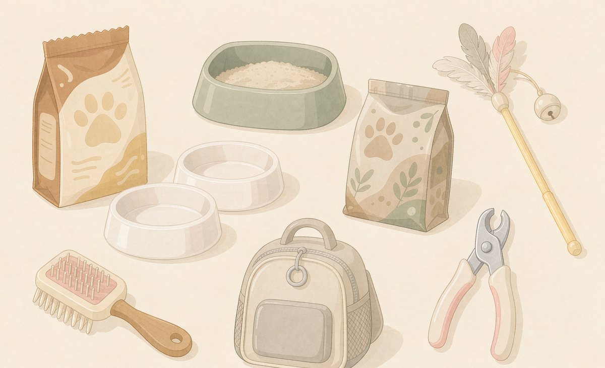
16猫舍家长专属清单
这一章讲的是「猫舍家长购物清单」。新到家的猫，最重要的不是买什么，而是不买什么。
一、到家过渡期（前 30 天）必须准备好的
同款猫粮（至少 2 周量）猫砂（同款，避免换砂应激）应激缓解香薰/信息素喷雾备用航空箱（常驻客厅当窝）体重秤（婴儿秤或厨房秤）记录本/手机备忘录二、从猫舍/前主人那里必须拿到的东西
- 免疫本：疫苗批号、日期、驱虫记录。缺了它，后面的疫苗程序要重来。
- 血统/芯片信息（如有）：芯片号、登记证书。出境、办证、找回都要用。
- 当前主食与喂食习惯：品牌、口味、每日次数与分量。换粮必须 7 日过渡。
- 用过的猫砂种类与砂盆类型：换砂和换盆是应激与乱尿的常见诱因。
- 父母的常见病史：尤其英短（心肌病 HCM）、缅因（HCM）、折耳（骨软骨发育不良）、布偶（HCM、多囊肾）。这决定了你要重点监测什么。
- 猫舍的联系方式：正规猫舍会有健康保障期约定与售后答疑。
三、到家 30 天日程
| 时间 | 重点 |
|---|---|
| 第 1–3 天 | 限缩环境、不打扰、只观察吃喝拉撒 |
| 第 4–7 天 | 首次体检（体检 + 粪检 + 猫瘟/FeLV/FIV 快检）、按医嘱驱虫 |
| 第 8–14 天 | 逐步开放房间；确认无异常后按免疫程序补疫苗 |
| 第 15–30 天 | 建立玩耍—进食—睡眠节律；训练进猫包、接受抚摸与梳毛；称重记录 |
四、只推荐 4 件
这一篇只推荐 4 件（猫粮、pidan 雪屋猫厕所、豆腐砂、宽口碟），前提是猫舍已经送了新家礼包。读的时候一定要带上这个前提，否则会把「最低配置」误当成通用清单。
推荐橘南家猫粮。这是小猫从小吃到大的“娘家粮”，由我亲自把关。论影响力，跟知名品牌没法比。但作为资深繁育人，我们算是最苛刻的甲方，追求的品质在任何工厂里都属于最顶配的一档。在淘宝店、视频号小店里均可购买。
推荐买 pidan 雪屋。雪屋很漂亮，放家里可以当个小家具。而且除臭、防带出做得超级棒，它还拿了所有能拿的设计类大奖，是业内公认的最好猫厕所。
推荐购买豆腐砂，不臭、粉尘少、不容易带出。一袋大概能用半个月，每隔 1–2 个月要彻底清理一次。
推荐用人类的碟子，宽口的。对猫咪来说，最好的水碗、粮碗，就是“不碰到胡须”的宽口碟。粮可以一次放好几天的，吃完就加。水 2–3 天一换。
就这些，没了。像指甲剪啊、逗猫棒、免洗手套、湿巾之类的，我们新家礼包都会送。猫咪随行的航空箱，家长也可以继续使用。
家长甚至只要有一个猫厕所、一袋猫砂就可以迎接猫咪的到来了。毕竟猫粮我们会送一袋，您自己再从厨房里掏出两个碟当水碗、粮碗也没问题。
17养猫进阶好物
一、真正提升生活质量的
| 物品 | 为什么值得 | 注意 |
|---|---|---|
| 流动饮水机 | 显著提升饮水量，直接降低泌尿与肾脏风险 | 每周拆洗泵体，否则成细菌温床 |
| 竖高猫抓板/猫爬架 | 满足抓挠与高处需求，是减少沙发受害最有效的手段 | 高度要能让猫完全伸展 |
| 慢食碗 | 解决吃太快呕吐 | 初期猫可能不习惯，耐心引导 |
| 体重秤 | 体重是最灵敏的健康指标之一 | 每周固定时间称，记录趋势 |
| 监控摄像头 | 出差时观察进食、饮水、活动量 | 注意隐私与网络 |
| 信息素喷雾 | 就诊、搬家、多猫引入时降应激 | 不是药物，严重应激仍需兽医 |
| 宠物牙刷套装 | 预防牙周病性价比最高的一件物品 | 坚持比品牌重要 |
| 医用级空气净化器 | 有过敏体质的家庭，减少猫毛与皮屑暴露 | 不是“猫毛过敏”的根治办法 |
二、看着很香、其实鸡肋的
- 昂贵猫服装：猫不需要，穿着影响理毛与活动。
- 各种“网红零食大礼包”：成分杂乱、糖与诱食剂多，不如单一原料冻干。
- “不用麻醉洁牙”工具：见第 13 章，弊大于利。
- 大而复杂的猫爬架（猫舍风）：先确认猫是否喜欢，很多猫只爱纸箱。
- 智能猫砂盆（早期型号）：卡猫、漏砂、故障率高。若买，务必选有安全认证与断电保护的新款，且猫越小越要谨慎。
三、非必需但能提升体验的好物
这一篇商品最多，也最能看出取舍观：它明确不推荐智能猫砂盆，理由是「看不到粪便」——这与本手册第 14 章把粪便列为最重要健康指标的观点完全一致。
介绍的商品不是必需的，但能提升养猫的生活品质。如果您马上要迎来人生中第一只小猫咪，着急想准备必需品，请移步《铲屎官购物清单》（那是一份极简的养猫清单）。这篇商品数量更多，但非必需品。
食物是养猫的头号工作。关于食物，有四篇文章供参阅：《猫咪喂养之：猫粮》《猫咪喂养之：零食》《猫咪喂养之：生骨肉》《猫咪喂养之：营养品》。您可以做好功课之后，选择所需要的商品。
- 慢食碗：有的猫咪吃东西特别快，会导致反流和呕吐。这种情况下，可以减少单次喂食量，也可以抬高饭碗，还可以买这种慢食碗。
- 流动饮水机：猫咪普遍不爱喝水，这对于它们老年后肾脏很不友好。所以出现了这种流动饮水器，因为流水看起来更新鲜，能让猫咪多喝一点。我们实测有 20% 的猫咪会因此多喝水，但也只有 20%。
- 自动喂食器：猫咪多数不会暴饮暴食，可以敞开不限量供应猫粮。但对于有肥胖症状的猫咪，那智能喂食器就有用武之地了。
- 智能猫砂盆（不推荐）：好处是①不用自己铲屎；②可以检测猫咪的排便数量、次数、体重。但更推荐传统猫砂盆，原因：①单只猫咪铲屎工作量并不大，且能方便观察猫咪是否软便拉稀，这是重要的健康指标；②传统猫砂盆例如雪屋，设计上更美观、没电线、可摆放位置更多。
- 免洗手套：如果猫咪脏兮兮、但又很害怕洗澡，可以用免洗手套擦拭干净。使用方式很简单，戴上手套，然后一顿 rua 猫就好啦。
- 宠物湿巾：猫咪的嗅觉比人类更敏感，有的味道人类闻起来很正常，但对猫咪来说刺鼻。
- 粘毛器：衣服上、被单上沾了猫毛之后，可以用它粘除猫毛。
- 剃毛器：人用的理发器，对猫咪来说就挺好用的。剃毛有两种场景：① 猫咪有皮肤病，需要剃毛治疗；② 春夏之交猫咪掉毛高峰期。不建议常年剃毛，尤其是天气冷的时候。
- 除螨仪：一般是给床单使用的。
- 消毒液：推荐宠物专用的消毒液。
- 洗地机：养不养猫咪，这个工具都挺好用的。
- 航空箱：日常出行推荐用双肩猫包，背在背上比较轻松。但如果要远距离托运，必须要用上航空箱——因为托运过程中宠物都是一个叠着一个的，猫包没有支撑性，用不了。
- 牵引绳：不太建议猫咪出门，猫咪更适合待在室内，出门有应激风险。但如果有出门拍照片的需求，一定要用牵引绳，否则一眨眼跑进马路就很危险了。
- 猫薄荷：对猫咪有强烈的吸引力，推荐。
- 痒痒挠：贴在墙角即可，猫咪会享受它的。
- 猫抓板：能大大提升猫咪的体验，让猫咪磨爪子。
- 猫窝：狗狗会乖乖地去狗窝里睡觉，猫咪不会，它有自己喜欢的位置。所以猫窝也需要放在猫咪喜欢的地方，通常是高处、晒太阳处、以及主人身旁。推荐四种：① 猫抓板型（便宜实用还能磨爪）；② 美观型（猫咪喜欢偏硬一点的床，因为它们睡觉属于“浅睡眠”，随时准备跳起来）；③ 主人衣服（很多猫喜欢睡在有主人味道的旧衣服上）；④ DIY 猫毛垫子（把每次梳下的毛、剃下的毛收集起来填充进枕套，很有纪念价值）。
- 猫爬架（猫树）：建议买一个。因为可以攀爬、又很高，是猫咪最喜欢的去处。它们就喜欢待在高高的地方，能掌握全局，有安全感。只考虑功能性的话，100–300 块钱的猫树就可以。
- 猫笼：猫咪建议散养，但笼子也有其用处，尤其多宠物家庭。木质笼子比较美观，铁笼子比较好做卫生。便宜的铁笼子 500–1000 元，定制的木笼子通常会上 2000 元。
- 猫咪门洞：很多铲屎官都需要关着卧室门睡觉，但架不住猫咪总喜欢进出房间，那这个自由出入门就很重要了。
第五部分 · 常见提问
八个具体到“今天就能用”的问题。
18怎么给猫咪剪指甲？
一、多久剪一次
每 1–2 周一次。室内猫缺磨爪机会，指甲过长会弯曲长进肉垫（嵌甲），造成疼痛与感染。幼猫从 2–3 月龄开始适应，越早越好。
二、先认清“血线”
猫指甲中空透明，里面有一条粉红色的血管和神经，叫血线（quick）。剪到血线会流血且剧痛。深色指甲看不清时，每次都只剪最尖端 1–2 毫米，宁少勿多。
三、五步操作法
- 选时机：猫吃饱、困倦、放松时。刚玩累最佳。绝不要在它反抗时硬来。
- 建立联想：先只按压爪垫让指甲伸出，立刻给零食，重复几天。
- 固定姿势：让猫坐在你腿上或侧躺，背对你，用前臂轻贴身体。不要仰面翻抱。也可以两人配合，一人喂化毛膏分散注意力。
- 逐个剪：拇指在上、食指在下轻压爪垫，指甲伸出，45° 斜剪尖端。一次只剪 1–2 个爪，分几次完成完全可以。
- 收尾奖励：每个爪子剪完立刻给零食。剪完别立刻放开，先抚摸再给自由。
四、如果猫已经极度抗拒
- 降低难度：一次只剪 1 个指甲，一天 1 个，一周就能剪完一轮。
- 用毛巾包裹法：只露出要剪的那只前肢。短时间、快结束、给奖励。
- 用猫抓板配合：竖抓板能让猫自己磨掉外层，减少需要剪的长度。
- 实在不行就交给医院/美容店，同时在家里继续做“按压爪垫 → 给零食”的脱敏训练。
五、控猫之术全文
这一篇是全书最细的操作篇——用了两千字讲一个人怎么剪指甲，包括「每只猫动一下就立即给反馈」这种视频里才看得见的细节。但它开篇的「拎后颈肉控猫」是本手册最需要修正的一条（见对照表第 1 行）。
- 有必要。① 降低主人受伤概率；② 降低猫咪对家具、沙发的破坏力。
- 前爪 10 个指甲，长得很快，建议每周修剪一次。
- 后爪 8 个指甲，长得慢，建议两周修剪一次。
剪指甲要注意，不要剪到“血线”。剪到血线特别疼，会流血，有的猫咪甚至会因此反击主人。我的建议是，你不用贴着血线剪，只需要剪掉尖尖部分就好了，尤其是后爪。
- 姿势要正确。姿势不正确，猫咪会很难受，反复挣扎。
- 态度要强硬。要明确让猫咪知道，今天要剪指甲。
其实，除了极少数性情暴烈的猫咪，绝大多数宠物猫都是可以抱的，只是需要一点点技巧。这个技巧，叫做「控猫之术」。
控猫的技术要领：① 右手拎住后颈肉，让猫咪动弹不得；② 左手像抱小孩子一样，迅速把猫咪揽入怀中。
拎住后颈肉的手，可以控制猫咪不能动弹；而揽住猫咪的手，可以让猫咪舒服地待着，从而不挣扎。
- 先坐下来，一屁股坐地上——因为接下来你两只手都闲不下来，没有那么大力气可以稳稳托住猫咪。
- 松开拎住后颈肉的右手，这只手要用来剪指甲。在你松开的一瞬间，猫咪立即不再受控制，如果它不傻，就会马上想跑路。
- 右手松开后颈肉后，要立即放在它的胸口按住它，不让它仰卧起坐。这就是给它一个态度。
- 接下来一段时间里，猫咪会经常试探性地动一下——有时尝试翻身，有时尝试蹬腿。如果你无动于衷，猫咪就会进一步用力挣脱；而视频里猫咪身子一用力，右手手掌就按住胸口，脚一用力，左手手臂就收紧，同时看向猫咪，甚至对着猫咪说“不要动哦，要乖”。
- 这样反复几次之后，猫咪就懂了：这个人类要控制我一会儿，不让我动。你强硬地表现出态度，猫咪就会知道胳膊拧不过大腿。
另外，剪指甲速度要快一点，有经验的人一般 30 秒左右可以剪完。控猫的话，控制一两分钟，猫咪也不会有什么意见。不要完全一动不动地控猫，猫咪对于这种「诡异的平静」很不耐烦。所以一旦发现猫咪不耐烦，可以看看它的眼睛、亲它一口、或者跟它说说话、用下巴蹭蹭它脑门——每一次这样的动作，都能延长猫咪 5–10 秒的耐心。
总结：一个人完成「控猫 + 剪指甲」，需要一点熟练度。如果还没练会，可以找个同伴一起剪指甲，难度会大幅降低。再不行的话，就每次只剪 1–2 个指甲，多来几次，也能够剪完。
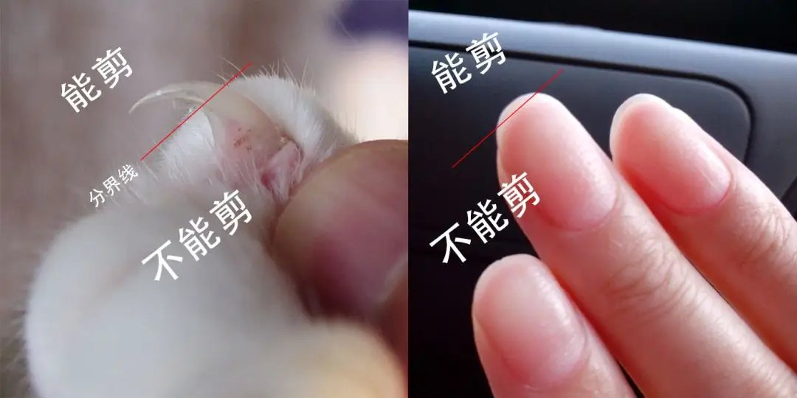
19夏天要给猫咪开空调么？
一、猫的舒适温度
| 情况 | 建议 |
|---|---|
| 猫的舒适区 | 20–26 ℃（多数资料给 20–28 ℃ 区间） |
| 室温持续 >30 ℃ | 需要降温：空调、风扇（不要直吹）、瓷砖/凉垫、充足饮水 |
| 室温 <15 ℃ | 老年猫、幼猫、短毛猫需保暖（暖垫、猫窝加毯） |
| 湿度 | 40%–60% 较理想；过干易致呼吸道不适 |
- 猫的祖先来自沙漠，耐热但不耐“闷热 + 无风 + 无退路”，尤其短头颅品种（波斯、异短）和肥胖猫散热能力差，是中暑高危群体。
- 中暑的信号：张口呼吸（猫张口呼吸本身就是危险信号）、大量流涎、走路不稳、体温 >40 ℃、意识模糊。这是急症，立即降温（湿毛巾 + 风扇）并送医。
- 开空调的正确方式：设定 26–28 ℃、不直吹、保持通风、给猫留一个能离开空调风口的房间或高台。
- 别把猫单独留在密闭车里，即使只有 10 分钟、即使车窗留缝。车内升温极快。
二、夏天的四件小事
- 饮水：增加水碗数量、每天换几次凉白开；湿粮比例可以调高。
- 猫砂盆：气味在夏天放大，铲砂频率提到每天 2 次。
- 驱虫：跳蚤、蜱虫、蚊虫（心丝虫媒介）在夏天最活跃，体外驱虫不可断。
- 空调病：长时间低温 + 不通风，部分猫会打喷嚏流鼻涕。保持温度别太低、定期开窗换气即可。
三、温度与猫咪状态对照
这篇里最有价值的是那张「猫咪温度反应临界点表」，而且自己标注了「基于湿度 40%–60%」这个前提——这一点相当专业。本篇还顺手把「人类为什么是耐热动物」讲清楚了。
每逢夏天，一个热门问题是：要给猫咪开空调吗？先说结论，不开也可以。以前没空调的年代，人和猫都能生活，只是舒适度差一些。开空调依然是个量力而行的事情。可以买凉席、冰垫、铝盆这些给猫咪避暑，也一样可以度过夏天。
猫这种动物，体温比我们人类高 2 度。我们人类喜欢在 24 度左右的环境里，猫咪就喜欢在 26 度左右的环境里。如果你希望猫咪舒服，那就维持 26° 的室温。
看到这里你可能会想：那猫咪的体温比人高啊，我能忍受的炎热，它也可以吧？不不不，它不可以。在这个世界上，没有任何一种动物可以跟人类比散热能力。人类就是为了耐热而生的动物，是唯一一种能在大太阳下跑完马拉松的动物。史前人类就是靠这个“超能力”来狩猎。为了拥有这项超能力，我们甚至失去了毛发——因为汗液只有在皮肤表面蒸发时才能真正带走热量。光滑的皮肤、超密集的汗腺、一小时能流出 1–2 升的汗液……这些全是我们为散热而生的表现。
所以，哪怕到了 35° 的炎热环境里，我们通过喝水 + 出汗，也是可以挺过来的。但猫咪就不行，它们只能靠肉垫和口鼻散热，35° 的时候猫咪就会大喘气，中暑概率相当高。尤其是湿度很高的地区，散热还会更困难一些。
- 土豪版：开空调。最简单也最费钱——猫咪 24 小时在家，等于家里 24 小时都开空调。
- 懒人版：家里拉窗帘、要通风、买凉席/宠物冰枕避暑，并始终提供充足的水分供猫咪饮用。国内除少数几个火炉城市，大部分地区哪怕最热的时候，室内也不会超过 35 度（除非你把猫咪关在阳台上暴晒）。否则它找个阴凉地方，趴在厕所瓷砖、宠物冰垫上，一般最高温度也就是 30–32 度。
- 中间版本：买一个猫咪空调房，不到 100 块钱。其实就是个大号保温箱，自己就可以做——白天往里放冰袋，晚上把冰袋冻上。自制大概花 30–50 块钱（牛津布收纳箱 + 保温棉 + 冰袋冰盒）。
- 特殊方案：用空调伴侣。这东西能联网，你在公司用 APP 就可以控制开关和调温。每天最热的时候开 2 个小时空调，就可以又省电又消暑。
就是猫咪已经中暑了。比如体温超过 40°、爪子一直流汗、气喘吁吁流口水——这就是快要不行了，这个时候就不要省空调钱了。一般这种情况，就是温度过高而且持续时间太久了。比如某些火炉城市的最热两周，又是长毛猫（更容易受热）、老龄猫（体质差、调节弱）、有心肺病的猫。以上情况叠加，就容易出现中暑。
最后附一个猫咪对温度的反应临界点：
（以上温度反应表基于室内湿度维持在 40%–60% 的情况下。若湿度更高，猫咪的实际感受可能更热，风险也会更高。）
如果你打算一直开空调的话，建议就是维持家里 26° 的温度，这个温度猫咪最舒服。然后人类回家之后，把温度再降低几度，人猫都能享受一个安稳的夏夜。
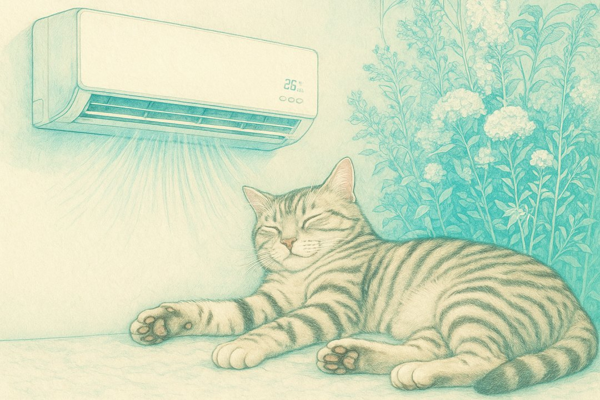
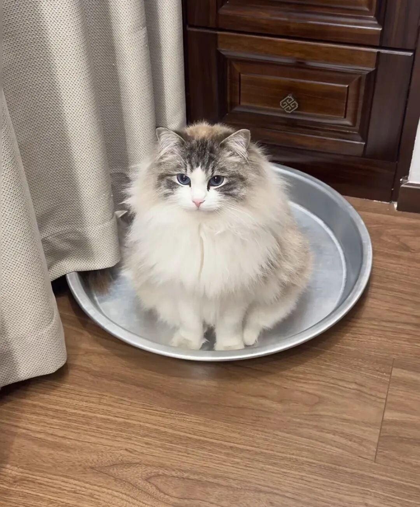
20猫咪出远门：宠物托运
一、先问自己：这次出行真的必须带猫吗？
猫对环境的依赖极强。换环境后的 3–7 天应激期，是猫泌尿系统疾病、应激性厌食、急性脂肪肝的高发窗口。如果只是 3 天以内的出行，请专业上门喂养 / 正规寄养，风险通常低于长途运输。
二、四种运输方式对比
| 方式 | 优点 | 风险 | 适合 |
|---|---|---|---|
| 自驾（推荐） | 可控、可随时停、猫在自己熟悉的气味环境里 | 长途疲劳驾驶；必须用航空箱并安全带固定 | 中短途；有家人陪同 |
| 航空托运（随行） | 速度快 | 需提前办检疫证明、订有氧舱；中转与等待时间长 | 长途跨省、出国 |
| 航空货运 | 可单独运输 | 不在主人视线内，风险最高；天气原因易延误 | 万不得已时 |
| 铁路/高铁 | 部分线路支持宠物托运 | 班次受限、需提前申请、检疫要求严格 | 特定线路 |
三、必办的三样文件
- 动物检疫合格证明（俗称“检疫证”）：通常需在出发前 3–7 天内到当地动物卫生监督机构/指定宠物医院办理，需带免疫证（狂犬疫苗需在有效期内且接种满 21 天以上，各地要求不同）。
- 免疫证明/免疫红本：狂犬与三联的接种记录。
- 宠物芯片/登记证（部分线路与出入境要求）。
四、让应激降到最低的 10 个动作
- 提前 2 周让航空箱变成“日常窝”：拆门放着，里面垫毛毯，放零食，让它自己进去睡。
- 出发前 3–5 天开始用信息素喷雾擦拭箱体。
- 出发前 4–6 小时停食，2 小时停水，减少途中呕吐与排泄。
- 不要使用未经兽医指导的镇静药。部分镇静药会抑制体温调节与心血管功能，在高空运输中可能致命。必须用药时请兽医开。
- 箱内放一件有你气味的旧 T 恤。
- 箱体用扎带固定，门锁扣再加固，贴上“活体动物/请勿倒置”标签与你的电话。
- 准备吸水垫，不用报纸（油墨有毒）。
- 温差防护：冬天加保温套（留通气孔），夏天用冰袋（包毛巾）。
- 落地后：先给一个安静的小空间，不要立刻放出来满屋跑。
- 到达后 48 小时内观察进食、饮水、排尿排便，出现超过 24 小时不排尿立即就医。
五、四项费用与全流程
这篇把一个不透明的行业拆成了四项可核对的费用，这是本篇最大的贡献。但它完全没提检疫证明和短鼻品种禁运——而这两件事是「办不成」级别的硬门槛（见对照表前两行）。
很多家长忧心忡忡：猫咪运输安全吗，是不是得选顺丰这样的公司啊？不行。顺丰是很好的快递公司，但你出远门时会顺丰邮寄自己吗？当然不会。猫咪也一样，它们不是货物，不能走快递，只能走宠物托运。托运的好处是安全——全程跟人类出行差不多，缺点是价格贵一些。
跨省的「傻瓜式托运」，平均是 600 元左右。一共三步：① 托运公司上门接猫，带去机场办理手续；② 飞行几小时，落地；③ 当地的工作人员接收小猫，安排顺风车司机送到小区门口。
- 上门接猫 + 代办登机手续：100~200 元。托运公司会派人上门接猫，也会送航空箱。如果你自备航空箱、亲自送猫去站点，就能省下一部分费用。
- 机票费用：浮动大，100~600 元不等。举例：从沈阳到合肥才 150 元，从合肥回沈阳要 600 元。这部分差别最大，取决于时间 + 城市 + 航线供需。
- 目的地机场保管费：100~200 元（避免不了）。猫咪到了机场之后，机场要收取一个临时保管费。即便你人在机场等候，也仍要交，是强制性的，没法规避。
- 配送到家费（可选）：100~200 元（根据地区浮动）。你可以选择到机场自取（免费），也可以让托运公司送猫上门。偶尔会超过 200 元——比如苏州没有机场，就要司机从上海机场接猫送到苏州。
综合以上四项：普通城市的猫咪托运费用大概在 400~800 元之间。行业里提到托运费，通常只指前面两项（上门接猫 + 机票），然后让家长自己去机场接猫，承担后面两项成本。
前面说的都是空运。此外还有铁路运输 + 专车运输可选，适合中短距离。如大连→长春，与其用空运，还不如用铁运或汽运。价格在 300~400 元，时间也更短。但太远的话，还是建议空运——毕竟铁运/汽运全程在路上，会有一点颠簸。
- 托运公司都是当地性质的，很多都是两三个人的小团队，所以不同城市就要找不同公司。
- 建议在淘宝或小红书搜索，选择销量高、评价好的。托运本身没有技术难度，从销量和评价基本能筛出靠谱的。
- 不要为了价格低而去找没有销量的托运。
- 要问清楚：是空运吗？需不需要自己去接猫？是不是送到小区门口？
- 超远距离运输都建议空运。有家长咨询到收费 2000 多的，这个并不正常——哪怕是交通不便利的小城市，也极少超过 1000 元。
- 也有走高端路线的（一辆面包车只放五六只猫、配全程实时监控），价格上 2000 元的也有，但从必要性上来说不大。因为传统模式下猫咪关航空箱里，看似空间小，但按猫咪的身材比例，这对它来说差不多等于一个硬卧。
- 上门接猫 + 登机手续：100~200 元，可省一部分
- 机票费：浮动较大，必需
- 保管费：100~200 元，必需
- 配送到家：100~200 元，可选
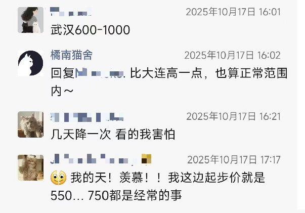
21猫粮碗怎么选？
一、两个关键概念
- 胡须疲劳（whisker fatigue）：胡须是猫高度灵敏的触觉器官。长期用窄口深碗进食，胡须反复摩擦碗壁，会造成进食不适，表现为吃两口就走、用爪子把粮扒出来、吃得到处都是。解法：宽口浅碟，碗口直径建议 ≥ 12–15 cm，浅到胡须不会碰到碗壁。
- 猫碗综合征（chin acne）：塑料碗易有划痕、藏细菌，是猫下巴长黑头/痤疮的常见诱因。解法：陶瓷、玻璃或不锈钢。
| 材质 | 评价 |
|---|---|
| 陶瓷 / 玻璃 | ✅ 首选。重、不易推走、易清洁、不藏菌。缺点易摔碎 |
| 不锈钢（304/316） | ✅ 推荐。耐用、好洗。缺点轻，猫容易推着走 |
| 塑料 | ❌ 不推荐。划痕藏菌、部分含双酚类物质、易致下巴痤疮 |
| 硅胶折叠碗 | ⚠️ 仅适合出行临时用，长期不适合 |
二、几个容易被忽略的细节
- 食碗与水碗必须分开。猫在自然界不会在食物旁饮水（猎物污染水源），把水碗紧贴饭碗会显著降低饮水量。理想距离 ≥ 1 米。
- 水碗数量 ≥ 猫数 + 1，多点分散，且远离猫砂盆。
- 位置要安静：不要放在人来人往的过道、洗衣机旁、冰箱旁。
- 抬高 5–10 cm 的餐台（尤其老年猫、大型猫）可减轻颈部与关节负担，也有助于减少呕吐。
- 每天洗、每天换水。猫碗是“看不见的细菌培养皿”，尤其湿粮碗，20 分钟内吃不完就该收走。
三、饮水机值不值得买
四、八节要点
这篇的态度很诚实：开篇就说「选碗归根结底是主观审美决策」，结尾劝人「别在这种细节上焦虑，很多焦虑是人为制造的」。本篇最有价值的一条是「宽而浅」——它把「胡须疲劳」这个机制讲透了。
从最终结果来看，大家换来换去的原因，主要还是取决于好不好看、搭不搭。「猫咪进食区」也是家庭空间的一部分，碗要和家具、地板、餐垫搭配协调。所以这篇文章也不会做广告推介，因为选猫粮碗，归根结底是一个非常主观的审美决策。
科技产品就是智能喂食器，目前市面上就是两个大品牌：小佩、小米。小佩做的时间更久、更完善；但小米势头很猛，而且从后续的配套生态来说（比如智能水碗、智能厕所），小米可能会更有优势。总之这两个品牌任选其一就行，目前基本是 55 开。
那什么样的人要用科技产品呢？最主要的情况是家里有一只肥胖猫咪，并且只有它一只猫。这个时候，用智能猫粮碗可以每天控制出粮量，从而控制体重。如果是多猫家庭，或者家里猫咪不肥胖，那智能碗用处就很小了，用传统的就完全 OK。我个人是更倾向于传统型的——一方面好看美观，另一方面清洗方便。
还有一种特殊情况，是你家猫咪经常因为吃得太快导致呕吐。那既可以用特殊的「慢食碗」，也可以用智能猫粮碗，都能控制猫咪的单次进食量。
说直白一点，要像个碟子。为啥呢？因为猫咪有「黑下巴」+「胡须疲劳」这两个生理机制。
- 黑下巴：就是猫咪吃猫粮的时候，下巴浸没在猫粮里，油脂就会附着在下巴上，容易形成粉刺，甚至发炎。为了避免这一点，猫粮碗尽可能要“浅”。
- 胡须疲劳：猫咪的胡须高度敏感，一旦吃饭时频繁碰触碗壁，会让它感觉不适甚至烦躁。长此以往，猫会吃饭中断、挑食；每次只吃一点就走；有的还会把食物扒拉出碗外再吃。解决办法很简单：选大口径、浅盘型、边缘平滑的猫碗。
当然，由于只有少量猫咪会出现黑下巴，所以“浅”并不是一定必须的。尤其对于懒人家长来说，堆深一点可以不用每天加粮，会轻松一些——这个就取决于猫咪是否有黑下巴，如果没有的话，那可以不用强求“浅”。但“宽”是必须要的，胡须疲劳是所有猫咪的共性。
这其实无关紧要，但如果你非要讲究，那就不要选塑料碗。别的什么陶瓷碗、玻璃碗、不锈钢碗，都是优秀的材质，只要定期清洗即可。塑料碗的问题也不大，只是塑料碗会更容易脏污纳垢、会有微量的释放物，长期舔舐不利于健康。
这几年很流行“猫高架碗”，理由是“保护颈椎”“更符合猫的自然进食姿势”。有道理，但其实也是“吹毛求疵”，而且也只有两种猫咪需要：老年猫（高架碗减少低头吃饭的难度，对关节和颈椎更友好）；扁脸猫（鼻道短、下颌突出，抬高碗位能减轻进食负担）。但如果你家猫还年轻健康、身体灵活，其实高架不高架影响不大。
就有点像人类喝水，到底是仰头对瓶口喝，还是用吸管喝更好一样。理论上吸管确实更好，但除了卧床病人/高龄老人，谁日常非得用吸管喝水呢？我劝大家不用在这个细节上焦虑，很多焦虑都是人为制造的。但如果你追求这个细节，可以根据猫咪的体型，选择 5–15 cm 高度的碗架。
感觉每一家都应该要准备一套，特别是春节回家、短期出差的时候用得上。一次灌满能够 2–3 只猫吃上一个礼拜。而且猫粮是从底部持续流出，猫咪始终可以吃到最下面的新鲜猫粮。
- 猫粮碗多久清洗一次：如果只是猫粮的话，十天半个月清洗一次足够了。如果是湿粮的话，建议 12 小时就要清洗一次，避免滋生细菌。
- 自由采食 vs 定时定量：没有肥胖或者进食障碍的猫咪，还是自由采食好。猫咪会每天采食 10–20 次，每次 3–5 g，人工喂食很难做到这么多次，不如一次给较多的量，让它自由采食。猫知道少食多餐，它们是优雅的动物。
- 猫粮碗要定期更换吗：没必要，尤其是陶瓷、不锈钢、玻璃碗，能用很多年。
- 橘南自己用的啥：我自己家里用的人类的汤碗，是来自景德镇的瓷器。人类的瓷器比“猫粮碗”要更便宜，而且品质是人用级，可选类型也多。
你要是懒得记这么多，就记两条：勤刷碗 + 碗口宽。这就足够了，其他的对猫咪来说，影响都挺小。能显著提升猫咪体验的，一定要做；但如果只是「用吸管喝水」这种吹毛求疵的细节，那没有卷的必要。
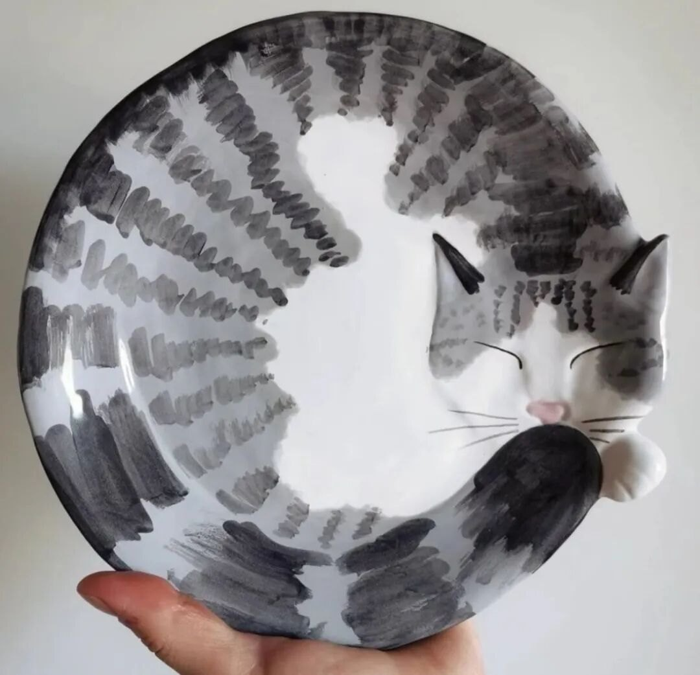
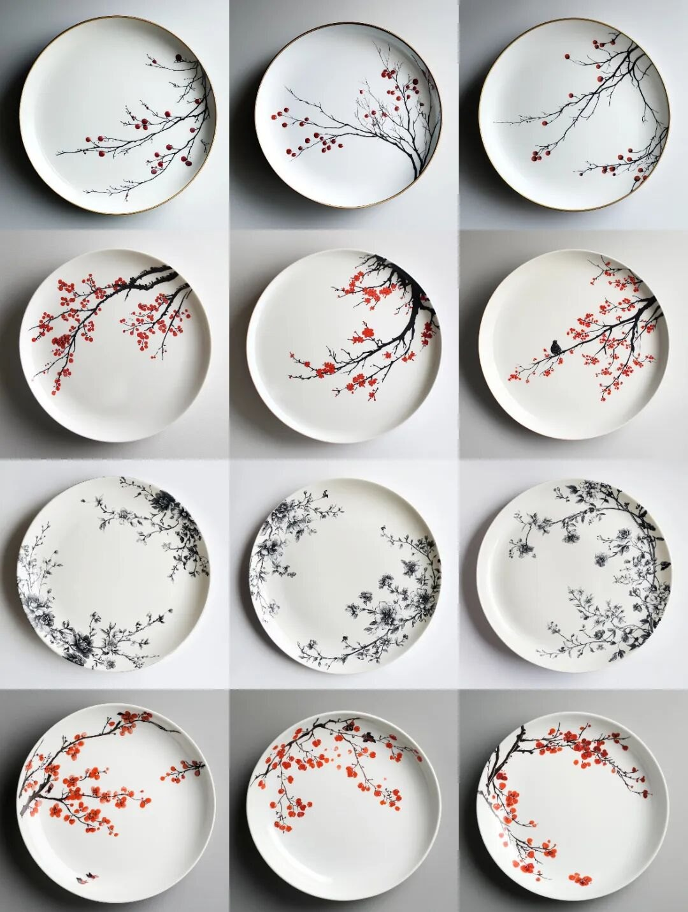
22如何给猫咪拍出漂亮照片
一、光线：照片好看与否的 80%
- 首选自然光，在窗边拍。让猫面向窗户，光从正面或 45° 侧前方打过来。
- 避开顶光和直射硬光（正午阳光、单点吊灯），会在眼窝和下颌形成难看的黑阴影。
- 阴天和“窗边散射光”是最好的影棚。
- 绝对不要用闪光灯：既会拍到难看的“激光眼”，也会伤害猫的眼睛（猫瞳孔对光敏感）。
二、机位：蹲下，跟它对视
- 降到你与猫视线齐平。绝大多数“猫照片难看”都是因为人站着俯拍。
- 手机镜头尽量靠近猫的眼睛高度，能明显放大眼睛、缩小身体，猫会更萌。
- 构图把眼睛放在上三分之一线，留出前方空间（“视线留白”）。
- 用 2x 变焦拍特写，而不是凑得极近——太近会变形且惊扰猫。
三、让它配合的四个技巧
- 逗猫棒举在镜头附近（略高于镜头），猫的视线会被引向镜头，自然产生“看镜头”的效果。
- 用高频的声音/揉纸声吸引注意，但只在按下快门前一秒用。
- 连拍。抓拍对焦最难，用连拍 + 后期挑，成功率远高于单张精修。
- 拍它睡觉、伸懒腰、从纸箱里探头——这些不用“摆拍”的表情最珍贵。
四、后期：三个动作就够
提亮阴影（别拉高对比）降低高光（保留白毛细节）轻微增加锐度与饱和度白平衡偏暖一点点（更温暖）裁切成方形或 4:3五、拍出“人生照片”的关键
本篇的核心洞察是「满瞳」——「猫咪只要满瞳，出片就不会差」。这既是摄影技巧，也顺带讲清了一件更重要的生理学事实：瞳孔是猫的情绪与健康最直接的窗口（见对照表第 2 行）。
作者说自己发布了 4 万多张猫咪照片，打印出来都够开 10 场展览了。常有家长问：“你朋友圈那些猫，怎么拍的？我怎么拍不出来？”
肯定有人说：我设备不行，人家都用单反、都会打光、还会构图。没关系，小白用手机也一样可以拍出很好的照片，用来做头像、做朋友圈封面绰绰有余。尤其当你现在的水平是“正脸拍的丑、抓拍很模糊、环境太乱、猫压根不看镜头”，那压根不用考虑设备的事儿。
猫咪只要满瞳，出片就不会差。这个算是作者拍猫八年里的最大洞察。“满瞳”这词听起来挺陌生，因为人类的瞳孔变化不明显，但猫的瞳孔是会剧烈变化的——只要几秒钟，瞳孔就可以变大，面相也从凶狠变成了可爱。
简单说，在亮光下，猫咪瞳孔就像一条缝，容易联想到蛇，有点吓人；但是光线一暗，猫咪瞳孔就会睁大。尤其是猫咪试图“捕猎”的时候，瞳孔就会更大更圆。捕猎很简单，拿个逗猫棒，立即就能让猫咪进入这个状态了。
下面是具体的操作步骤。
- 第一：让光线变暗。选择晚上拍摄，或者白天拉上遮光窗帘。猫舍拍照几乎都在晚上进行。你可能会说“你们灯也很亮啊？”——灯光完全无法跟太阳光相提并论，白天再柔的光，也会让猫缩瞳。
- 第二：让猫进入捕猎状态。用逗猫棒轻轻晃一晃，猫马上会进入“警觉模式”：眼神变得专注、瞳孔放大、耳朵立起、身体前倾。这就很适合抓拍。而且有一个额外好处——猫会看镜头。如果你手里的逗猫棒刚好在镜头上方，那猫的视线也能自然引导过来。
记住：满瞳 + 专注看向镜头 = 出片。当然，缩瞳也能拍出特别有氛围感的照片，但对初学者来说，先从满瞳练起，出片率更高。猫舍一般是双人拍摄，一个逗猫、一个拍照。单人拍摄就一手手机、一手逗猫棒，小技巧是让它站在桌子边缘，这样好控制距离。
还有，推荐选一款尽可能小、没存在感的逗猫棒，免得抢镜。用的是“CFA 比赛裁判专用款”，也就几块钱一根，主要就图它能“隐形”，不影响出图。
如果还要再加分一点点，那就是在满瞳的基础上，让猫咪的眼睛里出现“小星星”——眼睛里有光点，就会显得很有灵气；而全黑的那张，就略有一点渗人。怎么做呢？这不靠滤镜，而是靠光源的倒影。每个房间里都有几个“点位”是正好可以出现小星星的，这个就跟你灯光的摆设位置有关。如果那个地方乱糟糟的怎么办？用手机“人像模式”虚化背景，或者用台灯、落地灯这些可移动光源，把“点位”搬到你想要的地方。
也有。有些猫就是不爱放大瞳孔。这种猫通常是拥有一颗强大、自信、有安全感的内心。举例：同窝的「寿司」瞳孔总是很小，而它的亲妹妹「艾达」眼睛状态就很漂亮。寿司从小就很骁勇、爱打架，众猫见它都俯首低头，它自信、从容、谁也不怕，是典型“老大猫”。这种猫最放松，瞳孔常年半开或缩起，很难抓到“灵动”状态。为了拍好它的“职业照”，作者会把灯光调到最暗，勉强骗出满瞳，照片昏暗的话再后期用滤镜调亮。
反倒是那些随时满瞳的猫，你要小心。它可能是长期处于警觉、不安的状态中。
上面这些，都是“套路技法”。但真正惊艳的照片，多是家长返图——那种居家感的照片在猫舍很难拍到。时间才是最好的滤镜，没有足够长的陪伴，很难抓到这样好的瞬间。这种光线、状态、气氛，靠的不是“拍照技术”，而是猫在家里待久了、有安全感、有熟悉的空间，你又刚好在那个夜晚拿起了手机，按下快门。
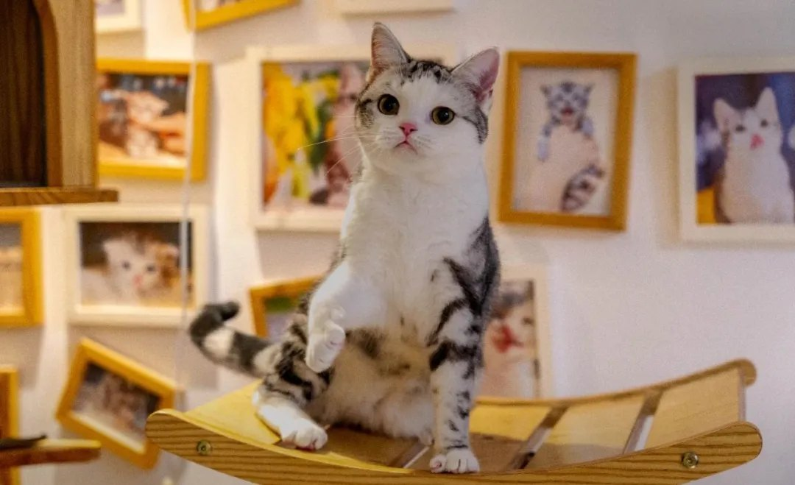
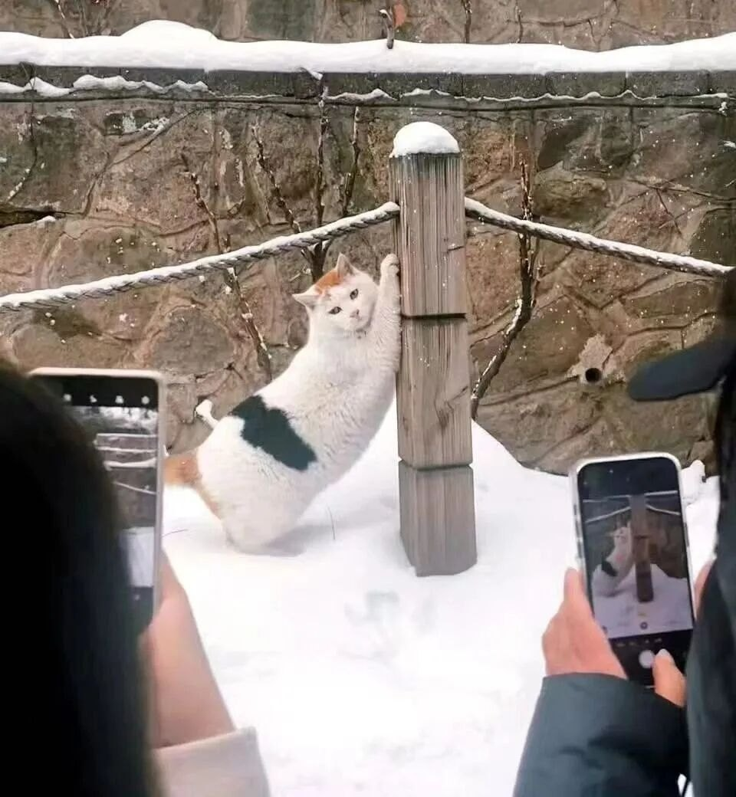
23猫咪掉毛多怎么办？
一、先分清“正常掉毛”和“异常掉毛”
| 类型 | 特征 | 说明 |
|---|---|---|
| 季节性换毛 | 春秋两季明显增多，全身均匀，无秃斑 | 正常。日照时间变化触发 |
| 持续少量掉毛 | 室内恒温环境全年都有 | 正常。室内猫因光照恒定，换毛不集中 |
| 局部秃斑/对称脱毛 | 成片掉，皮肤可见/发红/有皮屑 | 异常：皮肤病、过敏、寄生虫、内分泌 |
| 过度舔毛致秃 | 腹部、大腿内侧、前肢对称秃 | 异常：多与应激、焦虑或瘙痒有关 |
| 大量掉毛 + 消瘦 + 多饮多尿 | 整体状态变差 | 异常，需尽快就医 |
二、正常情况下如何减少家里的毛
- 每天梳毛 1 次（短毛 10 分钟，长毛 15–20 分钟）。这是最有效的手段，没有之一。换毛季可增加到每天 2 次。
- 吃进去的毛靠“排”，不靠“刮”：充足饮水 + 高蛋白主食 + 猫草，让毛顺利通过消化道。化毛膏每周 2–3 次即可，不可天天喂。
- 准备多个猫抓板和高处，让猫自己多动，脱落的毛会更多落在抓板附近。
- 空气净化器 + 勤换床品：减少空气中的皮屑（致敏的主要是皮屑蛋白 Fel d 1，不是毛本身）。
- 湿粮提升整体含水量，皮肤状态好，掉毛会相对少。
三、如果家里有人对猫过敏
- 主要过敏原是猫的唾液/皮屑中的 Fel d 1 蛋白，不是毛发本身。
- 有用的措施：绝育（可降低 Fel d 1 分泌）、勤梳毛+擦洗、空气净化器、不让猫进卧室、地面用湿拖而非干扫、接触后洗手不揉眼。
- 没有“不过敏的猫品种”，只有 Fel d 1 分泌量相对较低个体（如部分西伯利亚猫、巴厘猫），差异也存在个体波动。
- 严重过敏请咨询过敏科医生，脱敏治疗是医学上更可靠的路径。
四、与猫毛共处的具体做法
这篇有两个很强的观点：「鱼油不能防掉毛」（对），和「剃毛伤害很微小、0 应激」（本手册明确不赞同）。它也是全书唯一讨论「人猫共处舒适度」的一篇，读起来很有温度。
每年天气转热时，猫咪就会把冬天储备的厚厚绒毛全部脱落下来，这就是掉毛季的由来。同样的，等天气逐渐变冷的时候，猫咪的毛发也会逐渐变多、变厚，来抵御严寒。这是它们的天生生理机制，无法从源头阻止。不管你喂什么猫粮、补多少保健品，该掉还是得掉。这不是病，也不是营养不良。
而想对抗掉毛，行之有效的办法只有两个：
- ✅ 每天梳毛：使用专门的猫毛梳，帮猫咪把松动的浮毛梳理下来。每天 3–5 分钟，掉毛量可以减少个七八成。
- ✅ 剃毛：剃完后能让猫咪 2–3 个月里几乎不掉毛，能减少 99% 的猫毛。缺点两个：颜值下降（剃完像只“小丑猫”）；冬天不适合（容易感冒）。
很多家长一看掉毛就问：“要不要补点鱼油？”答案是：鱼油并不能防止掉毛。鱼油的作用是美毛，让猫咪的毛发更加光泽顺滑，但该掉还是得掉。而且你也不需要买鱼油——现在大多数猫粮里都有添加鱼油，一般添加是 2%，对猫咪来说都足够了。有一些主打美毛的猫粮甚至会加到 4%，但代价就是挤占掉别的营养成分的比例，而且适口性变差（因为猫咪很讨厌吃鱼油）。
所有利用“掉毛焦虑”让你买营养品/保健品的，都是在收智商税，看到这种营销号立即拉黑。
猫草。注意，这是针对“化毛”，而不是“掉毛”。掉毛是无法阻止的。而猫咪在每天的舔毛过程中，会吃进去很多猫毛，我们希望猫毛不要堆积在猫肠胃里，这个过程叫做“化毛”。
其实猫咪自己就知道“化毛”。一般来说，它们会通过呕吐来排出胃里的猫毛。而且猫咪的呕吐属于主动呕吐，它们吐完并不难受，跟我们人类的“被动呕吐”是两码事儿。当它觉得肚子里有一团猫毛不舒服的时候，就会尝试呕吐。往往会在一周里吐好几次，有一次吐成功了，OK，结束。正常猫咪隔几个月，就会有一周的时间里，集中几次呕吐，这是正常吐毛现象，不用太担心。
那猫草有什么用呢？它其实就是大麦苗，原理是：用膳食纤维促进肠胃蠕动，把猫毛给拉出来。不过猫草没啥味道，猫咪一般不会主动吃——可以把猫草剪碎了混在猫粮里，或者用搅拌机打成泥混罐头里。而所谓的化毛膏，也就是把猫草打成泥、混在罐头里，本质上是猫草 + 诱食成分。这种产品往往溢价特别多——比如热门的一款化毛膏卖 20 块钱，其实就是 1 毛钱的猫草 + 2 块钱的罐头，10 倍利润。
剃毛是最简单、最有效的办法。不过没有任何一个自媒体、科普的人会告诉你，掉毛季就去剃猫咪的毛发。普遍的观点是：你受不了就别养猫啊；你受不了就勤快地梳毛啊，给猫咪剃毛是懒惰的人才会做的。
作者的观点是：人猫共处的舒适度也很重要，把猫咪看得比人重要很多的态度也是不可取的。在夏天掉毛季，一次剃毛可以带来巨大的生活体验提升，对猫咪的伤害则是很微小的，甚至一个罐头就能补偿回来。在实践中，作者接触了至少上百例剃毛，目前还是 0 应激，相比洗澡要安全多了。另外，猫咪也不是狗狗，它们不会觉得剃完之后丑——人和狗都是社会型群居动物，一辈子生活在其他同伴的评价中；但猫咪是独行动物，它们压根不在乎同伴的评价。
不过，剃毛最好只在夏天进行，天气冷的话容易造成猫咪感冒。另外，如果家里有多只猫咪喜欢打闹，也不建议剃毛（打闹中猫毛有保护作用）；年老多病、皮肤敏感的猫也不建议剃毛。粗略评估，有 10–20% 的猫咪不太适合剃毛。
大部分宠物店都会提供剃毛服务，费用通常在 200 元左右。或者买宠物专用的剃毛器（噪声小，对猫咪的刺激小），也就是一两百块。更推荐在家进行剃毛——毕竟宠物店卫生情况良莠不齐，保不准前脚刚剃完有猫癣的小猫，后脚就剃你家的猫，容易感染皮肤病。
- 鱼油能防掉毛吗？❌ 不能，只能让毛发更有光泽
- 化毛膏是刚需吗？❌ 不是，猫草或主食粮中的纤维已足够，额外添加时建议自制
- 剃毛会让猫咪生病吗？✅ 夏季健康猫剃毛无害，注意保暖即可
- 猫咪频繁吐毛是生病吗？❌ 不是，掉毛季节猫咪清理毛球很正常
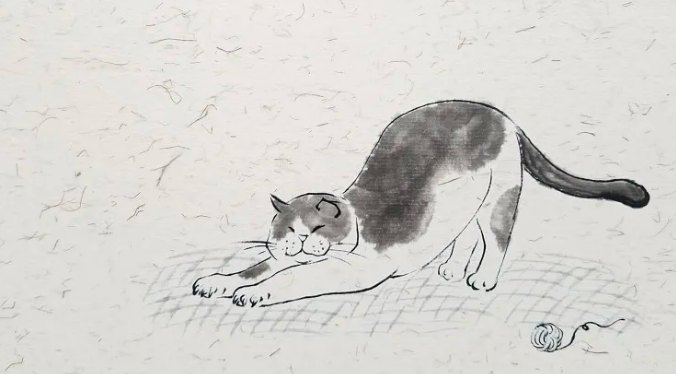
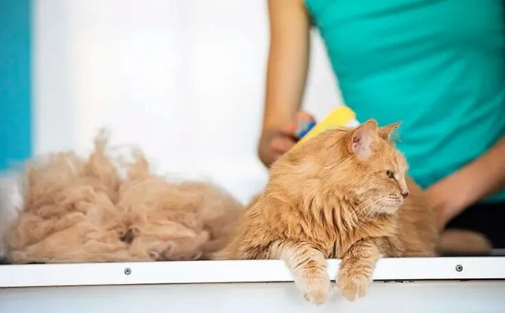
24有猫家庭里，不能养的植物
这一章的完整名单见附录C，这里只讲最容易出事、最需要立刻处理的几个。
一、按危险等级排的居家植物清单
| 等级 | 植物 | 处置 |
|---|---|---|
| 致命 | 百合（虎皮/亚洲/复活节/部分萱草）、夹竹桃、秋水仙、铃兰、苏铁、洋地黄 | 家里不要出现 |
| 严重 | 绿萝、龟背竹、滴水观音、万年青、花叶芋、白掌、常春藤、水仙/郁金香/风信子球茎 | 含不溶性草酸钙，口腔剧痛流涎；建议搬到猫绝对进不去的房间 |
| 中等 | 一品红、杜鹃、菊花/除虫菊、绣球、马醉木 | 胃肠刺激或神经症状 |
| 猫敏感 | 各类精油（茶树、尤加利、柑橘、薄荷）、香薰、精油扩香仪 | 猫肝代谢精油能力极差，可致中毒。有猫家庭慎用精油 |
二、安全植物（猫可以共处）
猫草（小麦/燕麦草）猫薄荷吊兰波士顿蕨竹芋散尾葵空气凤梨多肉（避开大戟科）蜘蛛抱蛋棕竹三、已经养了怎么办
- 先拍照识别（用识图 App 或拍照问兽医），确认品种。
- 挪到猫进不去的地方（带门房间、封闭阳台、高到猫无法到达且不会掉落的悬挂位）。
- 垂吊也不能大意——猫会跳上去。唯一可靠的是“物理隔离”。
- 发现啃咬后：观察 30–60 分钟，出现流涎、呕吐、精神差立即就医，带上植物样本或照片。
四、完整植物清单
这篇可以救命。它把「90% 的常见花卉对猫有毒」讲成了可执行的清单，而且给了 ASPCA 官网自查这条最实用的路径。开篇那句「你有了爱，也就有了枷锁」，是本手册引用最动人的一句。
养猫有一万种好处，但也有一个坏处：有一些植物你养不了啦。准确说不是“一些”，而是90% 的常见花卉都对猫咪有毒。养猫人在选择植物的时候，是多了很多顾忌。大概就是：你有了爱，也就有了枷锁。
几乎所有科普，都把百合列为“黑榜榜首”。百合确实很美，看起来人畜无害，但对猫咪来说，这是最剧毒的花卉。不管是红百合还是白百合，也不管是它全株的哪个位置……均是剧毒。猫咪哪怕只是舔一下百合花瓣的花粉，或者喝一口花瓶里的水，都有可能在 36 小时内引发急性肾衰竭。无论是鲜花、干花，还是百合味香氛、扩香石——请统统列入禁止清单。除了百合，其他类似百合的球茎类花卉多对猫咪不友好，例如水仙、郁金香、风信子、铃兰等。
这三种植物是淘宝“家养绿植”销量前三。但对猫咪来说，它们都含有不同程度的草酸钙晶体——草酸钙晶体像细小的针一样，扎在猫的口腔、喉咙和胃肠道上，导致口腔黏膜刺激、流涎（大量流口水）、吞咽困难、呕吐。这类绿植虽然不像百合那样剧毒，但它们看起来有点像猫草，猫咪主动啃食情况会比较多，也不得不防。
万年青、滴水观音、虎皮兰——这几位四季常青，是很多办公桌和书房的“常驻嘉宾”，但猫碰不得。它们同属于天南星科，这一科里还有众多大名鼎鼎的猫咪杀手，例如马蹄莲、龟背竹等。猫咪误食后会出现口腔水肿，甚至呼吸困难，需要马上送医。
举了一个真实案例：一位家长搬家后摆了盆滴水观音，几天后就发现猫流口水、呻吟不止，去医院确诊为中毒。虽然最后救了回来，但从此留下了轻微的嗅觉迟钝。
- ⚠️ 小雏菊、洋甘菊（菊科）：猫咪啃食后会导致过敏性皮炎、呕吐、腹泻。虽然不致死，但误食后猫会很痛苦。
- ⚠️ 康乃馨、大丽花、栀子花：毒性类似菊科，误食后会导致皮炎、呕吐、腹泻。尤其康乃馨是节假日高频率误伤猫咪的主角。
- 🚨 牡丹、芍药、绣球花：这几个切花毒性更强一点，除了胃肠症状，还会导致抽搐、神经异常、强烈肌肉反应。
注意，花店并不会标注花对猫是否有毒，建议收到花后主动检查植物种类。
- 猫草类：这些都是猫咪需要的，可以多种一点，比如大麦、小麦苗。
- 树木类：草本科不行，木本科可以看看。大多数木本植物对猫咪来说是安全的（除了樟树、核果类果树等少数）。
- 玫瑰、向日葵、蝴蝶兰、月季、蔷薇、紫罗兰：从美观程度上够美了，无毒害风险。
❗️特别说明：上述所有花卉都经ASPCA 或植物毒性数据库确认无毒或低刺激性，适合养猫家庭。虽然无毒，也要避免猫咪啃咬过量，以免肠胃不适。
- 🚫 千万不要：用手抠猫喉催吐；灌水、灌牛奶；自行喂活性炭（没经验容易呛咳）。
- ✅ 正确做法：拍下植物照片，查出确切品种；保留呕吐物或咬过的叶片；立刻带猫去专业宠物医院。
建议：买一株植物之前都要查一下是否对猫咪有毒。如果是冷门植物，去 ASPCA 官网搜“植物英文名 + cat toxic”来确认。
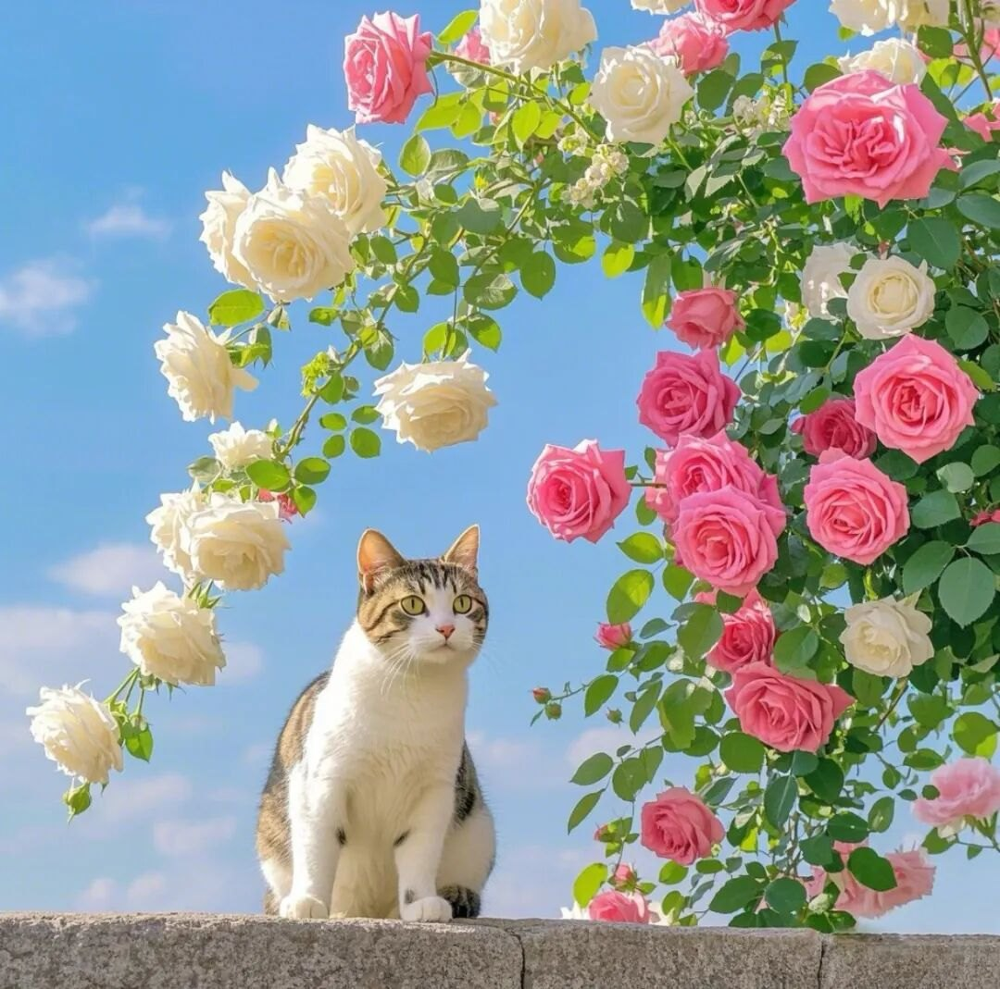
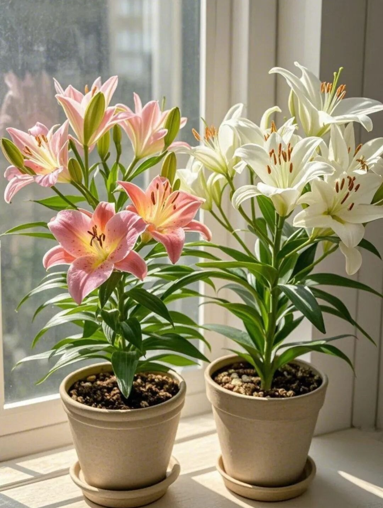
25拓展阅读：行为学、病理学
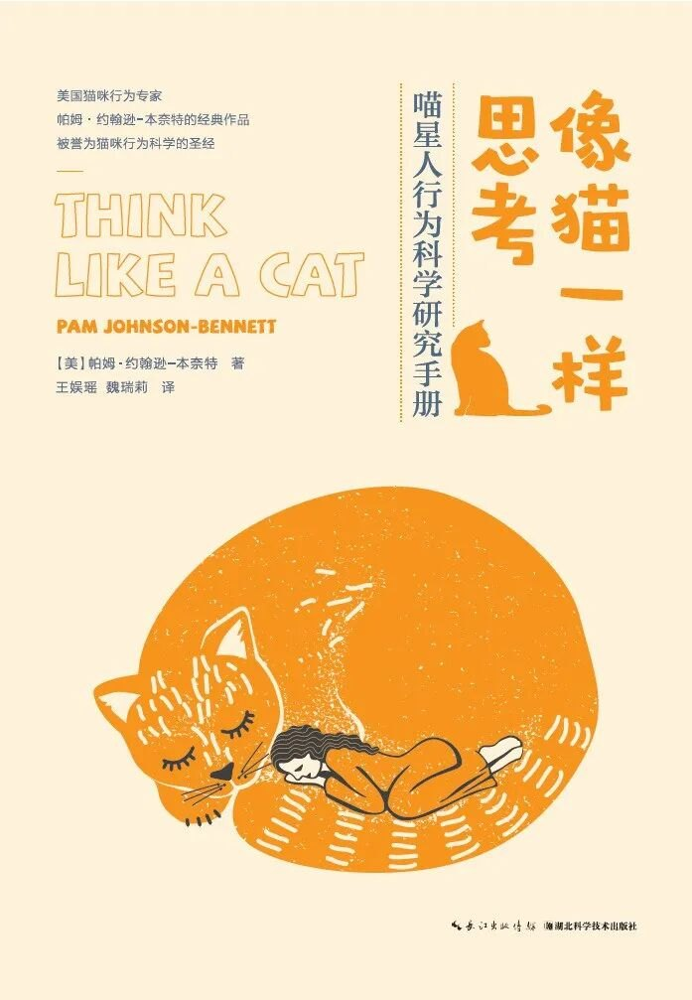
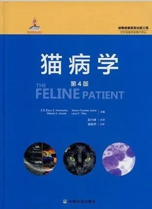
如果你想把养猫这件事从“经验”升级成“方法”，这一章给你一张书单和一套检索方法。
一、按需求选方向
| 你关心的问题 | 该看什么 | 从哪入手 |
|---|---|---|
| 猫为什么这样？怎么改行为？ | 兽医行为学 | 《猫的行为学》类教材；AAFP[19]/ISFM 环境需求指南；CVMA[8]《猫临床应激管理指南[9]（2026版）》 |
| 这个病是什么？会不会死？ | 小动物内科学 / 病理学 | 《默沙东兽医手册[2]》疾病条目（免费在线）；先看“症状—鉴别诊断—处置”三段 |
| 化验单上这些指标什么意思？ | 临床病理学 | 血常规（CBC）看红细胞/白细胞/血小板三类；生化看肝（ALT/AST/ALP）、肾（BUN/肌酐/SDMA）、血糖、电解质 |
| 吃的东西有没有问题？ | 小动物营养学 | WSAVA[3] 全球营养工具包；CVMA《犬猫临床营养管理指南[7]》系列；NRC/AAFCO 标准 |
| 中毒怎么办？ | 兽医毒理学 | ASPCA[15] 有毒植物与食物数据库；《默沙东兽医手册》中毒章节 |
| 用药安全吗？ | 兽医药理学 | 看说明书上的“种属禁忌”，猫与犬差异巨大 |
二、三个可以马上用的免费资源
- MSD Veterinary Manual（msdvetmanual.com）：全球兽医临床参考书，有面向宠物主人的简化版（Pet Owner 版）。搜英文病名即可，比中文自媒体可靠得多。
- ASPCA Animal Poison Control：有毒食物/植物数据库，可按名称检索。
- CVMA 团体标准（cvma.org.cn）：国内最新行业标准，搜“犬猫”可查到营养管理、应激管理、糖尿病筛查等文件。
三、怎么读一篇医学内容（防忽悠三问）
- 谁说的？ 作者有兽医资质或机构背书吗？还是“某博主的朋友说”？
- 有数据吗？ 是否给出剂量、样本量、时间窗？只说“某猫吃了没事”不构成证据。
- 有没有利益？ 这篇文章是不是在卖某个产品？
四、值得读的六本
这份书单选得很准：从行为学（Bradshaw、Johnson-Bennett）到家庭医学（大百科）再到专业典籍（猫病学），三个层级各一本，标准是「有中文、买得到、读得下去」。
关于猫咪的书籍很多，有一些相当硬核专业的，也有一些相对轻松简单的。选取标准是：① 各大平台有售；② 有中文版本；③ 易读性不错，且权威。
作者 John Bradshaw 是知名的人与动物关系学专家，以布里斯托尔大学为基地，创立和主持了世界闻名的人与动物关系学研究所。他研究狗狗、家猫及其饲主超过二十五年。全书以扎实的科学研究为基础写成，既严谨求真，也有细腻的笔触，从千年前的遥远考据，到时下人猫关系的思考，内容不乏深刻的洞察。
这本手册出自一家日本医院——阿尼霍斯宠物医院。图文并茂，彩印插图。跟上一本相比，没有那么科学和硬核，但很好读，图片超级多，不爱看书的人也能看下去。不仅仅适合有猫的人，也适合想养猫还暂时还没养的人。
作者 Pam Johnson-Bennett 是猫咪行为学专家，出版过七部跟猫咪相关的图书，这本手册更被称为经典。本手册从猫咪的视角上，系统介绍养育一只猫咪的方方面面：从哪里得到一只猫；选择猫抓板、给猫咪洗澡、刷牙；从基础医疗到紧急情况下的急救；迎接猫咪出生，应对老猫的离逝……可为初次养猫者提供一份完整的指南，也可使多年养猫人有茅塞顿开之感。
作者格尔德·路德维希博士，现居于德国，是一位动物学家和自由撰稿人。如书名一样，这本手册的内容详实（甚至有一点啰嗦），关于猫咪的知识点很全，图片也很漂亮。可以作为工具书阅读，在微信读书等平台上有电子版本。
这是国内病理学书籍里最畅销、最受欢迎的一本，得到了多家宠物医院的背书，涵盖了猫咪日常护理、疾病初步判断、简单治疗。内容全面、易读，简单问题可以自查。当然，如果搞不定，还是要及时就医。
专业、硬核的病理学典籍。每个宠物医院里都会摆上它，是给宠物医生们用的百科全书。在专业领域内影响力很大，很权威，有医学背景的朋友可以买来啃一啃。对普通小白来说并不友好。
附录
附录A · 权威知识库速查（默沙东 / WSAVA / AAHA / CVMA / 国标）
本附录把《默沙东兽医手册[2]》（MSD/Merck Veterinary Manual）、世界小动物兽医协会（WSAVA[3]）指南、美国动物医院协会（AAHA）疫苗指南、ACVIM 共识[5]声明、中国兽医协会[8]（CVMA）团体标准与指南、国家标准与农业行业标准，以及公开的同行评议文献，翻译成「能不能照做」的话。每条都标注了出处与年份，方便你和兽医对线时把话说清楚。
本附录只讲“怎么用”；每条依据的完整出处与版本号，统一列在 附录H · 引用来源清单，正文中的 [n] 上标与之一一对应。
二、疫苗：WSAVA 共识 vs AAHA 共识
| 对象 | 核心疫苗 | 首针 | 基础免疫 | 加强 |
|---|---|---|---|---|
| 幼犬（WSAVA 2024） | 犬瘟(CDV)、腺病毒(CAV)、细小(CPV-2) | 6–8 周龄 | 每隔 2–4 周 1 针，最后一针 ≥16 周龄 | 6–12 月龄补 1 针；此后不超过每 3 年 |
| 幼犬（AAHA 2024[4]） | 在上述基础上，把钩端螺旋体列入核心疫苗 | CDV/CAV/CPV 自 6–8 周起；钩端螺旋体 ≥12 周龄起、间隔 2–4 周共 2 针 | 同上 | 同上 |
| 幼猫 | 猫瘟(FPV)、猫疱疹(FHV-1)、猫杯状(FCV) | 6–8 周龄 | 每隔 2–4 周 1 针，最后一针 ≥16 周龄（部分指南建议至 16–20 周） | 6–12 月龄补 1 针；此后每 3 年 |
| 犬猫通用 | 狂犬（法律强制） | 12–16 周龄（按疫苗标签与地方法规） | 1 针 + 1 年后加强 | 按地方法规（多为每 1–3 年） |
- 副流感（CPiV）在 WSAVA 属非核心，但在 AAHA 的犬 DHPP 组合里通常与核心一起给——所以「四联/八联」里既有核心也有非核心，这是正常的。
- 非核心疫苗看生活方式：常去草地 / 水域的犬建议加钩端螺旋体（AAHA 已改为核心）；常寄养 / 犬舍的犬建议加犬舍咳（Bordetella）；多猫 / 散养猫考虑猫白血病（FeLV）。AAHA 2024 已把钩端螺旋体列为犬核心疫苗，中国多见于南方潮湿地区，听当地兽医建议。
- 免疫期（DOI）：WSAVA 明确核心疫苗不应比每 3 年更频繁，MLV 核心疫苗免疫期长达数年、可能终身；在 14–16 周龄完成犬核心系列的幼犬，约 98% 可获得多年甚至终身保护。抗体检测（titer）WSAVA 支持从 20 周龄起做（犬 CDV/CAV/CPV、猫 FPV）——先测再决定打不打，是省钱又科学的做法。
- 注意抗体检测的边界：猫的 FCV / FHV-1 抗体水平与保护力的相关性弱于 FPV，呼吸道疫苗的保护力与免疫期本就短于猫瘟疫苗，呼吸道两项不能只靠抗体数值下结论。
- 狂犬疫苗在中国属强制免疫，办犬证、出市、出入境都需要免疫证明（免疫红本）；2026 年起中国兽医协会已发布《犬只狂犬病免疫接种点建设与管理规范》，可在正规免疫点接种。
三、体况评分（BCS）：比体重更重要的指标
WSAVA 与 CVMA 均采用 9 分制 BCS。判断方法是看 + 摸肋骨、腰线、腹部上收三条线，不用称重。每 1 分约等于体脂变化 5%；理想分对应的体脂率约 20%（灵缇等视觉猎犬同分体脂更低，属正常）。
| 评分 | 外观与触感 | 结论 |
|---|---|---|
| 1–3 分 | 肋骨、脊椎、髂骨明显可见，无脂肪覆盖 | 过瘦，需排查寄生虫 / 甲亢 / 慢性病 |
| 犬 4–5 分 / 猫 5 分 | 肋骨轻按可及、有薄脂肪层，腰线明显，腹部上收 | 理想体况（犬 4 分适合偏瘦品种或工作犬） |
| 犬 6–7 分 / 猫 6–7 分 | 肋骨需用力按才摸到，腰线不明显 | 超重，建议减重 10%–20% |
| 8–9 分 | 肋骨摸不到，腹部下垂，背部平坦 | 肥胖（猫 ≥8 分即临床肥胖），需医学减重方案 |
四、驱虫：频率比药重要
| 项目 | 幼年 | 成年（完全室内） | 成年（外出 / 吃生食 / 接触其他动物） |
|---|---|---|---|
| 体内驱虫（蛔虫 / 绦虫 / 钩虫） | 每月 1 次至 6 月龄 | 每 3 个月 1 次 | 每月 1 次 |
| 体外驱虫（跳蚤 / 蜱 / 螨） | 每月 1 次 | 春夏每月 1 次；秋冬可 2 个月 1 次 | 每月 1 次，全年不断 |
| 心丝虫预防 | 按地区风险，兽医处方 | 华南 / 华东等风险区按月 | 按月，全年 |
| 粪检 | 到家即做，之后每 3 个月 | 每年 1–2 次 | 每年 2 次 |
五、绝育：月龄与利弊
| 对象 | 常见建议月龄 | 主要获益 | 需要注意 |
|---|---|---|---|
| 公猫 | 6–8 月龄 | 减少喷尿标记、离家打斗、攻击行为 | 术后 24h 内观察排尿，猫尿道细，警惕梗阻 |
| 母猫 | 6 月龄前后 / 首次发情后 | 大幅降低子宫蓄脓、乳腺肿瘤风险 | 发情期手术出血风险略高，一般避开 |
| 公犬 | 中小型 6 月龄；大型犬可延至 12–18 月龄 | 减少前列腺疾病、会阴疝、部分行为问题 | 大型犬过早绝育与某些骨科 / 肿瘤风险相关，建议与兽医商量 |
| 母犬 | 首次发情后 2–3 个月（约 12–18 月龄） | 显著降低乳腺肿瘤、子宫蓄脓 | 大型犬可待骨骼闭合后再做 |
六、口腔：被严重低估的「老年病源头」
- 3 岁前，约 80% 的犬、70% 的猫已出现不同程度的牙周病（AVMA / 美国兽医牙科学会数据），是犬猫最常见的疾病之一。牙结石→牙龈炎→牙周袋→牙齿脱落，细菌入血还会加重心脏、肾脏负担。
- 刷牙是唯一真正有效的家庭手段：宠物专用牙膏（可吞食）+ 指套或软毛牙刷，从 3–4 月龄开始适应，理想频率每天 1 次，现实至少每周 2–3 次。洁齿咬胶、洁牙粮只是辅助，不能替代刷牙。
- 洁牙（洗牙）必须全身麻醉 + 拍牙片，「不用麻醉的洁牙」只是磨掉表面牙石，既治不了牙龈下的病，还会造成疼痛和牙面损伤。
- AAHA 牙科指南建议：成年犬猫定期口腔检查与麻醉洁牙——猫与小型犬可从 1 岁起、大型犬从 2 岁起，此后每年 1 次（视牙周状况调整）。洁牙后建议拍全口牙片：约有一半的牙科病变藏在牙龈以下，肉眼看不见。
附录B · 全国宠物医院信息（24 小时急诊 · 价格 · 评价参考）
这一节回答三个问题：半夜出事去哪、怎么判断一家医院靠不靠谱、大概要花多少钱。价格与院区信息均来自公开渠道（医院官网 / 公示、国家标准、媒体报道），会变，出发前务必电话确认。
一、全国连锁：两家主流体系
| 体系 | 旗下主要品牌 | 覆盖规模（公开数据） | 诊疗分级 | 特点 |
|---|---|---|---|---|
| 新瑞鹏宠物医疗集团 | 美联众合、安安宠医、芭比堂、瑞鹏等 | 100+ 城市、1000+ 家医院；19 城 180 家重点分院、17 家重点中心医院覆盖 10 城 | 「1+P+C」三级：中心医院 / 专科医院 / 社区医院 | 有全国统一调度热线；集团布局十五大专科；美联众合北京转诊中心公示 1370 项价格；也是 GB/T 45295[12]-2025 与多项农业行业标准的主要起草单位 |
| 瑞派宠物医院 | 瑞派（含各地子品牌，如成都瑞派咪咻、维特等） | 多地布局，规模公开信息较少 | 各地院区独立设置 | 公开特色学科：心脏科、眼科、口腔科、猫科、骨科与神经外科 |
二、已核实院区（北京）
| 院区 | 地址 | 急诊 | 设备 / 能力 | 价格公示 |
|---|---|---|---|---|
| 美联众合北京转诊中心（1 级中心医院） | 北京市朝阳区北苑路 168 号 | 24 小时 | 64 排 CT、MRI、C 形臂、宠物专用 ICU、彩超、眼科手术显微镜、关节镜、胃肠镜、腹腔镜；设 12 个专科 | 夜间急诊号 200 元/次；夜诊急诊 100 元/次；急诊 CT 700 元；普通初诊挂号 10 元；体格检查 30 元；单器官腹部超声 195 元 |
| 美联众合京西 24h 动物诊疗中心 | 北京市石景山区 | 24 小时 | 内窥镜、彩色超声、血透仪；2025 年通过 AAHA 认证[16] | 院区公示标准化诊疗流程，术后 1–3 天回访 |
| 芭比堂望京动物诊疗中心 | 北京市朝阳区 | 24 小时应急响应机制 | 以外科骨科、猫科、眼科为特色；设独立猫诊区与低应激设施；2025 年通过 AAHA 认证 | 需电话确认当日急诊排班 |
| 芭比堂玉泉路总院 | 北京市石景山区玉泉路 | 以院区公示为准 | 2025 年通过 AAHA 认证 | 需电话确认 |
| 北京新天地国际动物医院（ICVS） | 北京市（官方定点狂犬免疫单位） | 需电话确认 | 提供中英文服务、疫苗套餐、绝育 / 洁牙 / 寄养 | 幼犬疫苗套餐约 900 元、幼猫约 1050 元、成猫年度套餐约 900 元、成犬约 990 元（含免疫红本，套餐价，常为折扣价） |
三、已核实院区（成都）
| 院区 | 地址 | 急诊 | 能力 |
|---|---|---|---|
| 瑞派咪咻宠物医院 · 天府总院（重症转诊中心） | 成都市双流区怡心街道剑和路一段 406 号附 201–207 号（近南湖立交） | 全年 24 小时，承诺 5 分钟响应 | CT、1.5T 超导核磁、DR、心超、血液透析机、高压氧舱、内窥镜、ICU 吸氧监护舱；中国兽医协会[8]五星级宠物医院、四川省宠物医院重症转诊中心，可提供救护车接诊与全省转诊 |
| 瑞派咪咻宠物医院 · 锦江转诊中心 | 成都市锦江区银木街 80、84 号一层 | 全年 24 小时 | 覆盖城东片区，重症转诊 |
四、其他主要城市：怎么自己找
- 上海：新瑞鹏旗下安安宠医布局约 16 家重点分院；中心医院可提供夜间急诊，排班需实时确认。
- 杭州：约 19 家重点分院（含美联众合 11 家 + 安安宠医 8 家）。
- 苏州：安安宠医约 13 家重点分院。广州 / 深圳 / 佛山：安安宠医有布局。
- 通用查法（推荐）：地图 App 搜「24 小时宠物医院」或「宠物医院夜间急诊」→ 只保留带新瑞鹏 / 美联众合 / 安安宠医 / 芭比堂 / 瑞派等品牌标识的门店 → 逐个打电话确认「今晚是否有急诊医生在岗、能否做 CT / 拍片 / 急诊手术」。
五、价格参考（公开渠道区间，一线城市为主）
| 项目 | 参考区间 | 说明 |
|---|---|---|
| 普通挂号 | 10–50 元 | 专家号可达 50 元；连锁社区医院常 10 元 |
| 夜间 / 急诊挂号 | 夜诊 50–100 元；22:00 后急诊 100–200 元 | 北京转诊中心：夜诊 100 元、夜间急诊号 200 元 |
| 体格检查 | 30–80 元 | 北京转诊中心公示 30 元 |
| 血常规 | 40–200 元 | 仪器不同差异大 |
| 生化（项目数不同） | 150–600 元 | 术前基础生化常见 200–400 元 |
| 犬细小 / 犬瘟 / 猫瘟快检 | 50–100 元/项 | 试纸板快检 |
| X 光（DR） | 100–500 元/张（按部位计价） | 骨科常需多体位 |
| 腹部 B 超 | 195–400 元 | 心脏彩超通常更贵（300–800 元） |
| CT | 700–2500 元 | 北京转诊中心急诊 CT 公示 700 元 |
| MRI 核磁 | 2000–5000 元 | 需麻醉，多用于神经科 |
| 犬四联 / 八联疫苗 | 60–300 元/针 | 品牌差异大 |
| 猫三联疫苗 | 120–250 元/针 | — |
| 狂犬疫苗 | 50–200 元/针 | — |
| 体内驱虫 | 30–80 元/次（按体重） | 拜宠清等品牌 |
| 体外驱虫 | 90–150 元/次（按体重） | 大宠爱等滴剂 |
| 公猫 / 公犬绝育 | 300–1500 元 | 含麻醉与基础用药，术前检查另算 |
| 母猫 / 母犬绝育 | 500–2500 元 | 一线城市明显更高，母犬最贵 |
| 洁牙（麻醉） | 500–2000 元 | 含麻醉与术前检查；拔牙另计 2000 元/颗量级 |
| 住院 | 普通 100–300 元/天；ICU/VIP 300–800 元/天 | 传染病隔离更贵 |
| 输液治疗 | 100–300 元/天 | 视用药而定 |
| 24 小时监护 | 80–150 元/小时 | ICU 吸氧监护 |
| 犬瘟 / 细小治疗 | ≥300 元/天 + 住院费 | 疗程通常 5–10 天 |
六、「靠谱宠主」就诊四问（照抄即可）
- 这项检查是干什么用的？不做会怎样？ —— 判断必要性，也判断医生是否愿意解释。
- 有没有更便宜或创伤更小的替代方案？费用差多少？ —— 正规医院不会回避这个问题。
- 如果这里处理不了，转诊到哪家？你们协助联系还是我自己联系？ —— 看院区的分级与转诊机制。
- 术后多久回访、谁来回访、复诊怎么安排？ —— 规范院区通常术后 1–3 天回访。
附录C · 危险食物、毒物与植物清单（含中毒剂量）
以下剂量换算自 ASPCA 动物毒物控制中心[15]、《默沙东兽医手册[2]》及公开同行评议文献，已于 2026-10-01 逐条回查。「没有安全剂量」的条目，一律按紧急处理——个体差异极大，有的猫狗吃一两颗没事，有的直接急性肾衰。
| 物质 | 中毒机制 | 参考中毒剂量 | 主要症状与时间窗 |
|---|---|---|---|
| 巧克力（可可碱 + 咖啡因） | 甲基黄嘌呤，抑制腺苷受体，中枢兴奋 + 心血管毒性 | 约 20 mg/kg 可可碱出现轻度症状；40–50 mg/kg 心脏症状；60 mg/kg 抽搐风险；犬报告口服 LD50 约 100–200 mg/kg | 1–4h 呕吐、烦躁、多饮；4–12h 心动过速、心律不齐；12–36h 震颤、抽搐。可可碱浓度：可可粉 ≈20 mg/g、烘焙巧克力 ≈16 mg/g、黑巧(70–85%) ≈10 mg/g、牛奶巧克力 ≈2 mg/g、白巧克力 ≈0.04 mg/g。黑巧毒性约为牛奶巧克力 4–5 倍，烘焙巧克力 / 可可粉最高 |
| 葡萄 / 葡萄干 / 提子 / 黑加仑 | 酒石酸（tartaric acid，2021 年研究提出，默沙东已采用），急性肾损伤 | 无安全剂量。默沙东口径：每 4.5 kg 体重超过 1 颗即有肾损伤风险；文献报告最低致毒量：葡萄约 19.6 g/kg、葡萄干约 3 g/kg（葡萄干约为葡萄的 3–5 倍）。个别犬 1–2 颗即发病 | 6–12h 呕吐、精神沉郁、厌食；24–72h 血肌酐 / 尿素氮升高、少尿或无尿。18 小时内治疗预后明显更好；无尿者预后差 |
| 木糖醇（无糖口香糖、部分花生酱、牙膏、代餐、部分液体药物） | 双重毒性：胰岛素骤释 + 肝坏死 | 约 0.1 g/kg（100 mg/kg） 即可致低血糖；>0.5 g/kg（500 mg/kg） 有急性肝坏死风险。1 粒 5 g 无糖口香糖对 5 kg 犬即危险 | 30–60 分钟内呕吐、虚弱、共济失调、抽搐（最快的一类）；肝损伤多在 12–72h 后显现。猫不受影响（犬是唯一报告中毒的家养动物） |
| 洋葱 / 大蒜 / 韭菜 / 葱（葱属） | 有机硫化物（正丙基二硫化物）破坏红细胞膜，溶血性贫血 | 犬：生洋葱 15–30 g/kg；猫：5 g/kg（或不到 1 茶匙熟洋葱）。大蒜毒性约为洋葱 3–5 倍；粉状 / 脱水 / 洋葱汤料等浓缩制品毒性远高于新鲜；加热不破坏毒性 | 迟发 1–5 天：牙龈苍白、精神差、无力、运动不耐、尿色变红至酱油色、黄疸。海因茨小体形成 24h 内出现，溶血常在 3–5 天后。重症需输血。秋田、柴犬、珍岛犬等品种更敏感 |
| 百合（对猫剧毒） | 确切毒素未明（疑为水溶性糖苷类），致急性肾小管坏死 | 任何部位、任何剂量都危险，包括花瓣、茎叶、花粉、插过花的水 | 2–6h 流口水、呕吐、精神沉郁；12–36h 出现肾损伤；不治疗常于 3–7 天内肾衰死亡。接触后 6 小时内开始积极输液预后最好；超过 18–24h 才治疗、或已无尿者预后差 |
| 澳洲坚果 | 机制未明，主要影响犬 | 犬约 2.4 g/kg（约每 0.45 kg 体重 1 颗） | 3–12h 后肢无力、震颤、呕吐、体温升高（可达 40 ℃）；多数 24–48h 支持治疗可恢复，极少致死 |
| 酒精 / 含酒精甜点 / 生面团 | 中枢抑制 + 低血糖 | 纯乙醇口服致死量 约 5.5–7.9 g/kg（换算 40 度白酒约 14–20 ml/kg，10 kg 犬约 140–200 ml）；生面团在胃内发酵产醇并致胃扩张扭转 | 30–60 分钟起共济失调、呕吐、体温低、呼吸抑制、低血糖；严重可昏迷、呼吸停止 |
| 咖啡 / 浓茶 / 能量饮料 | 咖啡因（与可可碱同类） | 约 14 mg/kg 起轻度症状，50 mg/kg 以上重度；与可可碱类似 | 烦躁、心跳快、震颤、呕吐；严重可抽搐。咖啡渣、浓缩咖啡豆浓度最高 |
| 牛油果（果皮 / 果核） | persin | 果肉少量多为轻度胃肠不适；果核对犬猫主要是异物梗阻风险；persin 对鸟类、兔等更毒 | 呕吐、腹泻；果核可致肠梗阻需手术 |
| 熟骨头 / 高盐食物 / 肥肉 | 物理损伤 / 钠中毒 / 胰腺炎 | 熟禽类骨头易碎成尖片；钠离子约 4 g/kg 可致钠中毒（常见于大量酱油、盐、橡皮泥） | 窒息、便血、呕吐；后肢无力、抽搐（钠中毒）；剧烈呕吐腹痛（胰腺炎） |
二、有宠家庭「黑名单」植物（重点提防）
| 植物 | 风险对象 | 危害 |
|---|---|---|
| 百合（含虎皮百合、亚洲百合、复活节百合、部分萱草） | 猫（剧毒） | 急性肾衰竭，花粉 / 花蕊 / 花瓶水均可致毒 |
| 绿萝 / 龟背竹 / 滴水观音 / 万年青 | 猫犬 | 含不溶性草酸钙，口腔剧痛、流涎、呕吐、严重时喉部肿胀 |
| 夹竹桃 | 猫犬 | 强心苷，心律不齐、猝死 |
| 杜鹃花 / 山茶科部分 | 猫犬 | 灰木毒素，呕吐、心律异常、抽搐 |
| 秋水仙 / 铃兰 / 洋地黄 | 猫犬 | 强心苷类，心律失常 |
| 一品红（圣诞红） | 猫犬 | 多为胃肠刺激、呕吐腹泻，严重性常被高估但也不宜啃 |
| 水仙 / 风信子 / 郁金香球茎 | 猫犬 | 球茎毒性最强，呕吐、腹泻、心律异常 |
| 苏铁（铁树） | 猫犬 | 苏铁素，肝衰竭，尤其种子 |
| 菊花 / 除虫菊 | 猫犬 | 除虫菊酯，流涎、震颤、共济失调 |
| 猫薄荷以外的精油（茶树、尤加利、柑橘等） | 猫（尤其敏感） | 肝代谢能力差，精油慎用；茶树精油中毒常见 |
三、误食后 60 分钟：家庭处置流程
- 先确认「是什么、吃了多少、什么时候吃的、宠物体重」，写在纸上或手机备忘录——急诊医生问的就是这四个，答不上来会浪费最宝贵的十几分钟。
- 保留物证：包装袋、巧克力纸、植物残株、呕吐物（可装袋）。
- 立刻打电话给最近的 24 小时医院（或新瑞鹏集团全国统一调度热线），按医生指示决定是否就医。
- 不要自行催吐，除非兽医明确指示。
- 不要喂牛奶、油、醋、蛋清或所谓的「解毒偏方」，这些常使情况更糟。
- 不要喂人用药（尤其对乙酰氨基酚、布洛芬、人用止吐药）。
四、出门去急诊前，打包这些
免疫本 / 疫苗记录最近的化验单照片常用药与保健品清单宠物病历 / 芯片号呕吐物或包装袋航空箱 + 毛毯（保体温）主人身份证与支付方式医院电话（提前存好）附录D · 急诊速查卡（红旗信号 · 生命体征 · 出门清单）
把这一页截图存手机。真的出事那天，你需要的不是知识，是顺序。
一、这些情况，立刻去医院（不要等天亮）
呼吸系统
张口呼吸（猫尤其危险）
舌头 / 牙龈发紫
呼吸超过 40 次/分钟且费力
异响、喘鸣
泌尿系统
猫频繁蹲猫砂盆但尿不出（尿道梗阻，24 小时内可致死）
尿中带血
超过 24 小时无尿
消化系统
一天内多次呕吐 + 精神差
呕吐物带血 / 咖啡渣样
腹部膨大坚硬且疼
便血 / 黑便
神经症状
抽搐
突然歪头、转圈、眼球震颤
后肢突然瘫软
意识不清
创伤与意外
车祸 / 坠楼（哪怕看起来没事，也要拍片查内出血）
被咬伤（伤口小但感染风险高）
大量出血
误食毒物 / 药物
难产与生殖
用力超过 30 分钟无产出
间隔 2 小时以上无下一胎
阴道出血
子宫蓄脓征象
二、生命体征正常值（成体，已核对默沙东参考值）
| 指标 | 犬 | 猫 |
|---|---|---|
| 体温（肛温） | 37.5–39.2 ℃ | 38.1–39.2 ℃ |
| 心率 | 静息 70–120；临床分诊 60–160（体型越小越快） | 静息 120–140；临床分诊 140–220 |
| 呼吸（静息） | 18–34 次/分 | 16–40 次/分 |
| 毛细血管再充盈时间 CRT | ＜2 秒 | ＜2 秒 |
| 成年体重参考 | 按品种差异极大，看 BCS 更重要 | 3–5 kg 常见 |
三、出门前 5 分钟清单
- 打电话确认：今晚是否有急诊医生在岗、能否做你需要的检查。
- 带上免疫本、病历、正在服的药、误食物包装。
- 航空箱铺毛毯，冬天加暖水袋（包毛巾，防烫伤）。
- 疑似中毒：别催吐，带上物证直接走。
- 昏迷 / 抽搐：保持气道通畅，记录发作时间与持续秒数，途中录像给医生看。
附录E · 核对与勘误表（2026-10-01 逐条回查）
这一页是证据公开：把本手册涉及的权威数据在 2026-10-01 逐条回查原始来源，列出「上一版怎么写 / 核对结论 / 本手册采用什么 / 依据」。✗ 已修正＝数值有误已改；△ 已校准＝表述不够严谨已改准确；✓ 无误＝核对后确认正确。
| 核对项 | 上一版写法 | 结论 | 本手册采用 | 依据来源 |
|---|---|---|---|---|
| 洋葱中毒剂量 | 犬约 5 g/kg（20 kg 犬约 1 个中等洋葱） | ✗ 已修正 | 犬 15–30 g/kg；猫 5 g/kg（或不到 1 茶匙熟洋葱） | 默沙东[2]《Garlic and Onion (Allium spp) Toxicosis》 |
| 大蒜毒性倍数 | 约为洋葱 5 倍 | △ 已校准 | 约为洋葱 3–5 倍 | 默沙东 / 同行评议文献 |
| 葡萄 / 葡萄干剂量 | 葡萄约 4 g/kg、葡萄干约 11 g/kg | ✗ 已修正 | 默沙东：每 4.5 kg 体重超过 1 颗即有风险；最低致毒量葡萄约 19.6 g/kg、葡萄干约 3 g/kg | 默沙东《Food Hazards》 |
| 葡萄中毒机制 | 机制未完全明确（主流假说为酒石酸） | △ 已校准 | 酒石酸（tartaric acid，2021 年研究提出，默沙东已采用） | Vet Emerg Crit Care 2021 / 默沙东 |
| 澳洲坚果剂量 | 犬约 2 g/kg | △ 已校准 | 犬约 2.4 g/kg | ASPCA[15] APCC（Hansen 2002） |
| 酒精剂量 | 约 5 ml/kg 的 40 度烈酒即可致中枢抑制 | ✗ 已修正 | 纯乙醇致死量约 5.5–7.9 g/kg（换算 40 度白酒约 14–20 ml/kg） | AKC / ACVP 毒物清单 |
| 木糖醇剂量 | >0.1 g/kg 低血糖、>0.5 g/kg 肝损 | ✓ 无误 | 维持；补充「猫不受影响」 | 默沙东《Xylitol Toxicosis》/ ASPCA APCC |
| 巧克力阈值 | 20 / 40–60 / 100–200 mg/kg | ✓ 无误 | 维持；补全各品类可可碱浓度 | 默沙东 / ASPCA APCC |
| 牙周病比例 | 3 岁后约三分之二以上 | △ 已校准 | 约 80% 的犬、70% 的猫（3 岁前） | AVMA / 美国兽医牙科学会 |
| 猫正常体温 | 37.8–39.2 ℃ | △ 已校准 | 38.1–39.2 ℃ | 默沙东参考值表 |
| 犬静息心率 | 60–160 次/分 | △ 已校准 | 静息 70–120；临床分诊 60–160 | 默沙东参考值表 |
| 猫呼吸频率 | 20–40 次/分 | △ 已校准 | 16–40 次/分（静息；>35 需就医） | 默沙东参考值表 / 康奈尔 |
| 钩端螺旋体犬核心疫苗 | AAHA 2024[4] 已列入犬核心疫苗 | ✓ 无误 | 维持；补充 ACVIM[5] 2023 共识（12 周龄以上全犬只） | AAHA 2024 Update / ACVIM 2023 |
| CVMA[8] 2026 两份指南 | 《猫临床应激管理指南[9]（2026 版）》《犬猫运动功能障碍临床诊断路径指南[10]（2026 版）》 | ✓ 无误 | 维持；补全 FCSGS 分级 Ⅰ–Ⅳ 级 + CSS 7 分制、DAMNIT-V + 改良 Frankel 5 级 | 中国兽医协会官网 |
| GB/T 45295[12]-2025 | 2025-08-01 实施 | ✓ 无误 | 维持；补发布日 2025-01-24、归口 TC541 | 全国标准信息公共服务平台 |
| 氯菊酯对猫 | 剧毒可致死 | ✓ 无误 | 补充：皮透约 100 mg/kg 即可危及生命；286 例中 10.5% 死亡；用药后 72 小时内隔离 | ANSES / VPIS / iCatCare |
| 体况评分（BCS） | 9 分制，犬 4–5、猫 5 为理想 | ✓ 无误 | 补充：每 1 分 ≈ 体脂 5%；理想体脂率约 20%；美 2022 年约 59% 犬 / 61% 猫超重或肥胖 | WSAVA 营养[6]指南 / 默沙东 |
| 疫苗免疫期（DOI） | 核心疫苗加强后保护力常可持续 3 年以上 | ✓ 无误 | 补充：WSAVA[3] 明确不应比每 3 年更频繁；14–16 周完成犬核心系列约 98% 获多年保护；抗体检测自 20 周龄起可做 | WSAVA 2024（JSAP, DOI 10.1111/jsap.13718） |
本次新增的权威来源（上一版未收录）
- GB/T 45204[13]-2025《宠物经营场所环境清洁与消毒指南》（国标，2025-08-01 实施）——按污染风险三级分区，可直接用来判断洗美 / 寄养场所是否规范。
- NY/T 4825[14]-2025《犬猫吸入麻醉操作技术规范》及同期三项农业行业标准（犬猫心肺复苏、经胸超声心动扫查、急性胰腺炎超声诊断），2026-05-01 起实施——麻醉与急救的规范底线。
- T/CVMA 199[7].1 / 199.2 / 199.3-2024《犬猫临床营养管理指南》（皮肤病 / 肥胖症 / 胃肠道疾病）——减重与处方粮的国内依据。
- T/CVMA 195-2024 糖尿病筛查诊断、197-2024 全血输注、198-2024 输血不良反应分类、138-2024《繁育犬福利规范》。
- 《犬只狂犬病免疫接种点建设与管理规范》等 7 项团标（中国兽医协会，2026-05-26 发布）。
- CVMA 动物福利友好评价体系（2023 版）：伴侣动物福利友好医院、猫友好医院、动物福利友好繁育舍[11]（犬 / 猫）——找「猫友好」医院时可以认这个标识。
附录F · 内容来源与出处对照
本手册各章正文由同一份底本（《养猫手册 · 十万字全指导（2026版）》，微信公众号「橘南猫舍」25 篇连载）与权威来源补充合并而成。合并后正文不再逐段标注出处，全部对应关系集中列在下面。表中「引用来源」编号与正文中的 [n] 上标、以及附录H 的清单一一对应。
| 章节 | 内容底本（《养猫手册 · 十万字全指导（2026版）》 对应篇目） | 本章引用的权威来源 |
|---|---|---|
| 第 1 章 · 新手养猫30问 | 新手养猫30问 | [8] |
| 第 2 章 · 猫咪行为及心理解析 | 猫咪行为及心理解析 | [8]、[9] |
| 第 3 章 · 猫咪到家注意事项 | 猫咪到家注意事项 | — |
| 第 4 章 · 和小猫咪互动、建立感情 | 和小猫咪互动、建立感情 | — |
| 第 5 章 · 猫咪和人类的共生历史 | 猫咪和人类的共生历史 | — |
| 第 6 章 · 猫粮 | 猫咪喂养之：猫粮 | [8] |
| 第 7 章 · 生骨肉 | 猫咪喂养之：生骨肉 | — |
| 第 8 章 · 零食 | 猫咪喂养之：零食 | — |
| 第 9 章 · 营养品 | 猫咪喂养之：营养品 | — |
| 第 10 章 · 绝育 | 猫咪健康之：绝育篇 | — |
| 第 11 章 · 驱虫 | 猫咪健康之：驱虫篇 | — |
| 第 12 章 · 疫苗 | 猫咪健康之：疫苗篇 | [3] |
| 第 13 章 · 牙结石 | 家养猫咪的牙结石问题 | — |
| 第 14 章 · 呕吐、拉稀、挠伤 | 常见问题：呕吐、拉稀、挠伤 | — |
| 第 15 章 · 铲屎官购物清单 | 铲屎官购物清单 | — |
| 第 16 章 · 猫舍家长专属清单 | 橘南家长购物清单 | — |
| 第 17 章 · 养猫进阶好物 | 养猫进阶好物 | — |
| 第 18 章 · 怎么给猫咪剪指甲？ | 怎么给猫咪剪指甲 | — |
| 第 19 章 · 夏天要给猫咪开空调么？ | 夏天要给猫咪开空调吗？开多少度合适？ | — |
| 第 20 章 · 猫咪出远门：宠物托运 | 宠物托运的一点总结 | [8]、[11] |
| 第 21 章 · 猫粮碗怎么选？ | 猫粮碗选购指南 | — |
| 第 22 章 · 如何给猫咪拍出漂亮照片 | 如何给猫咪拍出一张「人生照片」 | — |
| 第 23 章 · 猫咪掉毛多怎么办？ | 掉毛季来了，如何优雅地与猫毛共处？ | — |
| 第 24 章 · 有猫家庭里，不能养的植物 | 养猫家庭里，不能碰的美丽植物 | [15] |
| 第 25 章 · 拓展阅读：行为学、病理学 | 拓展阅读：行为学、病理学 | [2]、[3]、[7]、[8]、[9]、[15]、[19] |
附录G · 对照与差异说明
本附录把正文中所有对照与差异说明集中在一起，按章编号；正文每章末尾都有指向这里的链接。
G.1 · 第 1 章 新手养猫30问
本手册口径与权威来源之间的差异，逐条列在下面；每条都说明了「为什么不一样」和「实际怎么做」。
| 手册口径 | 权威口径 | 差异说明与怎么用 |
|---|---|---|
| 养猫 200 元/月 | 200 元/月对应国产平价主粮 + 基础猫砂 + 摊销驱虫，属于“能养好”的下限；若走中高端进口粮 + 罐头/冻干 + 年度体检，实际常见 400–800 元/月 | “200 元/月”这个数字是真的，但前提是主粮档位低。先定预算档位，再定主粮，不要倒过来 |
| 猫咪寿命 12–18 岁（第 3 问） | 室内猫常见 12–18 岁，营养与医疗条件好的可达 20 岁以上；第 30 问也说“不过 20 年” | 以 12–18 岁 做财务与心理准备，按 20 年做长期规划更稳 |
| 早绝育平均寿命提升 2 岁多 | 方向一致：及早绝育可显著降低母猫乳腺肿瘤、子宫蓄脓与公猫打斗/感染风险，多项研究支持寿命延长 | 这一条与权威结论一致，可放心采用 |
| 公猫 10–20 斤 / 母猫 6–12 斤 | 公猫常见 4–6 kg、母猫 3–4.5 kg（普通家猫）；10–20 斤偏向上限，多见于大型品种或超重个体 | 注意单位是“斤”（1 斤 = 500 g）。判断胖瘦请用 BCS 体况评分（见第 6 章），不要只看体重 |
| 绝育后体重提升 30% 左右 | 绝育后基础代谢下降约 20%–30%，若不调整喂食量确实会增重 | 绝育后应把日粮量下调约 20%–25%，并按 BCS 复评，而不是“顺其自然” |
| 不用额外补鱼油、维生素 | 前提是全价主粮且喂食量足。若主食为自制、生骨肉，或猫已有皮肤病/关节问题，则需针对性补充（见第 9 章） | 吃全价商品粮 → 不必补；吃自制/生骨肉 → 必须算清楚，别靠感觉 |
| 刷牙做不到就由它去 | 牙周病 3 岁前犬 80%／猫 70%，长期不干预会发展成疼痛、掉牙甚至影响心肾 | 这一条是本手册最不建议照做的。做不到每天刷，就用洁齿零食 + 每年洗牙复评（见第 13 章） |
| 猫咪 4 个月以上再养比较好 | 方向一致，但更准确的门槛是 8 周龄以下不宜离开母猫（CVMA[8] 繁育福利要求），且核心疫苗系列通常要到 14–16 周才完成 | 4 个月是好参考线；关键是疫苗完成 + 断奶满 8 周 |
| 只养一只猫它不会孤独 | 方向一致：猫是独居/半独居动物，单猫家庭不构成“孤独”问题；但环境单调会出问题 | 不必为猫“找个伴”；该投入的是环境丰富化（第 2 章），不是第二只猫 |
| 养猫每月只需每 2–3 天铲屎一次 | 猫砂盆建议每天铲 1–2 次，至少每 2 周整盆换砂；盆数 = 猫数 + 1 | 这是“最低维护量”。想避免乱尿，每天铲比什么都有效 |
G.2 · 第 2 章 猫咪行为及心理解析
本手册口径与权威来源之间的差异，逐条列在下面；每条都说明了「为什么不一样」和「实际怎么做」。
| 手册口径 | 权威口径 | 差异说明与怎么用 |
|---|---|---|
| 社会化窗口期 2–8 周 | 与 WSAVA[3]/AAHA 行为学指南一致：犬的关键社会化窗口为 3–16 周，猫为 2–7（或 2–8）周，窗口内正向暴露决定终生行为底色 | 两条完全吻合。 买猫/领养时，优先选“窗口期有充分人接触”的猫舍或救助人 |
| 安全感来自环境，不是人 | 与 CVMA《猫临床应激管理指南[9]（2026版）》“给猫控制感”的核心思路一致 | 搬家、装修、就诊前，第一件事是给猫一个可躲的封闭空间，而不是抱着安抚 |
| 每天吃 10–20 顿、每顿 3–5 g | 符合猫的自然摄食模式（少量多次）。但“一次性放一周粮”只适用于干粮 + 单猫 + 猫不暴食的情况 | 多猫家庭或湿粮不要照搬——投放式喂食会造成抢食、无法计量、也无法及早发现“猫不吃”这个最重要的疾病信号 |
| 猫无法品尝糖类 | 正确。猫的甜味受体基因 Tas1r2 存在缺陷，确实尝不出甜味；且猫对碳水利用能力低 | 所以“猫爱吃甜”是错觉；选粮看动物蛋白，不看“口感” |
| 多数猫对流动饮水机无感 | 方向一致：并非所有猫都偏好流动水，但增加饮水点、用宽口浅碗确实普遍有效 | 先加饮水点（≥2 处、远离食碗与猫砂盆），再考虑饮水机，别一上来就买设备 |
| 想训练猫咪通常不会成功 | 部分不准确。 猫可以用正向强化训练（响片、目标棒、进猫包、剪指甲、戴牵引），条件是用“食物奖励 + 短时多次”，且不能用惩罚 | 别放弃训练。改用响片 + 冻干奖励，一次 1 分钟、一天 3 次，两周就能教会“进猫包”——这直接关系就诊应激 |
| 引入第二只猫可能让原住民应激，甚至致死 | 正确且重要。原住民应激是可致命的临床问题（应激性膀胱炎、急性脂肪肝、厌食） | 这一条写得好。补充方法见本章“多猫引入”与第 3 章 |
G.3 · 第 3 章 猫咪到家注意事项
本手册口径与权威来源之间的差异，逐条列在下面；每条都说明了「为什么不一样」和「实际怎么做」。
| 手册口径 | 权威口径 | 差异说明与怎么用 |
|---|---|---|
| “1–2 天就会找到安全角落、建立信任” | 方向一致，但个体差异很大：胆小的猫（尤其非猫舍来源）常需 3–14 天 才放松，不进食超过 24 小时即属急症 | 把 1–2 天理解为乐观值。真正要盯的是“24 小时内有没有吃喝拉撒”，不是“第几天开始亲人” |
| “有的猫到家要 10 小时才完成如厕/吃饭/喝水” | 与临床一致：新到家拒食 24–48 小时是应激性厌食的危险起点；猫停食 2–3 天即可诱发急性脂肪肝 | 10 小时正常，24 小时是红线。超过 24 小时不吃不喝，当天就要联系兽医，不要等 |
| 到家第一天不激烈互动 | 与 CVMA 2026 应激管理指南“降低刺激、给控制感”一致 | 这条可直接照做。附带一条：到家前 3 天不洗澡、不驱虫叠加、不换粮 |
| 踩猫砂引导如厕 | 有效且无创的做法，与行为学建议一致 | 可照做。若猫坚持不用，先检查砂盆位置（要安静、远离食碗、有两条以上退路） |
| 用逗猫棒引猫出床底，不强行抓 | 与“不用惩罚、给猫退路”的现代行为学原则一致 | 可照做。但注意：不要为了引猫出来而长时间挡在唯一出口，要给猫留一条“能回去”的路 |
| 家中曾养病宠需消毒 | 正确。猫瘟（FPV）在环境中可存活 1 年以上，对多数消毒剂耐受，需用含氯或加速过硫酸氢钾类产品 | 新猫进家前，猫瘟环境残留是最容易忽略的坑。有猫瘟病史的家庭，所有织物与地面都要按说明消毒并彻底干燥 |
G.4 · 第 4 章 和小猫咪互动、建立感情
本手册口径与权威来源之间的差异，逐条列在下面；每条都说明了「为什么不一样」和「实际怎么做」。
| 手册口径 | 权威口径 | 差异说明与怎么用 |
|---|---|---|
| 前爪每周剪、后爪 2–3 周剪 | 临床常见建议为 每 2 周左右 修剪一次前爪；剪得太勤若操作不熟练反而增加“剪到血线”的风险 | 把“每周”理解为上限。更稳的做法：每周看一眼，长了就剪，每次只剪透明尖端 1–2 mm |
| 轻轻拍一下脑门警告 | 不推荐任何形式的体罚。现代行为学与 AAHA/WSAVA 立场一致：惩罚会增加恐惧与攻击风险，且猫难以建立“惩罚—错误行为”的联结 | 改用即时中断 + 转移：错误发生的当场用短促声（拍手/啧声）打断，立刻把猫引到正确行为（猫抓板、玩具），成功就给奖励 |
| 猫咪联想能力弱，事后批评没用 | 正确，且是理解猫行为的关键。间隔超过数秒的后果，猫无法与行为建立因果 | 所以“抓现行”才有效；但替代行为是转移，不是拍脑门 |
| 用激光笔逗猫 | 激光笔只满足“追逐”环节，猫永远抓不到实体，长期单用可能引发强迫行为与挫败感 | 可以玩，但必须收尾：每次激光游戏最后，把光点引到实体玩具或一小块食物上，让它“真的抓到” |
| 朝猫缓慢闭眼 = 猫式亲吻 | 有研究支持：缓慢眨眼（slow blink）能降低猫的应激、增加主动接近行为（Humphrey et al., 2020, Scientific Reports） | 这是最有实证价值的一条，值得每天用 |
| 让它来你腿上 / 上床睡 | 与“由猫决定互动节奏”的原则一致；同睡本身无害，但幼猫或呼吸系统敏感人群需谨慎 | 家里有孕妇、婴幼儿或免疫低下者，同睡问题请单独评估，不要只照搬 |
| 用手捧粮喂食 | 有效：建立了“人 = 食物来源”的正向联结 | 注意别用手喂零食/人类食物以外的东西，且手心喂食后要洗手；不建议用手喂整餐，以免养成非手不吃的挑食习惯 |
G.6 · 第 6 章 猫粮
本手册口径与权威来源之间的差异，逐条列在下面；每条都说明了「为什么不一样」和「实际怎么做」。
| 手册口径 | 权威口径 | 差异说明与怎么用 |
|---|---|---|
| 粗蛋白“35% 以上为佳”，国家最低标准 25%，理论极限 50% | AAFCO 成猫粮粗蛋白最低 26%（干基）；WSAVA/AAHA 强调看完整营养充足性声明（“符合 AAFCO/NRC 全价营养标准”），而非单一指标 | 35% 作为“好粮认知线”可用；但只认蛋白数字会踩坑（豆类、羽毛粉都能拉高数值）。第一看营养充足性声明，第二才看蛋白 |
| “猫粮属于动物饲料，标准远远低于人类食品” | 方向正确（宠物食品按饲料管理），但表述过于绝对：我国已有 GB/T 31216（犬粮）、GB/T 31217（猫粮）等推荐性国标，对营养、标签、卫生指标有明确规定 | 别把“国标”当“人食标准”，也别以为无标准。看检测报告 + 原料可追溯比看概念有用 |
| 海鱼配方不如鸡肉：过敏、重金属富集 | 鱼类确是常见过敏原之一，但猫最常见的食物过敏原是牛肉、乳制品、鱼肉；重金属风险取决于鱼种（小型鱼 < 大型掠食鱼）与来源 | 结论方向可用，但理由要改：不是“鱼不好”，而是鸡肉性价比与低敏性更稳。海鱼粮并非有毒，只看鱼种与厂家 |
| “无谷是应该的，猫咪肠胃对谷物容易过敏” | 猫对谷物过敏并不常见；无谷 ≠ 低碳水、≠ 更健康（常用豌豆/鹰嘴豆替代）；塑形确实需要淀粉 | 不要为“无谷”付溢价。真正要避的是高碳水 + 肉源模糊 |
| 换粮 5 天法（20/40/60/80/100） | CVMA 与多数兽医推荐 7 日过渡；高蛋白转换、肠胃敏感个体需 10–14 天 | 按 7 天走（本手册第 6 章正文表），5 天只适合肠胃极好的成年猫。换粮过快是猫软便/呕吐第一诱因 |
| “厂大于牌”；推荐汉欧、海辰、中宠、乖宝、福贝 | 属行业经验判断，非医学结论；代工厂资质与品控确实与成品稳定性强相关 | 可作选粮的加分项，但要配合具体批次的检测报告看，不能只看厂名 |
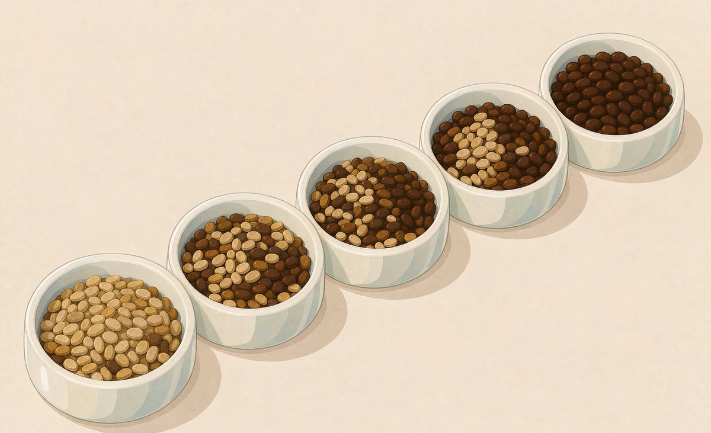
G.7 · 第 7 章 生骨肉
本手册口径与权威来源之间的差异，逐条列在下面；每条都说明了「为什么不一样」和「实际怎么做」。
| 手册口径 | 权威口径 | 差异说明与怎么用 |
|---|---|---|
| 冷冻 −20 ℃、15 天灭活寄生虫 | 家用冷冻无法可靠杀灭弓形虫组织包囊（需 −20 ℃ 数周至数月，且家用冰箱温度波动大）；异尖线虫需 −20 ℃ ≥7 天或 −35 ℃ 15 小时 | 不要把“冷冻 15 天”当安全承诺。鱼必须熟制或使用商业生食级冷冻鱼；免疫低下家庭成员不要处理生肉 |
| 吃生骨肉 → 每 3 个月内驱一次 | 方向与 ESCCAP/AAFP[19] 建议接近（生食猫建议更频驱虫）；但应以粪检结果驱动，而不是盲驱 | 保留 3 个月节奏，但要加粪检。生食猫建议每 3–6 个月粪检 + 定期血检 |
| 配方：鸡肉 40% + 鸡肝 10% + 鸡心 10% + 牛肉 20% + 鸭肉 20% | 肉类/内脏比例方向合理（内脏约 20%）；但钙磷比需要按 NRC/AAFCO 配平，蛋壳粉替代骨骼时钙含量须逐批核算 | 这张配方表可以当起点，但必须经兽医营养师复核重量与钙磷比；不建议照抄网络配方直接喂 |
| 牛磺酸：生肉 4 片/kg，熟肉 8 片/kg | 方向正确——加热会破坏牛磺酸，熟制需加量；但“片”不是剂量单位，应按 mg/kg 折算 | 记住原理即可：做熟就要多补牛磺酸。具体剂量交给营养师 |
| 自制生骨肉“主人亲手把关，食材新鲜” | AVMA 与 CDC 对生食宠物食品持保留态度，核心理由是人畜共患病原传播（沙门氏菌、弯曲杆菌、弓形虫），且营养不均衡是常见后果 | 折中方案更稳：优质主食罐 + 合规冻干（正确复水），拿到高含水量与高动物蛋白，同时避开病原与配平风险 |
G.8 · 第 8 章 零食
本手册口径与权威来源之间的差异，逐条列在下面；每条都说明了「为什么不一样」和「实际怎么做」。
| 手册口径 | 权威口径 | 差异说明与怎么用 |
|---|---|---|
| 零食“不宜喂太多”（未给量化上限） | 通行建议：零食热量不超过每日总热量 10%（训练零食可计入） | 把“不宜太多”换成可执行数字：≤10%。一顿正餐约 200 kcal 的猫，零食上限约 20 kcal/天 |
| 推荐具体品牌（巅峰、皇家猫奶糕、麦富迪、阿飞与巴弟） | 权威营养指南不推荐具体品牌（均存在批次差异与商业关系） | 品牌只作选购参考，不作背书。判断标准仍是：单一动物蛋白、无糖无诱食剂、可计入热量预算 |
| 麦富迪零食罐价格是巅峰的 1/16 | 价格随行就市，且“便宜”与“适合长期吃”是两件事 | 零食罐只用于引导与奖励（吃药、剪指甲、进猫包），不承担营养职责。主食必须是全价主食罐或全价粮 |
| 冻干“偶尔拿一颗”作为奖励 | 与训练用高价值奖励逻辑一致；训练冻干要掰成黄豆大小，控制总量 | 这是最实用的一条：冻干掰碎 = 最好的训练货币。一小袋能用一个月 |
G.9 · 第 9 章 营养品
本手册口径与权威来源之间的差异，逐条列在下面；每条都说明了「为什么不一样」和「实际怎么做」。
| 手册口径 | 权威口径 | 差异说明与怎么用 |
|---|---|---|
| “营养品对健康猫咪意义不大” | 与 WSAVA 全球营养指南一致：吃全价主食的健康猫无需额外补充；脂溶性维生素（A/D/E/K）过量会中毒 | ✓ 这条判断正确，可直接采纳。钱花在主食上，不花在补剂上 |
| 羊奶“比牛奶更友好”（因乳糖不耐） | 羊奶乳糖约 4.1%，仅略低于牛奶（4.8%）。真正安全的是猫专用低乳糖羊奶粉/无乳糖奶 | 买时看“低乳糖 / 猫用”字样，不要买人用羊奶。幼猫首选猫用奶粉，不要用羊奶长期替代 |
| 益生菌“拌罐头或温水泡开后用注射器注到嘴里” | 益生菌有菌株特异性（如粪肠球菌 SF68、动物双歧杆菌），并非所有菌株都对猫有效；注射器注服有呛咳/误吸风险 | 优先拌食。注射器注服只在兽医指导下进行，且要慢、少量。急性严重腹泻 + 全身症状时不要只喂益生菌 |
| 猫草“间隔一个月以上喂一次” | 猫草（麦草/燕麦草）安全性高，无严格频率上限；但大量吃草可能刺激胃，频繁“吐毛球”提示过度舔毛或胃肠动力问题 | 这个频率偏保守但安全。本手册补一句：若每周都吐毛球，要看医生，不要靠猫草压着 |
| 未提及猫草的实际作用边界 | 猫草的作用是促进排出，不是“解决毛球病”；真正的预防是梳毛 + 充足饮水 + 高纤维 | 把猫草定位为辅助：梳毛 > 饮水 > 猫草/化毛膏 |
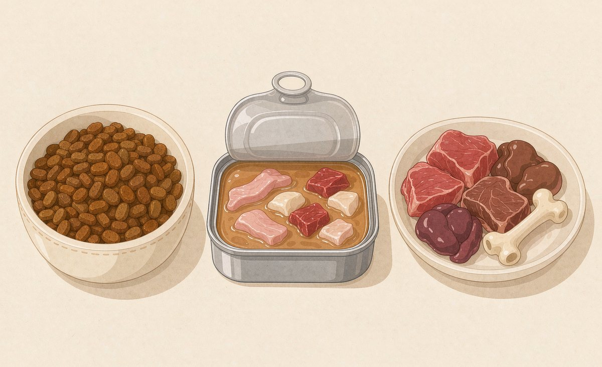
G.10 · 第 10 章 绝育
本手册口径与权威来源之间的差异，逐条列在下面；每条都说明了「为什么不一样」和「实际怎么做」。
| 手册口径 | 权威口径 | 差异说明与怎么用 |
|---|---|---|
| 满 7 月龄可以绝育 | 国际主流（AAHA 2024[4] 犬猫绝育指南、AAFP/ASV）现多推荐 4–6 月龄（体重大致 ≥1–2 kg 后，经典“传统 6–8 月龄”已非首选）；7 月龄更保守但安全 | 国内普遍共识仍是 6–8 月龄 / 体重 ≥2 kg。 7 月龄稳妥可用；若医院支持，5–6 月龄更符合“首次发情前绝育”的获益逻辑 |
| 绝育后“体重更稳定” | 绝育后基础代谢下降约 20–30%，食欲常上升 → 总体趋势是增重；“稳定”应理解为不再随发情周期波动 | 关键动作：术后 2 周内把日粮下调 10–20%。否则一年内肥胖率极高。这条比“性格更温和”重要得多 |
| 公猫 200–1000 元、母猫 400–1500 元 | 与国内实际收费区间基本吻合（一线城市上限更高；含术前检查/住院则更贵） | 价格可作参考。必问三件事：麻醉方式（气体麻醉+监护更安全）、有没有专人做麻醉监护、疼痛管理方案 |
| “没有发情期这个紧箍咒，猫咪这个物种可能就灭绝了” | 通俗表达，非科学论证（物种延续靠的是繁殖成功，不是发情痛苦） | 保留原话作为理解视角，但不要当论据用。真正的论据是：母猫首次发情前绝育可大幅降低乳腺肿瘤风险、彻底消除子宫蓄脓 |
| 公猫“发腮状况会减弱” | 部分正确：发腮受基因、品种、雄性激素、体况共同影响；睾酮下降会使腮部发育减弱 | 表述可用。若特别在意腮部，绝育时机可稍晚，但健康优先于外观 |
G.11 · 第 11 章 驱虫
本手册口径与权威来源之间的差异，逐条列在下面；每条都说明了「为什么不一样」和「实际怎么做」。
| 手册口径 | 权威口径 | 差异说明与怎么用 |
|---|---|---|
| 完全室内猫内驱 1–2 年 一次、外驱 1–2 年 一次 | ESCCAP/CAPC 对完全室内猫可放宽，但心丝虫是蚊媒传播——有蚊地区建议全年每月预防，1–2 年一次远不够；跳蚤也可经“人鞋底/其他宠物”带入 | 这是最需要修正的一条。 室内猫至少：外驱（含跳蚤/心丝虫成分）全年每月或每季度；内驱按粪检结果 |
| “体内寄生虫主要原因是吃生肉” | 除生肉外还有：跳蚤（绦虫中间宿主）、捕猎鼠鸟（蛔虫）、母婴垂直传播、污染的水土与鞋底 | 别只盯生肉。从没出过门、也从没吃生肉的猫依然可能感染绦虫——只要家里有跳蚤 |
| 推荐内驱：海乐妙；外驱：大宠爱 | 大宠爱（塞拉菌素）本身是内外同驱成分，不是纯外驱；具体用药应由兽医按体重开 | 可作选购参考，但注意：同名成分有不同剂型与规格，猫犬不通用。任何情况下都不给猫用犬用滴剂 |
| 未强调用药安全红线 | 猫绝对禁用含氯菊酯（permethrin）的犬用滴剂——猫皮透约 100 mg/kg 即可危及生命，中毒病例死亡率约 10% | 这是本手册必须补的红线：买药前看说明书上写的是“猫用”还是“犬用”。犬用口服驱虫药同样不能给猫吃 |
| 不良反应“一般持续 1–2 天” | 基本符合轻度反应的自然病程；但持续呕吐、流涎、震颤、共济失调属中毒表现，不是“正常反应” | 把“1–2 天”当观察窗口，不要当“忍耐期限”。出现神经症状立即就医 |
G.12 · 第 12 章 疫苗
本手册口径与权威来源之间的差异，逐条列在下面；每条都说明了「为什么不一样」和「实际怎么做」。
| 手册口径 | 权威口径 | 差异说明与怎么用 |
|---|---|---|
| 首针 8 周龄后，每针间隔 3–4 周 | WSAVA 2024 猫疫苗指南：首针 6–8 周龄，间隔 2–4 周，一直打到 ≥16 周龄为止（这才是终点线） | 关键差异在终点：没说 16 周龄。母源抗体在不同个体消退时间不同，不到 16 周就打完，可能全部白打。坚持打到 16 周龄后 |
| 此后“每隔一年接种一针” | WSAVA / AAHA：核心疫苗补强间隔 1–3 年（不必每年）；14–16 周龄完成犬核心系列约 98% 可获多年保护 | 把“每年一针”改为 “每 1–3 年一针，或先做抗体检测（titer）”。这就是想说、但没给出可执行口径的那件事 |
| “大部分猫咪三针后抗体会终生达标” | WSAVA 口径：完成 16 周龄基础免疫的猫多数可获长期（常达终生）免疫记忆，但个体是否达标必须检测才知道；且 FCV/FHV 抗体与保护力相关性弱 | “终生达标”过于绝对。正确说法：不检测就不能断言。抗体检测可自 20 周龄起做 |
| “每年一针的官方建议，很大程度是出于商业考量” | WSAVA 确实明确批评过过度接种（over-vaccination），并推荐以抗体检测替代不必要注射 | ✓ 这条判断与权威一致，可保留。但要补一句：该打的（幼年基础系列、16 周龄终点、1–3 年补强）不要省 |
| 建议家养猫不打狂犬疫苗 | 与我国法规冲突：多地强制犬猫狂犬免疫；办证、寄养、出行、出境均需免疫证明。狂犬是致死率近 100% 的人畜共患病 | 本手册明确建议：家养猫也打狂犬。 成本极低、收益极高。这条只适用“完全不出门 + 当地不要求 + 主人愿承担法律风险”的极少数情形 |
| “猫携带狂犬病毒 15 天内会死亡” | WHO 对犬猫咬伤采用十日观察法（观察咬人动物 10 天，其健康则可排除传染期） | 用“10 日观察法 + 疾控评估”替代“15 天死亡率”这个通俗说法。被流浪猫抓咬，直接去犬伤门诊，不要自己判断 |
G.13 · 第 13 章 牙结石
本手册口径与权威来源之间的差异，逐条列在下面；每条都说明了「为什么不一样」和「实际怎么做」。
| 手册口径 | 权威口径 | 差异说明与怎么用 |
|---|---|---|
| “绝大多数猫咪不刷牙，也能带着牙结石终老” | 牙周病是慢性进行性、不可逆的：牙龈下菌斑持续造成牙槽骨吸收，肉眼看到的“结石程度没变”≠ 牙龈下没在破坏；“带病终老”存在幸存者偏差 | 这是全书分歧最大的一条。犬 3 岁前约 80%、猫约 70% 已有牙周病。“可以不办”是风险自担的低干预路线，不是等效方案 |
| 刷牙“意义有限”、“违反猫性”、强行刷牙会应激致病 | VOHC（美国兽医口腔健康委员会）立场：刷牙是唯一被证实有效的家庭手段；应激风险真实，但可用脱敏训练（5 步法）显著降低 | 两者都对一半：不要硬按着刷（对），但也不要因为难就放弃（本手册立场）。做不到每天，每周 2–3 次也远好于 0 |
| 风险清单：牙龈红肿出血、流口水、口臭加重、进食困难、牙龈松动 | 与兽医牙科临床信号基本一致，可直接采用 ✓ | 这 5 条可以当家庭自查清单。但要再加一条：吃干粮时甩头、掉落、单侧咀嚼（牙吸收病变 FORL 的典型表现，约 1/3–2/3 成年猫会出现） |
| 洁牙粉“只降低口臭，对已有结石没用，只是减慢新结石” | 基本准确。VOHC 认证的洁牙产品（多聚磷酸盐、葡萄糖酸氯己定等）确有抑制菌斑/新结石的作用，但不能去除已有结石 | ✓ 方向正确，可直接采纳。洁牙粉只能当辅助，不能当治疗 |
| “全口拔牙不影响生活，猫粮照吃” | 方向正确：猫拔牙后多能吃干粮、且慢性疼痛解除后食欲常变好；但拔牙是最后手段，不是常规选项 | 别把“拔牙没事”当成“不用管”。正确顺序：日常刷牙 → 定期牙片 → 麻醉洁治+抛光 → 拔除无法保留的牙 |
| 3 岁以上 70–80% 有牙结石、5 岁以上 90%+ | 与 AVMA / VOHC 数据方向一致（3 岁前约 70% 犬、猫已有牙周病） | 两组数字可以并列使用：“3 岁是分水岭” 这个结论是稳的 |
G.14 · 第 14 章 呕吐、拉稀、挠伤
本手册口径与权威来源之间的差异，逐条列在下面；每条都说明了「为什么不一样」和「实际怎么做」。
| 手册口径 | 权威口径 | 差异说明与怎么用 |
|---|---|---|
| 猫会“主动呕吐”排异物，“就像挖鼻孔一样” | 通俗类比，非生理学表述。猫确实会吐出毛球，但反复呕吐不是正常现象：慢性呕吐需排查慢性肠病、消化道淋巴瘤、胰腺炎、甲亢、异物 | 保留“看精神状态”的判断法，但加一条红线：一周吐 ≥2 次、或每月吐 ≥1 次持续 3 个月 = 该查因，不是“正常毛球” |
| 用逗猫棒测精神好不好 | 实用家庭快速评估法，与兽医分诊中的“精神状态/互动反应”维度一致 ✓ | ✓ 可直接用。这是最好用的一条技巧：愿意追逗猫棒 = 精气神还在；连逗猫棒都不理 = 立刻去医院 |
| “最常见的呕吐原因，是毛球积累过多” | 健康短毛猫并不会频繁吐毛球；频繁吐毛球更多提示过度舔毛（皮肤病、应激、疼痛）或胃肠动力异常 | 把“毛球”当结果看，去查“为什么舔这么多”。同时把排毛优先级排好：每日梳毛 > 充足饮水 > 猫草/化毛膏 |
| 拉稀 1–2 次“不用太吃惊” | 对成年健康猫基本成立；幼猫例外——体液储备少，脱水与低血糖进展极快，一天内多次水样便就要看医生 | 加年龄分层：成年猫观察 24–48 小时；幼猫/老年猫/有基础病，直接就医 |
| 未提及便血、黑便等红旗 | 黑便（柏油样）= 上消化道出血，果冻状黏液便提示结肠炎/寄生虫——均为就医指征 | 本手册补进正文表：黑便 → 立即急诊；便中带鲜红 → 就医 + 粪检 |
| 眼睛流泪“通常滴眼药水就能治疗好” | 重要差异：不可自行使用人用/含类固醇眼药水——若存在角膜溃疡，激素会加重甚至致盲；需先做荧光素染色确认 | 把“滴眼药水”改为：先就医确认病因。脓性分泌物 + 打喷嚏 + 鼻塞 → 高度怀疑猫疱疹病毒（鼻支）。仅清水样流泪且精神食欲正常，可先观察 24 小时 |
G.15 · 第 15 章 铲屎官购物清单
本手册口径与权威来源之间的差异，逐条列在下面；每条都说明了「为什么不一样」和「实际怎么做」。
| 手册口径 | 权威口径 / 补充 | 差异说明与怎么用 |
|---|---|---|
| 分「基础篇 / 进阶篇」，先只买必需品 | 这个分法很实用 ✓。新手最常见的错误不是买少了，而是买一堆猫根本不用的东西（猫窝、猫衣服、各种玩具） | ✓ 直接照做。先买 8 件必需品，把猫接回家，其余等观察到猫的偏好再买 |
| 8 件必需清单：猫粮、水粮碗、猫厕所、猫砂、逗猫棒、指甲剪、猫包、梳毛器 | 缺了 4 件真正必要的东西：① 电子秤（每周称重，体重下降 5% 是最灵敏的疾病信号）；② 猫砂盆数量（见下条）；③ 宠物专用消毒液（见下条）；④ 航空箱（猫包不能托运） | 本手册的入门 12 件 = 8 件 + 电子秤 + 第二只猫砂盆 + 宠物专用消毒液 + 航空箱 |
| 未提及猫砂盆数量 | 猫砂盆 = 猫数 + 1（国际猫科医学会 ISFM / AAFP 环境需求指南）。这是行为问题（乱尿、憋尿、特发性膀胱炎）最有效的预防措施之一，且几乎零成本 | 一只猫就买 2 个盆，放在两个不同位置（不要并排）。多猫家庭按 n+1 配置 |
| 猫厕所「找个大号纸壳箱就行」 | 可以应急，但纸壳吸尿、渗漏、无法彻底消毒，且不防带出。合适的盆：长度 ≥ 猫身长（不含尾）的 1.5 倍、宽度 ≥ 猫身长、盆沿高度 10–15 cm | 短期用纸箱可以，长期建议换成敞口、无盖、大号的塑料或陶瓷盆。封闭盆除臭好，但气味聚集会让部分猫拒用——多猫家庭建议至少一个敞口盆 |
| 猫砂推荐豆腐砂（不臭、粉尘少、不易带出） | 豆腐砂对新手确实最省心，且可冲厕（少量多次）。但要知道取舍：结团强度与除臭弱于膨润土；猫的天然偏好是细颗粒、无香、可挖掘的膨润土 | 看猫选砂：如果猫拒用或乱尿，先换成无香细颗粒膨润土试；若人更在意粉尘/气味，再用豆腐砂。不要用带香味的猫砂 |
| 消毒液「推荐宠物专用的」 | 这条必须强调原因：常见家用消毒剂（滴露、威露士等）主要成分是对氯间二甲苯酚（PCMX）等酚类，而猫的肝脏缺乏葡萄糖醛酸转移酶，对酚类解毒能力极差——舔舐即可中毒，表现为流涎、呕吐、共济失调、肝损伤 | 绝对不要用含酚类（PCMX、苯酚、甲酚）的消毒液拖地、洗猫砂盆、洗食具。选宠物专用或过硫酸氢钾、次氯酸（充分冲洗）、蒸汽 |
| 「每周梳一次，能少掉 80% 猫毛」 | 方向正确 ✓。但掉毛季（春末/秋初）建议每天梳 3–5 分钟，平静期每周 2–3 次。梳毛还是每周最重要的家庭体检：能摸到肿块、发现皮屑/跳蚤/蜱虫、看到伤口 | 把梳毛当日程而不是当任务。掉毛季每天，其他时候每周 2–3 次 |
G.16 · 第 16 章 猫舍家长专属清单
本手册口径与权威来源之间的差异，逐条列在下面；每条都说明了「为什么不一样」和「实际怎么做」。
| 手册口径 | 权威口径 / 补充 | 差异说明与怎么用 |
|---|---|---|
| 「只要有一个猫厕所、一袋猫砂就可以迎接猫咪」——前提是猫舍已经送了猫粮和礼包，不是通用结论 | 作为橘南家长这个特定前提，成立 ✓。但对一般新手，本手册仍建议入门 12 件（见第 15 章），尤其是电子秤与航空箱——前者关乎健康监测，后者关乎应急送医 | 读这句时要带上“猫舍会送”这个前提。搬到通用场景会漏掉关键物品 |
| 粮「可以一次放好几天的，吃完就加」 | 对干粮 + 健康成年猫成立 ✓（猫是少食多餐，一天进食 10–20 次，详见第 21 章）。但湿粮（罐头/生骨肉）绝不能久放——室温下 30 分钟到 2 小时即开始显著滋生细菌，夏天更短 | 干粮可以放，湿粮放 15–30 分钟就收走。夏天尤其注意 |
| 水「2–3 天一换」 | 偏宽。猫本身饮水量低（这是它 CKD/尿结石高发的核心原因之一），而水的新鲜度直接影响饮水量。夏天、多猫、或猫有泌尿病史时更要注意 | 每天换水、每天洗水碗是成本最低的泌尿系统保健。水碗多放几处、远离猫砂盆和食盆 |
| 推荐 pidan 雪屋作为“业内公认最好猫厕所” | 雪屋的除臭与防带出确实优秀 ✓，但它属于全封闭盆。国际猫科指南提醒：封闭盆内部气味聚集、氨浓度高，部分猫（尤其多猫家庭、有关节炎的老猫）会拒用，而拒用 → 憋尿 → 特发性膀胱炎/尿闭 | 喜欢雪屋可以买，但至少再配一个敞口盆，让猫自己选。老猫、有关节病的猫，盆沿要更低或加踏板 |
| 豆腐砂「一袋能用半个月，每隔 1–2 个月彻底清理一次」 | 更换频率取决于猫数、盆数、铲屎频率。“彻底清理”指全盆换砂 + 消毒。猫砂盆建议每天铲 1–2 次（多猫家庭更多） | 把“彻底清理”写进日程：每天铲、每周补砂、每 2–4 周全换（比 1–2 个月更频，尤其夏天） |
G.17 · 第 17 章 养猫进阶好物
本手册口径与权威来源之间的差异，逐条列在下面；每条都说明了「为什么不一样」和「实际怎么做」。
| 手册口径 | 权威口径 / 补充 | 差异说明与怎么用 |
|---|---|---|
| 流动饮水机「实测有 20% 的猫咪会因此多喝水，但也只有 20%」 | 这个数字很诚实，也基本符合研究结论 ✓。多项研究显示：饮水机对总饮水量的提升有限，且个体差异极大；真正有效的往往是增加水碗数量、换宽口浅碟、用陶瓷/玻璃、勤换水 | ✓ 认同坦率。先试最便宜的办法（多放几个宽口水碗），还不行再买饮水机。饮水机要注意每天换水 + 每周拆洗泵体（否则生物膜比不流动的水更脏） |
| 智能猫砂盆「更推荐传统盆」 | 本手册同意判断，理由甚至更充分 ✓：粪便与尿液是猫最重要的健康监测窗口——形态、次数、量、颜色，是发现 CKD、糖尿病、甲亢、IBD、寄生虫的第一手信号。智能盆自动铲走，你反而看不到 | 上班族、老猫（关节病）、多猫家庭可以用智能盆省力，但请每天手动看一次记录并保留人工观察习惯。另外：智能盆的多猫识别准确率有限，别全信它的“猫只识别”数据 |
| 猫爬架「100–300 块钱的猫树就可以」 | 价格判断合理 ✓，但买猫树的第一标准不是价格而是稳定性。猫从 1.5 米高处起跳落地的冲击力可达体重的数倍，底座不稳的猫树会倒砸伤猫，这是真实发生的事故 | 选购三条硬指标：底座面积大、重心低、承重标注 ≥ 猫体重 3 倍。便宜但晃的不要买。买回后靠墙固定 |
| 猫笼「猫咪建议散养，但笼子也有其用处」 | “建议散养”这个前提必须保留 ✓。长期笼养会导致肌肉萎缩、肥胖、应激、刻板行为，并显著增加特发性膀胱炎风险。笼子只应作为新猫隔离、术后静养、多猫冲突时的临时空间 | 如果必须用笼，时间越短越好，且笼内要有水、粮、砂盆、藏身处。不要把笼养当日常方案 |
| 猫薄荷「对猫咪有强烈的吸引力，推荐」 | ✓ 有效，但约 1/3 的猫对猫薄荷完全无反应（受嗅觉受体基因影响，是遗传的，不是猫有问题）。另外猫薄荷对 6 月龄以下幼猫通常无效 | 没反应的猫可以换木天蓼、银藤（金银花藤）。用法：少量、间歇给（连续使用会脱敏） |
| 消毒液「推荐宠物专用的」 | 原因仍是酚类剧毒（见第 15 章）。补一条：精油类“天然消毒”同样危险——茶树、薄荷、尤加利、柑橘、冬青精油对猫的肝脏代谢负担极大，扩香、涂抹、清洁都不建议 | 家里有猫，消毒清洁一律选宠物专用或蒸汽/次氯酸（充分冲洗）。香薰机、精油扩香请收起来 |
| 剃毛器「人用的理发器就挺好用的」 | 不建议长期用人用理发器：刀头温度高（易烫伤皮肤）、噪音大（应激）、刀齿间距不合适（易夹毛划伤）。剃毛本身的争议详见第 23 章 | 如确有需要（皮肤病治疗），用宠物专用、低噪音、带限位梳的推子，并保留 1–2 cm 长度，不要剃到皮肤 |
G.18 · 第 18 章 怎么给猫咪剪指甲？
本手册口径与权威来源之间的差异，逐条列在下面；每条都说明了「为什么不一样」和「实际怎么做」。
| 手册口径 | 权威口径 / 补充 | 差异说明与怎么用 |
|---|---|---|
| 「右手拎住后颈肉，让猫咪动弹不得」 | 本章最需要修正的一条 ⚠️。母猫叼幼猫后颈是幼猫期行为——幼猫有“掐后颈僵直反射”（clipnosis），配合体重轻，母猫能安全携带。成年猫体重增加数倍，皮肤与皮下组织被牵拉，会产生不适甚至疼痛，且僵直反射随年龄减弱。长期/频繁拎后颈可造成颈部肌肉与皮肤损伤，也会削弱猫对人的信任 | 成年猫不要拎后颈皮。改用：毛巾包裹（burrito 法） —— 把猫用大毛巾连前肢一起裹住只露头和一只爪；或抱在腿上、让猫背靠你胸口；或两人配合（一人控、一人剪）。幼猫（<3 月龄、体重轻）可短时轻提后颈，但也建议逐步过渡到包裹法 |
| 「态度要强硬，要明确让猫咪知道今天要剪指甲」 | 方向可以理解，但表述需要校准：有效的是“坚定 + 一致 + 可预期”，不是“强硬 + 对抗”。自己的细节（每次猫一动就立即给反馈、眼神交流、轻声说话）在行为学上属于清晰的边界沟通，这部分是对的、而且很专业 ✓ | 把它理解为“我不退让，但我不生气”。坚定 ≠ 强迫：如果猫在挣扎中越来越激动、开始哈气/低吼/伸长爪，应当立即停止，改成每次只剪 1–2 个指甲、分多次完成（也提到了这条） |
| 「前爪每周、后爪两周剪一次」 | ✓ 与临床建议基本一致。补三条：① 猫后爪有悬趾（dewclaw），位于前肢内侧偏高处，最容易被漏剪，而悬趾过长会勾住织物或勾进肉垫；② 老年猫、不常抓挠硬物的猫指甲更厚、生长更快，可能需要更勤；③ 完全不外出的猫，指甲没有自然磨损，更需要人工修剪 | 剪的时候按顺序：前爪（含悬趾）→ 后爪。悬趾单独留意，它长得最快也最危险 |
| 「不要剪到血线，只剪掉尖尖部分」 | ✓ 完全正确，而且是最重要的一条。补两个实用细节：① 深色/黑色指甲看不到血线怎么办——一层一层极薄地剪，每剪一次看断面：出现灰白干燥的粉状中心说明还可继续，出现粉红/湿润的小点就立刻停；② 可以用手机手电从指甲背面打光，血线会呈现阴影 | 本手册配了血线示意图（见上）。只剪尖端 1–2 mm，第一次宁可少剪，也不要冒剪出血的风险 |
| 未提及“剪出血了怎么办” | 必补：剪出血是新手最常见的意外。处理：① 用止血粉（或玉米淀粉应急）按压 1–2 分钟；② 消毒；③ 当天不要再剪该爪；④ 观察有无持续出血（凝血异常需就医）。不要用创可贴包紧（猫会舔咬） | 家里备一盒宠物止血粉，几块钱，比剪出血后手忙脚乱强得多 |
| 未提及“猫咪极度抗拒”的替代方案 | 必补：如果猫对剪指甲极度恐惧，① 脱敏训练：平时只拿出指甲剪、给零食、不剪，逐步过渡到“捏爪→给零食”，2–4 周可明显改善；② 磨甲板（贴墙的猫抓板，让猫自己磨）；③ 实在不行，送医或美容店做（每 4–6 周一次），或请上门宠物护理避免出行应激 | 把“剪指甲”从对抗变成可预期的好事（零食配对）。对猫有效的方法，本手册第 4 章有正向强化的完整流程 |
G.19 · 第 19 章 夏天要给猫咪开空调么？
本手册口径与权威来源之间的差异，逐条列在下面；每条都说明了「为什么不一样」和「实际怎么做」。
| 手册口径 | 权威口径 / 补充 | 差异说明与怎么用 |
|---|---|---|
| 「猫体温比人高 2 度，人喜欢 24°、猫喜欢 26°」 | 作为经验起点是合理的 ✓（猫直肠温 38.1–39.2 ℃ vs 人约 36.5–37.5 ℃）。但要知道两件事：① 这是经验值不是生理学定义，猫的舒适温度随毛长、体况、年龄、品种变化；② 真正决定体感的是“温度 + 湿度”的联合作用，不是单看温度 | 26 ℃ 作为空调设定值照做没问题。但判断标准应该是猫的表现（见下方温度表），而不是温度计读数 |
| 温度反应临界点表（26 ℃ 以下舒适 → 38 ℃ 以上中暑高发） | 这张表是本篇最有价值的内容 ✓，且明确标注了“基于湿度 40%–60%” —— 这个前提很重要、也很专业。补一条：湿度 > 70% 时，猫在 30–32 ℃ 就可能出现张口呼吸 | 打印出来贴冰箱。看表对照猫的状态：到「34–35 ℃ 进入不适区」就该干预，「35 ℃ 以上高危区」必须降温 |
| 「猫只能靠肉垫和口鼻散热」 | 准确 ✓。猫的汗腺几乎只分布在爪垫，散热主要靠① 喘气（蒸发散热）② 爪垫出汗 ③ 寻找凉爽表面（导热）。这也是为什么猫比犬更容易被忽视中暑——它不会像犬那样明显喘，往往到张口呼吸时已经很严重了 | 别等猫张嘴喘气才行动。看到猫频繁趴在瓷砖/水槽里、耳尖发烫、精神变差，就该降温了 |
| 「不开空调也可以，用凉席、冰垫、铝盆」 | 在湿度 40%–60%、室温 ≤ 32 ℃ 的一般条件下成立 ✓。但要加三个硬性前提：① 绝不能把猫单独留在封闭阳台、车内、无窗房间；② 冰垫要防止咬破（内容物多为凝胶/水，误食有风险）；③ 铝盆/瓷砖靠的是导热，在高湿度环境里效果大打折扣 | 低风险环境（室温 ≤ 32 ℃、湿度不高）可以不开空调。有短鼻猫、长毛猫、老龄猫、心肺病猫的，建议直接开 |
| 「中暑时体温超过 40°、爪子流汗、气喘流口水」 | 识别是对的，但处置方法没写全。犬猫中暑急救关键三条：① 立刻脱离热源，移到阴凉处；② 用常温水（不是冰水）打湿全身、重点淋四肢与腹部、配合风扇；③ 边降温边送医，不要在家等“降下来了再看” | 千万不要用冰水浸泡——冰水会让外周血管剧烈收缩，反而阻碍核心散热，还会造成寒战产热。用常温水 + 风 |
| 未提及中暑的后遗症 | 必补：中暑的真正危险在之后 24–72 小时——即使当时看起来恢复了，仍可能发生急性肾损伤、弥散性血管内凝血（DIC）、脑水肿、心律失常。兽医学上把中暑当作全身性危重症处理，需要住院监测 | 只要发生过张口呼吸 + 高温暴露，即使“看起来好了”，也必须就医检查 |
G.20 · 第 20 章 猫咪出远门：宠物托运
本手册口径与权威来源之间的差异，逐条列在下面；每条都说明了「为什么不一样」和「实际怎么做」。
| 手册口径 | 权威口径 / 补充 | 差异说明与怎么用 |
|---|---|---|
| 全篇未提及检疫证明与免疫要求 | 本章最关键的缺失 ⚠️⚠️。国内跨省空运（及多数铁路托运）必须提供《动物检疫合格证明》，通常由当地农业农村部门/动物卫生监督机构出具，一般要求狂犬疫苗在有效期内、且接种满 21 天，证明本身有效期通常只有 3–7 天。没有这份证明，航空公司直接拒运。 | 托运前 1–2 周就要开始准备：① 确认狂犬疫苗在有效期内且已满 21 天；② 到当地检疫部门办证（需带宠物、免疫证）；③ 提前电话与航司确认该航线是否承运活体、是否需订有氧舱 |
| 全篇未提及短鼻（扁脸）品种多数航司禁运 | 必补 ⚠️。加菲（异国短毛）、波斯、喜马拉雅等短鼻猫，以及巴哥、法斗、英斗等短鼻犬，多数航司因呼吸道风险明确禁运。这是硬规定，不是商量空间 | 短鼻品种基本只能走陆运/专车。买猫/接猫前就把这一点算进成本 |
| 未提及温度限制 | 必补：多数航司规定出发地或目的地气温高于约 30 ℃ 或低于约 -10 ℃ 时停止活体运输（各航司阈值不同，以当日实际政策为准）。夏季与严冬是托运被拒或改期的高发期 | 夏天/冬天托运前务必确认当日是否承运，并留出改期余地。优先选择早班或晚班航班（机坪温度更友好） |
| 未提及不适合空运的情况 | 必补：以下情况不建议空运——① 6 月龄以下幼猫；② 怀孕、产后哺乳期；③ 老龄猫（>10 岁）；④ 有心肺病、呼吸道病、癫痫病史；⑤ 术后恢复期；⑥ 极度胆小易应激的猫 | 这类情况优先考虑专车/自驾，或暂缓搬迁、委托亲友代养 |
| 价格「普通城市 400~800 元」「超过 1000 元极少」 | 作为参考区间可用 ✓，但价格波动极大，受航线、季节、油价、疫情政策影响。自己也说机票费 100~600 元不等 | 把数字当量级参考。报价必须逐项拆开确认：是否含保管费？是否送到门？航空箱谁出？全包价 vs 拆分价差很多 |
| 「铁运 + 汽运 300~400 元，适合中短距离」 | 需要更新 ⚠️：国内普速列车与高铁对宠物随行的开放度很低（除导盲犬等特殊情况），目前仅在少数线路试点（如京沪高铁部分车次的宠物托运服务），且对笼具规格、宠物种类、体重有明确限制。汽运则多为拼车/专车公司，资质参差 | 铁路方案要先查具体车次是否开办宠物托运，不能默认可行。汽运专车要确认承运资质、是否直达、是否全程恒温 |
| 「航空箱里对猫来说差不多等于一个硬卧」 | 这个类比要说清例外：机坪装卸阶段（起飞前/落地后）货舱与机坪温差可能很大，且行李舱噪音、与其他动物同处一舱的应激，都远超“硬卧”体验 | 不要因为“硬卧”这个比喻就低估风险。托运前做航空箱适应性训练（提前 1–2 周让猫自由进出、在箱内喂食），可显著降低应激 |
G.21 · 第 21 章 猫粮碗怎么选？
本手册口径与权威来源之间的差异，逐条列在下面；每条都说明了「为什么不一样」和「实际怎么做」。
| 手册口径 | 权威口径 / 补充 | 差异说明与怎么用 |
|---|---|---|
| 「核心指标：宽而浅」 | ✓ 与临床口径完全一致，也是本章最有价值的一条。补上具体数值（只给了“像个碟子”）：直径 ≥ 12–15 cm、深度 ≤ 3–4 cm、边缘圆滑无锐角。长毛猫、扁脸猫、胡须特别长的猫，要更大更浅 | 买碗前量一下猫的胡须展开宽度，碗口直径至少要是它的 1.5 倍。这比任何“网红碗”都重要 |
| 「黑下巴」＝猫粮油脂附着下巴形成粉刺 | 通俗说法基本准确 ✓（兽医学称猫痤疮 feline acne）。但补两点：① 病因不是单一的，还涉及毛囊角化异常、免疫功能、应激、塑料碗划痕藏菌、过度分泌；② 黑下巴不是“换个碗就好”的小事——轻则黑头，重则继发细菌感染、肿胀、化脓、瘢痕 | 换宽浅碗 + 不锈钢/陶瓷 + 每天清洗，是预防；如果已经出现红肿、脱毛、结节、流脓，要看兽医（可能需要外用/口服药），不要只靠换碗 |
| 猫粮碗「十天半个月清洗一次足够了」 | 偏宽 ⚠️。干粮碗会积累唾液、皮屑、油脂、食物残渣，是细菌与霉菌的培养基。AAFCO/临床营养建议：干粮碗每天或至少每 2–3 天清洗；湿粮碗每餐后洗（说 12 小时，也偏长） | 本手册建议：干粮碗 每 1–2 天、湿粮碗 每餐、水碗 每天。用热水 + 中性洗涤剂，不要用含酚类消毒剂（见第 15 章） |
| 「没有肥胖或进食障碍的猫，自由采食更好」 | 对健康成年猫成立 ✓。但必须加四个例外，否则这句话会被用错：① 幼猫（<6 月龄） 需要定时定量少食多餐（4–6 餐/天）；② 多猫家庭自由采食，等于放弃监测个体进食量——“某只猫吃少了”是猫最重要的疾病早期信号之一，自由采食会让你彻底看不见它；③ 有肥胖、糖尿病、胰腺炎、CKD、甲亢病史的猫必须定时定量；④ 夏天湿粮不能自由放（见第 16 章） | 单猫 + 健康 + 干粮 → 自由采食 ✓；多猫 / 幼猫 / 有病 / 湿粮 → 定时定量，最好分房间或使用带识别的喂食器以保证个体监测 |
| 高架碗「吹毛求疵，只有老年猫和扁脸猫需要」 | 部分同意，但低估了临床价值 △。抬高碗位（5–15 cm）在以下情况有明确的医学意义，不只是舒适：① 慢性肾病（CKD） 的猫——低头进食更易恶心；② 关节炎/脊柱病的老猫——减少低头与负重；③ 巨食道症、反流、呕吐频发的猫——抬高 + 直立进食可减少反流；④ 术后/颈托期间 | 年轻健康猫可以不管 ✓；但只要猫超过 8 岁、或有 CKD/关节病/呕吐史，就值得配上5–15 cm 的抬高碗架。这部分不该被归为“焦虑” |
| 材质「不要选塑料碗，陶瓷/玻璃/不锈钢都很优秀」 | ✓ 完全同意。原因补充：塑料表面划痕形成微孔，藏匿细菌与生物膜，是猫痤疮的常见诱因。补一条没提的：陶瓷要确认是无铅釉，劣质陶瓷的铅/镉可能在酸性食物（湿粮）中长期析出 | 首选不锈钢（304/316） 或无铅陶瓷/玻璃。淘汰所有有划痕的塑料碗 |
| 未提及「水的摆放」 | 必补：猫天生饮水少（这是 CKD、尿结石、特发性膀胱炎的核心诱因之一）。提升饮水量的有效手段按性价比排序：① 增加水碗数量、多放几个位置；② 水碗远离食盆与猫砂盆（猫在野外不愿在食物/排泄处饮水）；③ 宽口浅碟（同“宽而浅”原理）；④ 每天换新鲜水；⑤ 流动饮水机（第 17 章自测只对约 20% 的猫有效） | 花钱最少的往往最有效：多放 3–4 个宽口水碗，每天换水，位置分散且远离猫砂盆。做完了再考虑买饮水机 |
G.22 · 第 22 章 如何给猫咪拍出漂亮照片
本手册口径与权威来源之间的差异，逐条列在下面；每条都说明了「为什么不一样」和「实际怎么做」。
| 手册口径 | 权威口径 / 补充 | 差异说明与怎么用 |
|---|---|---|
| 「随时满瞳的猫要小心，可能长期处于警觉、不安」 | 这一句是对的，而且是全篇最有价值的一句 ✓✓。瞳孔放大（mydriasis）在兽医上确实与交感兴奋、应激、疼痛、恐惧相关。本手册要在此基础上加强（见下条） | ✓ 照说的理解。同时请对照下一条 |
| 「老大猫瞳孔常年半开或缩起，说明它自信、放松、安全感极强」 | ⚠️ 本章最需要修正的一条。把“瞳孔小”直接解读为“自信”，这在摄影叙事上可爱，在医学上是不成立的。瞳孔持续缩小、两侧大小不等（anisocoria）、对光反射迟钝或消失，可能是真正的疾病信号：① 葡萄膜炎（剧痛，可致失明）；② Horner 综合征；③ 青光眼急性期/慢性期；④ 视网膜或视神经病变；⑤ 神经系统病变（含脑部问题） | 别把病理当性格。如果猫出现：瞳孔持续一只是大一只小、对光反射明显迟钝、频繁眯眼/怕光/流泪、角膜发白混浊、眼球变硬凸出——立即就医，不要用“它是个老大猫”安慰自己 |
| 「让光线变暗，猫咪就会满瞳」 | 生理学正确 ✓。但要补一条安全边界：不要为了拍照长时间把猫关在黑暗环境，也不要用闪光灯近距离直射猫眼——强光可造成视网膜光损伤，尤其近距离、多次 | 拍暗光照片没问题，但拍完就恢复正常照明。关掉闪光灯，用自然光或柔光灯替代 |
| 「用逗猫棒引导猫进入捕猎状态」 | ✓ 正确，而且这是环境丰容（enrichment）的正确用法。捕猎序列（盯—伏—扑—抓—咬）的完整释放，对猫的减压与体重管理都有实际益处 | 把“拍照”变成“每天两次狩猎游戏”。游戏后给一次进食（模拟捕猎—进食序列）效果最好 |
| 未提及「拍照顺便做健康自查」 | 本手册补充：拍照时猫在近距离、光线好、配合度高，是低成本体检的最佳时机。每次拍照顺手看一眼：① 眼睛（清澈？有无分泌物？瞳孔对称？）；② 耳朵（有无黑色耳垢/异味——耳螨）；③ 鼻子（有无脓性分泌物）；④ 牙龈（是否红肿出血——牙周病）；⑤ 皮肤毛发（有无秃块、皮屑、跳蚤粪便）；⑥ 体态（肋骨能否摸到——BCS） | 给猫拍照 = 顺手体检。同理，梳毛时（第 23 章）也要做这件事 |
G.23 · 第 23 章 猫咪掉毛多怎么办？
本手册口径与权威来源之间的差异，逐条列在下面；每条都说明了「为什么不一样」和「实际怎么做」。
| 手册口径 | 权威口径 / 补充 | 差异说明与怎么用 |
|---|---|---|
| 「剃毛对猫咪的伤害很微小，0 应激，一个罐头就能补偿回来」 | ⚠️ 本章最大的分歧。这是个人经验（上百例、0 应激），不是研究结论，而且它只统计了“应激”，没有统计其他风险。剃毛的真实代价：① 失去体温调节能力（猫毛是隔热层，夏天同样防热）；② 失去防晒屏障 → 晒伤与皮肤鳞状细胞癌风险上升（尤其白猫的耳朵、鼻梁、眼睑，这是有文献支持的）；③ 部分猫毛再生异常——新生毛更粗糙、颜色改变，或长期不长；④ 皮肤直接暴露 → 更容易被蚊虫叮咬（心丝虫媒介）、更易抓伤；⑤ “0 应激”存在幸存者偏差——极胆小的猫剃毛会严重应激，而这类猫的主人往往不会去尝试第二次 | 剃毛是“可选方案”，不是“推荐方案”。如果确实要剃（夏季 + 健康成年猫 + 接受它变丑）：保留 1–2 cm 长度、不要剃到皮肤、剃后室内避晒、注意保温防蚊。白猫、老龄猫、皮肤病史、多猫打闹、冬天，一律不剃。 |
| 「猫咪频繁吐毛是正常现象，一周里吐几次很正常」 | ⚠️ 需要修正。呕吐在犬猫身上，无论什么原因，都不应被当作“每周正常事件”。把“频繁吐毛球”正常化，风险在于掩盖真正的疾病：① 慢性呕吐是消化道淋巴瘤、慢性肠病（IBD）、胰腺炎、甲亢、异物、寄生虫的常见表现；② 频繁吐毛球本身提示过度理毛——而过度理毛的背后常是皮肤病、跳蚤、食物过敏、压力、疼痛；③ 毛球症（trichobezoar）严重时可致肠梗阻，需要手术 | 本手册的判定线：一个月偶尔吐 1 次毛球 → 可以观察；每周 ≥ 1 次、或每月 ≥ 1 次持续 3 个月 → 必须查因，不是“正常毛球”。这条与第 14 章的呕吐红线完全一致 |
| 「鱼油不能防掉毛，只是美毛」 | ✓ 正确，也是本章质量最高的一条，与兽医共识一致（omega-3 改善毛质与抗炎，不减少掉毛量）。补一条没说的：鱼油在特定情况下有明确用途——慢性肾病（CKD）、炎症性关节病、部分皮炎，但那是治疗剂量，须由兽医开，不是“美毛保健” | ✓ 照做：不为了掉毛买鱼油。但如果你家猫有 CKD/关节炎，鱼油是有指征的药物性补充，请与兽医确认剂量 |
| 「化毛膏是智商税，自制即可」 | 溢价部分的批评成立 ✓，但不能一概而论。商业化毛膏的有效成分通常是矿物油/凡士林类润滑剂 + 纤维/麦芽糖浆，作用是润滑肠道帮助排出已形成的毛球（猫草的作用是促蠕动，机制不同）。风险提示：劣质产品可能含矿物油（长期用影响脂溶性维生素吸收）、高糖/高诱食剂（肥胖、挑食） | “自制猫草 + 优质罐头”的思路 ✓ 省钱又可控。但如果猫已经反复吐毛球、或疑似毛球症，自制代替不了治疗，要看兽医 |
| 「猫是独行动物，压根不在乎同伴的评价」 | 大体方向可以理解，但表述过于绝对 △。现代行为学认为猫是兼性社会性动物（facultatively social）：在资源充足时能形成母系群体与共居关系。“不在乎人的眼光”更准确（猫不靠人的评价获得自我认同），但多猫家庭中猫会互相观察、竞争资源、建立等级 | 不影响“剃毛后猫不自卑”这个结论 ✓。但不要把“独行动物”理解成“不需要社交”——多猫家庭要按 n+1 配置资源（食盆、水碗、猫砂盆、休息处、抓板），否则资源竞争会造成应激与打架 |
| 未提及「掉毛异常增多的疾病信号」 | 必补：掉毛“该掉的时候掉”是正常的，但以下情况是病：① 局部秃块/对称性脱毛（真菌、螨虫、内分泌）；② 掉毛 + 剧烈瘙痒 + 皮屑（过敏、跳蚤、螨）；③ 掉毛 + 体重下降 + 多饮多尿（甲亢、糖尿病）；④ 掉毛 + 皮肤发红/结痂/黑头；⑤ 非换毛季大量掉毛；⑥ 只在一侧或某一部位脱毛 | 梳毛时顺便检查皮肤。出现以上任意一条 → 就医做皮肤检查（刮片/伍德氏灯/真菌培养），不要当成“掉毛季” |
G.24 · 第 24 章 有猫家庭里，不能养的植物
本手册口径与权威来源之间的差异，逐条列在下面；每条都说明了「为什么不一样」和「实际怎么做」。
| 手册口径 | 权威口径 / 补充 | 差异说明与怎么用 |
|---|---|---|
| 百合「全株剧毒，舔花粉/喝花瓶水即可能在 36 小时内急性肾衰」 | ✓✓ 完全正确，且是本章最该被放大的内容。补三条没说的、救命级别的信息：① 百合对猫是“无解毒剂”中毒——没有特效解毒药；② 救治窗口极短：越早开始静脉输液，存活率越高，多数资料建议暴露后 18 小时内开始积极输液治疗效果最好；③ 只是闻到、或花粉沾到毛上被舔到，就可能中毒——连插过百合的水、百合花瓶旁边的地板都算污染 | 家里有猫，终身不要出现百合。收到百合花束 → 立刻转送或丢弃，不要“先放阳台”。曾经放过百合的房间要彻底擦洗 |
| 「绿萝、文竹、发财树含草酸钙晶体」 | 机制描述正确 ✓（草酸钙针晶 raphides 造成机械性刺激 + 组胺释放）。需要修正分类：绿萝本身就属于天南星科，它和“03 天南星科”是同一科，把它们分成两节在分类上重复了。发财树（木棉科）与文竹（天门冬科）的刺激性机制与天南星科不同 | 分类不必纠结，记住结论就行：这几类都是“咬一口就流口水、疼得吃不下饭”，都是要收起来的 |
| 「牡丹、芍药、绣球 → 抽搐、神经异常、强烈肌肉反应」 | ⚠️ 这部分毒性分级需要谨慎。绣球（八仙花）含氰苷，大量误食主要表现为呕吐、腹泻、精神沉郁、呼吸抑制（严重时才有神经症状）；牡丹/芍药含丹皮酚/芍药苷，主要是胃肠症状 + 接触性皮炎。真正以“抽搐、神经异常”为典型表现的植物是另外几类：蓖麻（蓖麻毒素）、夹竹桃、紫杉（红豆杉）、秋水仙、曼陀罗、铁树（苏铁） | 结论方向不变（都要收起来），但“抽搐”这个症状不应该挂在牡丹/芍药/绣球上。本手册在下方给出“真正会导致神经症状”的植物清单 |
| 「大多数木本植物对猫咪安全（除樟树、核果类果树等少数）」 | ⚠️ 这句话会让人放松警惕，必须补全。ASPCA[15] 数据库里明确有毒的常见木本/大型观叶植物至少还包括：苏铁（铁树，全株剧毒，尤其种子，可致肝衰竭）、夹竹桃（强心苷，一片叶即可致死）、杜鹃（灰木毒素，致死性心律失常）、紫杉/红豆杉（紫杉碱，心脏毒性）、冬青、常春藤、马醉木、变叶木、榕树（部分）、银杏（种子）、核桃/澳洲坚果（犬） | “木本 = 安全”是不成立的。买任何植物前按名字查 ASPCA 数据库（https://www.aspca.org/pet-care/animal-poison-control/toxic-and-non-toxic-plants ），不要按“木本/草本”判断 |
| 「无毒植物也要避免啃咬过量，以免肠胃不适」 | ✓ 表述克制且正确。补一条更重要的前提：ASPCA 的“无毒（non-toxic）”含义是“无已知显著毒性”，不等于“安全可食”——它可能仍造成口腔刺激、胃肠不适、或含少量次生代谢物，也可能对已有肝肾病的猫有额外负担 | 把“无毒清单”理解为“放这儿不用担心急性中毒”，而不是“可以随便啃”。能不让猫啃，就还是别让它啃 |
| 「用 ASPCA 官网自查」 | ✓ 这是本篇最实用的一条，请照做。补三个同级别权威自查入口：① Pet Poison Helpline（美国宠物毒物热线，在线数据库）；② 猫科国际指南 AAFP/ISFM；③ 中国本土：农业农村部行业标准、以及你所在城市宠物医院的急诊电话（存在手机里） | 手机里存一条“中毒急救”备忘：① 拍植物照片；② 保留呕吐物/叶片；③ 打电话给最近的 24 小时医院说明植物名称；④ 不要催吐 |
| 未提及「精油与香薰」 | 必补 ⚠️。只提了“百合味香氛、扩香石”。实际上几乎所有单方精油对猫都危险：茶树、薄荷、尤加利、柑橘类、冬青（水杨酸甲酯）、松节油、丁香、百里香、肉桂——猫肝脏缺少相应代谢酶，吸入（扩香）、皮肤接触、舔舐都可能中毒，表现为流涎、呕吐、共济失调、肝损伤、呼吸抑制 | 家里有猫：精油、扩香仪、香薰蜡烛、精油驱虫项圈，全部不要用。这一条与第 15 章的“禁酚类消毒剂”是同源的肝代谢问题 |
G.25 · 第 25 章 拓展阅读：行为学、病理学
本手册口径与权威来源之间的差异，逐条列在下面；每条都说明了「为什么不一样」和「实际怎么做」。
| 手册推荐 | 补充评价 | 差异说明与怎么用 |
|---|---|---|
| 《猫的秘密：喵星人完全指南》John Bradshaw | ✓ 最推荐的一本行为学入门。Bradshaw 是这一领域最权威的学者之一，他的另一本《Dog Sense》（犬的秘密）同样推荐。本手册几乎每一条“猫为什么这样”的疑问，都能在这本手册里找到基于研究的解释 | 如果你只买一本行为学的书，就买这本。读它能少走大量“猫在报复我”式的误解 |
| 《我的第一本养猫书》阿尼霍斯宠物医院 | ✓ 最适合纯新手的第 1 本（图文多、门槛低、日系医院的临床视角）。局限：日本国情与中国不同（疫苗法规、常见病谱、用药可及性），需注意本地化差异 | 接猫前读这本，快速建立基础认知 |
| 《像猫一样思考》Pam Johnson-Bennett | ✓ 行为问题的实操书。作者是猫行为咨询师出身，书里对“乱尿、抓挠、攻击、多猫冲突”给了可执行方案。与 Bradshaw 的“解释为什么”互补——这本是“怎么办” | 遇到具体行为问题先翻这本。它对应的正是本手册第 2、4 章的内容 |
| 《育猫全书》格尔德·路德维希 | ✓ 德系工具书，信息密度高。作者名译法作“格尔德·路德维希”，德文原名 Gerd Ludwig，在国内不同版本可能译作“格尔德·路德维希”或“格德·路德维希” | 当工具书用：遇到具体问题按索引查，不必通读 |
| 《猫咪家庭医学大百科》 | ✓ 国内家庭医学类最实用的中文书。注意：它是自查工具，不是诊断依据。另外版本会有更新，涉及疫苗程序、驱虫药、麻醉等内容时，优先以最新版 + 兽医面诊为准 | 家庭常备。但记住：书能告诉你“要不要去医院”，不能代替去医院 |
| 《猫病学》 | ✓ 定位准确（宠物医院的案头书）。对普通家庭：不必买。如果真想深入，更推荐先读 AAFP / ISFM 的免费指南（猫科生命周期指南、猫友好护理指南等，官网可下载全文） | 有医学背景 + 想系统深入再考虑。否则把钱花在第一本行为学书上 |
| 只推荐了 6 本，全部是中文可购的科普/专业书 | 本手册补充 6 类更权威、且大量免费的资源：① 中国兽医协会 CVMA 团体标准 + 农业农村部行业标准（如 NY/T 4825[14]-2025《犬猫吸入麻醉操作技术规范》、GB/T 45295[12]-2025 等）——现行、免费、是你所在地区真正适用的规则；② WSAVA / AAHA 疫苗与营养指南（全文免费）；③ AAFP / ISFM 猫科专属指南（环境需求、慢性肾病、猫友好医院认证）；④ ASPCA 宠物毒物数据库（第 24 章已用到）；⑤ 默沙东兽医手册[2]（Merck Veterinary Manual）——兽医界最通用的参考书，官网可免费查；⑥ VOHC（兽医口腔健康委员会）认证产品清单——判断“洁牙零食/玩具”是否真有效 | “读得懂 + 用得上”优先。对普通家庭：1 本行为（Bradshaw）+ 1 本家庭医学（大百科）+ 收藏上面 6 类免费资源，已经完全够用。本手册附录 A 就是这些免费来源的中文速查版 |
附录H · 引用来源清单（References）
正文中以 [n] 上标标注之处，对应下表中的编号。同一编号在同一章内只标一次，避免刷屏；跨章会重复出现。
| # | 来源与版本 | 在本手册里主要用来回答什么 |
|---|---|---|
| 1 | 《养猫手册 · 十万字全指导（2026版）》 微信公众号「橘南猫舍」25 篇连载合集，2026 版 | 猫篇各章内容的底本；犬篇用于逐章比对犬猫差异 |
| 2 | 《默沙东兽医手册》（MSD / Merck Veterinary Manual） 在线持续更新，本手册核对至 2024–2026 内容 | 中毒剂量（可可碱、木糖醇、葱属、葡萄）、疾病机制、生理参考值 |
| 3 | WSAVA 犬猫免疫接种指南 Squires 等，J Small Anim Pract 2024；DOI 10.1111/jsap.13718 | 首针时间、母源抗体（MDA）与 16 周原则、加强间隔、抗体检测 |
| 4 | AAHA 犬猫疫苗接种指南 2022 版（2024 更新） | 犬核心疫苗清单（已纳入钩端螺旋体）、非核心疫苗、接种不良反应风险 |
| 5 | ACVIM 钩端螺旋体共识声明 Sykes 等，J Vet Intern Med 2023;37(6):1966–1982 | 12 周龄以上犬只建议接种、人畜共患风险 |
| 6 | WSAVA 全球营养评估指南 + 营养工具箱 Global Nutrition Toolkit（9 分制 BCS 图表） | BCS 体况评分、理想体脂率、肥胖判定与筛查 |
| 7 | 中国兽医协会团体标准《犬猫临床营养管理指南》 T/CVMA 199.1-2024 皮肤病 / 199.2-2024 肥胖症 / 199.3-2024 胃肠道疾病 | 减重方案、处方粮选择、胃肠与皮肤疾病的营养管理 |
| 8 | 中国兽医协会团体标准（临床其他） T/CVMA 195-2024 糖尿病筛查诊断、197-2024 全血输注、198-2024 输血不良反应分类、138-2024 繁育犬福利 | 慢病筛查、输血安全、繁育福利底线 |
| 9 | 《猫临床应激管理指南（2026 版）》 中国兽医协会猫科专科委员会，2026-07-17 印发；FCSGS 应激分级 Ⅰ–Ⅳ 级 + CSS 7 分制 | 就诊应激、候诊与住院分区、环境丰富化、多猫家庭 |
| 10 | 《犬猫运动功能障碍临床诊断路径指南（2026 版）》 中国兽医协会，2026-07 印发；DAMNIT-V 模型 + 改良 Frankel 5 级 | 跛行、后肢无力、神经症状的排查顺序 |
| 11 | 《动物福利友好繁育舍（犬 / 猫）评价规范（2023 版）》 中国兽医协会，2023 年发布 | 幼犬猫出售月龄（≥8 周）、7 日换粮法、运输不超过 4 小时 |
| 12 | GB/T 45295-2025《宠物诊疗机构诊疗服务指南》 推荐性国标，2025-01-24 发布 / 2025-08-01 实施；归口 TC541 | 判断一家医院流程是否规范（拆解 16 个诊疗服务环节） |
| 13 | GB/T 45204-2025《宠物经营场所环境清洁与消毒指南》 推荐性国标，2025-08-01 实施 | 洗美 / 寄养 / 医院场所的消毒是否到位（三级污染分区） |
| 14 | NY/T 4825-2025《犬猫吸入麻醉操作技术规范》等四项 农业行业标准，2026-05-01 实施 | 麻醉、急救、影像的规范底线 |
| 15 | ASPCA 动物毒物控制中心（APCC）及毒理学简报 Dunayer 2004 / 2006、Hansen 2002 等 | 误食后的剂量判断与家庭处置边界 |
| 16 | AAHA 医院认证 针对具体院区的第三方认证，非品牌认证 | 医院管理、麻醉监护、牙科标准的参考背书 |
| 17 | Glickman LT 等：抬高食盆与犬胃扭转（GDV）风险 J Am Vet Med Assoc 2000;216(1):40–45 | 犬用抬高食盆可能升高 GDV 风险（与猫相反的关键结论） |
| 18 | FDA 关于无谷 / 高豆类犬粮与扩张型心肌病（DCM）的调查 FDA Center for Veterinary Medicine，2018–2022 更新 | 不宜盲目追求「无谷」犬粮 |
| 19 | AAFP / ISFM 猫科环境需求指南 AAFP-ISFM Environmental Needs Guidelines（2013） | 多猫家庭资源分布、猫砂盆数量与摆放、可躲藏点 |
附：底本各篇原文链接
合集首页：<a href=“https://mp.weixin.qq.com/s/NSPuKqTRj9wMPq_9OWSGgw” target=“_blank” rel=“noopener”>https://mp.weixin.qq.com/s/NSPuKqTRj9wMPq_9OWSGgw</a>
| 篇目 | 来源编号 | 原文链接 |
|---|---|---|
| 第 1 篇 · 新手养猫30问 | [1] | <a href=“https://mp.weixin.qq.com/s/rQXoQUJJ0esfMZPx3X58qw” target=“_blank” rel=“noopener”>https://mp.weixin.qq.com/s/rQXoQUJJ0esfMZPx3X58qw</a> |
| 第 2 篇 · 猫咪行为及心理解析 | [1] | <a href=“https://mp.weixin.qq.com/s?__biz=MzI4NDQ4MjIwOA==&mid=2247539154&idx=1&sn=6178d6313000392ac18b8074f37a2a2a&scene=21” target=“_blank” rel=“noopener”>https://mp.weixin.qq.com/s?__biz=MzI4NDQ4MjIwOA==&mid=2247539154&idx=1&sn=6178d6313000392ac18b8074f37a2a2a&scene=21</a> |
| 第 3 篇 · 猫咪到家注意事项 | [1] | <a href=“https://mp.weixin.qq.com/s?__biz=MzI4NDQ4MjIwOA==&mid=2247539207&idx=1&sn=4b5cef2a9e2802916f2070b4c6434684&scene=21” target=“_blank” rel=“noopener”>https://mp.weixin.qq.com/s?__biz=MzI4NDQ4MjIwOA==&mid=2247539207&idx=1&sn=4b5cef2a9e2802916f2070b4c6434684&scene=21</a> |
| 第 4 篇 · 和小猫咪互动、建立感情 | [1] | <a href=“https://mp.weixin.qq.com/s?__biz=MzI4NDQ4MjIwOA==&mid=2247539162&idx=1&sn=ae10bd84e1fa85ea6ea9f4d5f4a35b03&scene=21” target=“_blank” rel=“noopener”>https://mp.weixin.qq.com/s?__biz=MzI4NDQ4MjIwOA==&mid=2247539162&idx=1&sn=ae10bd84e1fa85ea6ea9f4d5f4a35b03&scene=21</a> |
| 第 5 篇 · 猫咪和人类的共生历史 | [1] | <a href=“https://mp.weixin.qq.com/s?__biz=MzI4NDQ4MjIwOA==&mid=2247533419&idx=1&sn=b18b20fc5eb0ab47b4f5a408e640d930&scene=21” target=“_blank” rel=“noopener”>https://mp.weixin.qq.com/s?__biz=MzI4NDQ4MjIwOA==&mid=2247533419&idx=1&sn=b18b20fc5eb0ab47b4f5a408e640d930&scene=21</a> |
| 第 6 篇 · 猫咪喂养之：猫粮 | [1] | <a href=“https://mp.weixin.qq.com/s/_piVNX8GU9_UnOJkB4yRYg” target=“_blank” rel=“noopener”>https://mp.weixin.qq.com/s/_piVNX8GU9_UnOJkB4yRYg</a> |
| 第 7 篇 · 猫咪喂养之：生骨肉 | [1] | <a href=“https://mp.weixin.qq.com/s/NVgcMGWv9k63xiJYwbD1JA” target=“_blank” rel=“noopener”>https://mp.weixin.qq.com/s/NVgcMGWv9k63xiJYwbD1JA</a> |
| 第 8 篇 · 猫咪喂养之：零食 | [1] | <a href=“https://mp.weixin.qq.com/s/scoiglj7_e62w8FZ5og6qQ” target=“_blank” rel=“noopener”>https://mp.weixin.qq.com/s/scoiglj7_e62w8FZ5og6qQ</a> |
| 第 9 篇 · 猫咪喂养之：营养品 | [1] | <a href=“https://mp.weixin.qq.com/s/rq5jmd7JLKr-BoGz-q2Fig” target=“_blank” rel=“noopener”>https://mp.weixin.qq.com/s/rq5jmd7JLKr-BoGz-q2Fig</a> |
| 第 10 篇 · 猫咪健康之：绝育篇 | [1] | <a href=“https://mp.weixin.qq.com/s/YSro9Mp9bGhOexF8bS3O-Q” target=“_blank” rel=“noopener”>https://mp.weixin.qq.com/s/YSro9Mp9bGhOexF8bS3O-Q</a> |
| 第 11 篇 · 猫咪健康之：驱虫篇 | [1] | <a href=“https://mp.weixin.qq.com/s/_QfE0oT1bwF9jmLrtEPfjw” target=“_blank” rel=“noopener”>https://mp.weixin.qq.com/s/_QfE0oT1bwF9jmLrtEPfjw</a> |
| 第 12 篇 · 猫咪健康之：疫苗篇 | [1] | <a href=“https://mp.weixin.qq.com/s/Yw6we1yoGATUedcJOM0cqg” target=“_blank” rel=“noopener”>https://mp.weixin.qq.com/s/Yw6we1yoGATUedcJOM0cqg</a> |
| 第 13 篇 · 家养猫咪的牙结石问题 | [1] | <a href=“https://mp.weixin.qq.com/s/KxC5brtYpySiUwthPlWDUw” target=“_blank” rel=“noopener”>https://mp.weixin.qq.com/s/KxC5brtYpySiUwthPlWDUw</a> |
| 第 14 篇 · 常见问题：呕吐、拉稀、挠伤 | [1] | <a href=“https://mp.weixin.qq.com/s/IuS7rOGdwLUBdmZMrgjErA” target=“_blank” rel=“noopener”>https://mp.weixin.qq.com/s/IuS7rOGdwLUBdmZMrgjErA</a> |
| 第 15 篇 · 铲屎官购物清单 | [1] | <a href=“https://mp.weixin.qq.com/s/GK32RZ_hgjIBIaf3maqMkA” target=“_blank” rel=“noopener”>https://mp.weixin.qq.com/s/GK32RZ_hgjIBIaf3maqMkA</a> |
| 第 16 篇 · 橘南家长购物清单 | [1] | <a href=“https://mp.weixin.qq.com/s/YftlyP3X94jRBBfdb87Pcg” target=“_blank” rel=“noopener”>https://mp.weixin.qq.com/s/YftlyP3X94jRBBfdb87Pcg</a> |
| 第 17 篇 · 养猫进阶好物 | [1] | <a href=“https://mp.weixin.qq.com/s/NZKgu6uv4onUuFZ4HhXZ9w” target=“_blank” rel=“noopener”>https://mp.weixin.qq.com/s/NZKgu6uv4onUuFZ4HhXZ9w</a> |
| 第 18 篇 · 怎么给猫咪剪指甲 | [1] | <a href=“https://mp.weixin.qq.com/s/f2iU8w5mlY2SwVXYZIyhCw” target=“_blank” rel=“noopener”>https://mp.weixin.qq.com/s/f2iU8w5mlY2SwVXYZIyhCw</a> |
| 第 19 篇 · 夏天要给猫咪开空调吗？开多少度合适？ | [1] | <a href=“https://mp.weixin.qq.com/s/qXnpk5pPhjB1UUYMQxtfdQ” target=“_blank” rel=“noopener”>https://mp.weixin.qq.com/s/qXnpk5pPhjB1UUYMQxtfdQ</a> |
| 第 20 篇 · 宠物托运的一点总结 | [1] | <a href=“https://mp.weixin.qq.com/s/f4lgW_LBPehIeMF1u9zViA” target=“_blank” rel=“noopener”>https://mp.weixin.qq.com/s/f4lgW_LBPehIeMF1u9zViA</a> |
| 第 21 篇 · 猫粮碗选购指南 | [1] | <a href=“https://mp.weixin.qq.com/s/L5NR8EwY9tcrSVN1SXDmTQ” target=“_blank” rel=“noopener”>https://mp.weixin.qq.com/s/L5NR8EwY9tcrSVN1SXDmTQ</a> |
| 第 22 篇 · 如何给猫咪拍出一张「人生照片」 | [1] | <a href=“https://mp.weixin.qq.com/s/N1Yd97ffr8vuDeOUM1B2Qg” target=“_blank” rel=“noopener”>https://mp.weixin.qq.com/s/N1Yd97ffr8vuDeOUM1B2Qg</a> |
| 第 23 篇 · 掉毛季来了，如何优雅地与猫毛共处？ | [1] | <a href=“https://mp.weixin.qq.com/s/4Bds60-nahOpmY4_iioKbw” target=“_blank” rel=“noopener”>https://mp.weixin.qq.com/s/4Bds60-nahOpmY4_iioKbw</a> |
| 第 24 篇 · 养猫家庭里，不能碰的美丽植物 | [1] | <a href=“https://mp.weixin.qq.com/s/fBsbQmxnzql029-dYP70EA” target=“_blank” rel=“noopener”>https://mp.weixin.qq.com/s/fBsbQmxnzql029-dYP70EA</a> |
| 第 25 篇 · 拓展阅读：行为学、病理学 | [1] | <a href=“https://mp.weixin.qq.com/s/NV-0bKp2k0isgBUiB91NcA” target=“_blank” rel=“noopener”>https://mp.weixin.qq.com/s/NV-0bKp2k0isgBUiB91NcA</a> |